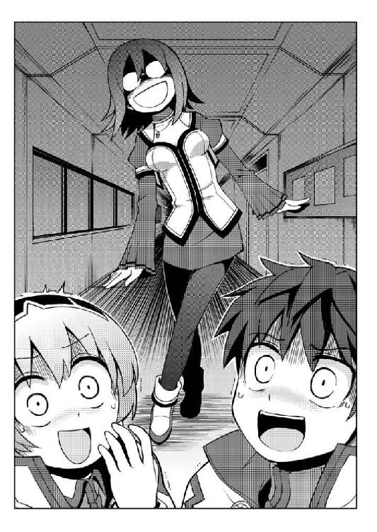

| 桜ノ杜ぶんこ 剣と魔法と学園モノ。Lv.4 キルシュトルテ姫暗殺計画！？ | |
| 佐山操 | |
| (2013) | |
桜ノ杜ぶんこ
剣と魔法と学園モノ。Lv.4
キルシュトルテ姫暗殺計画!?
佐山 操

＃01 スーパーアリーナみたいな場所
キルシュトルテ姫『まず民衆の退路を確保するのが先なのじゃ！ 民衆を守ることがわらわの勤めなのじゃ！』
お、姫様かっちょいいことを言ってるなぁ。
『陣頭に立って民衆避難の指揮を執るキルシュトルテ姫殿下。しかし、その背後に暗殺者たちの魔の手が迫っているとは、キルシュトルテ姫殿下もその付き人たちも気づいていなかった！』
ん？ あそこでクラティウスも俺も気づいていた気がしたが......。
『迫る暗殺者たち。その姿にキルシュトルテ姫殿下が気づいた時、すでに暗殺者は銃を構えていたのである！（ベベンッ！） 嗚呼、キルシュトルテ姫殿下は絶体絶命の大ピンチ!!』
観客が一斉に固唾を飲んだのがわかった。
『そこに颯爽と現れたのは、紅い暴風王ヴィントホーゼ・シャルラハロート!!』
観客から盛大な拍手がわき起こった。
な、なんか照れくさいなぁ......。
『ヴィントホーゼは群がる暗殺者たちをバッタバッタと薙ぎ払い、キルシュトルテ姫殿下の護衛についたのであった！』
あれ？ 俺は最初からそこにいなかったか？
キルシュトルテ姫『嗚呼！ ヴィントホーゼ様！ そなたは一命を賭してわらわを助けにきてくれたのじゃな！』
ちょっと待て。キルシュトルテ姫は絶対に俺を様付けでは呼ばねえって！
ヴィントホーゼ『姫殿下をお助けするためなら、このヴィントホーゼ、例え火竜の巣の中でも参ります！』
ないないないない。そんなことないって。
ヴィントホーゼ『姫様危ない！』
ぱん！ ぱぱぱぱぱぱぱぱぱんっ！
すっげー銃声。
おいおいおい。撃たれすぎじゃねえのか？ どう考えても、血まみれになってて、明らかに死んでるだろう。
『嗚呼！ ヴィントホーゼ！ 彼がキルシュトルテ姫殿下を庇い、その身に受けた弾の数は実に二〇を超え、然しものヴィントホーゼも吹き飛んだ』
いやいやいや、吹き飛んだというか、普通死んでるから！ 頼むから受けた弾数を勝手に増やすな！
キルシュトルテ姫『嗚呼！ ヴィントホーゼ様！』
『キルシュトルテ姫殿下を守る最強の盾ヴィントホーゼが倒れた今、姫殿下を守るものはその身近になし！ 姫殿下の身に暗殺者の魔手が迫る！』
「立てヴィント！」
「立つんだヴィントホーゼ！」
観客から声が飛んできた。
なんだろう。ヴィントホーゼって人気あるんだなぁ......。
『再び放たれた暗殺者の凶弾！ キルシュトルテ姫殿下の命も風前の灯火！ その時、全身血だるまのヴィントホーゼは立ち上がり、放たれた銃弾を剣で弾いたのだった！』
「おおおおおおおおおおおおおおおおおっ！」
観客から一斉に歓声がわき起こった。
『全身血だるまのヴィントホーゼのその姿は、文字通り紅い暴風王！ 満身創痍の彼は剣を振るって二発、三発と暗殺者の凶弾を弾き飛ばしていく。その数ざっと五〇発！』
盛ってる！ それは盛りすぎだっての！
俺が弾いたのは偶然の一発だけだぞ!!
『満身創痍のヴィントホーゼはキルシュトルテ姫殿下を背後に庇ったまま、ジリジリと後ろに下がるしか道はない。窮地は変わらず、二人の運命はこれいかに!!』
えっと、舞台には付き人がいたんじゃないのか？
そもそも、クラティウスがいただろう！
暗殺者Ａ『はっはっはっはっはっはっ！ ヴィントホーゼの伝説もこれにて終いよぉ！』
思うんだが、なんでこう悪役っていかにも悪者って面をしているんだ？ オコゼみたいな顔だったり、口の周りにヒゲを生やしていたり......。観客にわかりやすくするためか？
本当の悪者って......そう、例えるならロザリンドみたいなヤツだと思うんだよな。あいつのふたつ名は、確か『滑稽なるビンターナーゲル』じゃなかったか？
暗殺者Ｂ『この場にて、二人とも命を取ってやるうううううううううっ！』
ヴィントホーゼ『キルシュトルテ姫様。せめて姫様だけでもお逃げください！ このヴィントホーゼ、死しても姫様の退路だけは確保いたします！』
キルシュトルテ姫『なりませぬ。愛しきヴィントホーゼ様を置いて、わらわが一人逃げることなどできぬのじゃ！』
なんだ？ 会場の女の子たちがうっとりして聞いている、姫様役のこの女優さんの台詞が会場に響いた瞬間、左右に座るエルトやシュテルから、すっげー暗黒オーラが立ちのぼっているように感じるんだが......。
キルシュトルテ姫『わわらわが一人で逃げたとしても、愛しきヴィントホーゼ様がいない世の中など闇に包まれた世界も同然！』
ほらほら、殺気のこもった視線を向けちゃうから、女優さんが台詞を噛んじゃったじゃねえかよ。いくら自分たちにそういう機会と相手がいないからって、お芝居と現実を混同しちゃいけねえっての。まったく、これだから女ってヤツは......。
暗殺者Ａ『へっへっへっへっへっ！ 姫殿下お覚悟！』
こういう時でも暗殺者は姫様に敬語を使うんだなぁ......。
『暗殺者の凶刃が迫る！ その時飛来したのは一本の豪槍！ その槍は暗殺者たちを貫き吹き飛ばした！』
シュテル『ヴィントホーゼ様！ ご無事ですか！』
「あれっ。あたしが出ている」
そうつぶやいたシュテルの言葉には、どこか嬉しそうな響きがあった。まぁ、オモチャのようにいじられないのなら、嬉しいよなぁ......。
『現れたるは最強戦士の名を受け継いだシュテル・クスト！ その豪槍を振るって暗殺者たちを薙ぎ払う！』
シュテル『ヴィントホーゼ様！ あなた様へのこの愛の強さを示すために、この槍振るわせていただきます！』
「なっ!!」
いきなり俺の隣でシュテルが爆発する勢いで真っ赤になりやがった。
まぁ、ホラ。絶対に言わないような台詞を、勝手に舞台で吐かされる恥ずかしさがこれでわかるってヤツだよな。うんうん。
あれ......？
また、エルトやミーナたちからダークサイドな暗黒オーラが立ちのぼってんだけど......。あれか？ 自分たちが舞台のキャラクターになれなかった嫉妬ってヤツか？
まったくまぁ、醜いねぇ......。ホント醜い。
嫉妬で友だちに対して暗黒オーラを立ちのぼらせるなんて......。
自分たちが舞台のキャラになってないから嫉妬なんかできるんだぜ？ 実際に立たされて見ろよ。シュテルみたく恥ずかしくってたまらないんだからな。
キルシュトルテ姫『嗚呼！ ヴィントホーゼ様！』
あれ？ もうシュテル退場？
あれだけかっこよく出てきて尻切れもいい所だろう！ この脚本家出てきやがれ、俺はいいからシュテルを出せ！ これ以上俺様だけで遊ぶな！ 生贄にシュテルも混ぜろ！
そんな俺の心の叫びも虚しく、シュテルは退場し、真っ暗になった舞台の真ん中にスポットライトがひとつ灯され、キルシュトルテ姫様の膝枕で寝コケるヴィントホーゼが現れた。
『嗚呼、ヴィントホーゼ。彼が受けた無数の凶弾はその命を奪い取っていくぅぅぅぅ』
「なっ......」
お、俺はあそこで死んだのか？
じゃあ、今ここにいる俺はもしかして......幽霊!?
い、いやいやいやいやいや。九死に一生を得たことは確かだが、俺はまだ生きてる......はず。どっちかっていうとユーノ先生に殺られかけたという方が現実に近い気がするんだが......。
キルシュトルテ姫『嗚呼、ヴィントホーゼ様！ どうか、どうかわらわの元に戻ってきてください。我が身はあなたに捧げたもの。ヴィントホーゼ様亡き世は闇でございます』
思うんだが、この脚本家は本当にあの姫様に会ったことがあるのか？
どう転んでも......いや、この世界が滅んでも、キルシュトルテ姫は絶対にこんなことを言わんぞ。
『ワルキューレが戦士ヴィントホーゼの魂をヴァルハラに召さんとしたその時、麗しきキルシュトルテ姫の涙がヴィントホーゼの口元に零れ落ちたのだった！ その瞬間、ヴィントホーゼは命を取り戻し、ムクリと起き上がったのであーる！』
キルシュトルテ姫『ヴィントホーゼ様!!』
ヴィントホーゼ『キルシュトルテ姫様！ 姫様の愛のお力で、このヴィントホーゼは一命を取り留めました！』
「..................」
なんだろう。吐き気がする......。
もう、愛だ愛だと言い続けられて、お腹いっぱいだよ。
どうやったら、こんな背中がかゆくなるような台詞を真顔で吐けるんだ？
キルシュトルテ姫『嗚呼、ヴィントホーゼ様！ わらわのそばから、もう離れないでくださいまし！ わらわと共に未来永劫添い遂げてくださいまし』
『こうして、ヴィントホーゼ・シャルラハロートとキルシュトルテ姫殿下は、愛を固く誓ったのだったぁぁぁぁっ！』
演壇の弁士がそう言うや舞台に幕が落ち、観客たちが会場に割れんばかりの拍手を轟かせた。
なんか、こう......じんましんでも出てきそうな幕引きだったな......。
まぁ、説明するまでもなく、これは前回のプリシアナ事件を元に作られた舞台劇だった。事件から最短で公開された劇ということもあり、荒削りなところは否めないし、相変わらずの誇張が面白い。これが広がるにつれて、さらにどう誇張されるのか見物だな。
実際に俺が受けた銃弾はたったの一発で、もう一発は掠めた程度だったんだけど、まぁ面白いからこの血達磨状態には口出ししないでおこう。しょせんはヴィントホーゼの冒険。俺のことじゃねえからな。
とまぁ、相変わらずの誇張劇を見終えた俺たちは、キルシュトルテ姫様たちとともに、モーディアル学園の船に乗せてもらい、ドラッケンへの帰路についた。
＃02 ドラッケン学園大通り
学園都市の大通りはヒマ人──や、出迎えの人たちであふれていた。
なんでこーなってんだ？
大通りの長さは約一キロ。その沿道には黒山の人だかりができていた。まさにあれだな。
『ゴミが人のようだ！』って状況だ。
ホント。どーしてこーなったって感じだな。
「安心するのじゃ。この集まった民衆は、お前を歓迎するためのものではないのじゃ」
は？
脇から声をかけてきたキルシュトルテ姫は、あっけらかんとそう言った。
じゃあ、なんなのこの人だかりは？
そんな俺の疑問に、さらに拍車をかけるように現れたのは、三台の豪奢な馬車だ。
正しくは、絢爛豪華な二台の馬車と、それなりに豪華な馬車って感じだな。いずれも屋根がないタイプで乗っている人が周りに丸見えになるヤツだ。
「間違えたのじゃ。一応、そなたらを歓迎する民衆でもあるのじゃな。くくくく......」
「はいいいいいいいいいいっ!?」
俺たちパーティのメンバーは、一斉に顔を見合わせていた。
どういうことだ？
「思い出すのじゃ。シュテルはベルタと共に、学生最強戦士の座についたのじゃぞ。まして、ベルタは永世最強戦士となった。これは見たいと思うものじゃろう？」
ああ、なるほど......。
つまり、この人だかりは、永世最強戦士の座を獲得したベルタ先輩と、先輩の相方として最強戦士となったシュテルを一目見ようと集まった人たちってことか。
そうこうしている間に、シュテルの前に儀仗兵と思しき男が跪き、出迎えの挨拶を言上しはじめた。
「シュテル・クスト様！ お迎えに上がりましたので、馬車までご同道くださいますようにお願い申し上げます！」
シュテルは困った顔をしつつも、仕方ないと諦めたのか『行ってくるよ』と一声残して儀仗兵の後に続いた。
そしてまぁ、俺たちも儀仗兵たちに連行されるように、三番目のそれなりに豪華な馬車に乗り込んだ。
「ヴィントよ、不景気な顔は厳禁なのじゃ！」
「は？」
声の方を見ると、前の馬車でキルシュトルテ姫が立ち上がってこちらを見ていた。
「おまえの仲間が大歓声を受ける場なのじゃ。だから、不景気な顔は厳禁じゃぞ！」
「あー......了解しました」
まぁ、ベルタ先輩となによりもシュテルの祝いのパレードだもんな。脇役の俺たちが盛り上げてやらないでどうするってやつだ。
ここまできたら、もう覚悟は決まったぞ。
そうこうしているうちに、ベルタ先輩とシュテルを乗せた御者付きの大型四輪馬車は動き出した。
日頃は愛想のいい顔を見せないベルタ先輩も、この時ばかりは景気の良い笑顔を振りまいていたし、シュテルもわかっているのか沿道の人たちににこやかに手を振っていた。シュテルの場合は色気も振りまいているせいか、沿道の男どもの歓声がベルタ先輩よりもシュテルに集中している気がする。
その馬車の後に続くのはキルシュトルテ姫が乗る馬車だ。姫様はクラティウスとお付きの武官に護られながら、普段の陰謀顔からは想像がつかない愛想の良い笑みを浮かべて、手を振っていた。
いやまぁ、普段からこんな笑顔を見せられても、何を謀まれているのかと身構えちまうだけだから、別にいいんだけどよ。
それに続くのは俺たちのパーティを乗せた馬車だ。
何の遠慮もなく満面に笑みを浮かべてブンブン手を振るリープは人気者であり、同様にいいお顔で愛想を振りまくミーナも人気が高かった。
よもやこんなに大勢の人に出迎えられるとは思っていなかったのだろう。エルトは緊張した面持ちでカチカチになっていた。
そしてテュルキスは我関せずという顔をして、熱心に『キノコと竹の子と私』という本を読んでいた。無論、愛想のカケラもなく、沿道に手を振ることもない。
いや、たまにヒラヒラと手を振るというか、手を泳がせているような素振りを見せているから、多分、本人的には最高の愛想を振りまいているつもりなんだろう。
で、俺様か？
いつものように、鼻くそをほじって馬車のイスにふんぞり返っていたいところだが、今はシュテルとベルタ先輩の晴れ舞台だ。キルシュトルテ姫のなんとか行列ならいつも通りだが、今回は見世物よろしく、馬車の縁に足をかけ、腕組みをして正面を睨む、俺的には三〇〇パーセントのカッコよさを振りまくポーズで決めてやった。
ふふふ、沿道のギャルが発疹していくのが目に浮かぶぜ。
そしてまぁ、目立つ俺たちを見て、例によって物陰でギリギリとシャツの裾をかじって涙目になっているロザリンドの顔が想像できたのは、お約束言ってやつだな。
この時の俺たちはいつも通り、おバカな日常を楽しんでいた。
あの舞台劇が引き金となる、今まで以上にとんでもない事件が待ち構えていることなど、露ほども知らずに......。
＃01 ドラッケン学園キャンパス
ヒソヒソヒソ──
レベル３と同じ出だしで失礼。
ダラダラと足を引きずるように、眠そうな顔をして登校してきたヴィントの周りでは、今日も噂話で持ちきりだった。
ヴィントを見てはヒソヒソヒソと小声で囁かれる噂話。
ヴィントとしては、また女の子たちからの猛烈アタック『オペレーション亭主元気で留守がいい』をぶちかまされるのかとゲンナリする思いがあったが、なぜか学校に来ても誰一人として、その作戦を決行しようとする女子生徒がいなかった。
ヴィントとしては最初の一人くらいだったら、マトモに相手をしてあげてもよくってよと、かなり上から目線で思っていたのだが、誰一人くる者はいなかった。
一緒に登校しましょうと、校門の陰で待ち構えている娘もいない。
下駄箱にラブレター一通入っていない。
廊下で待ち構えていて、食パンをくわえて突撃してくる娘もいない。
一緒に勉強しようと言ってくる娘もいない。
お弁当を食べましょうと誘ってくる娘もいない。
クッキー焼きすぎちゃった。食べてくれないかな？ と言ってきてくれる娘もいない。
それどころか、ヴィントに話しかけてくる女生徒は、皆無だった。
大事なことだから二回言おう。話しかけてきてくれる女生徒すら、皆無だった!!
「なんなんだよ......。この異様な雰囲気は......」
なんというか、女生徒の視線が腫れ物に障るようなものに変わっていたのだった。
ヴィントはこの瞬間、恐れを抱いた。
──もしや......。
そう、そこにはヴィントが怖れる言葉が鎮座している気がした。
モ・テ・キ・終・了ッ！
ガーンと耳の後ろで銅鑼を鳴らされたような衝撃がヴィントを襲い、彼にＯｒｚな姿勢を取らせていた。
──本当に僅かな時間だけの我が世の春だった......。
プリシアナなんかに行かされていたからモテ期が終了してしまったんだとか、こんなことならプリシアナにいればよかったかなど、様々な思いがヴィントの脳裏をグールグールと回っていた。
そして廊下で膝を突き、泣き伏しているヴィントに駆け寄る者はなく、ある者は哀れみの目で彼を見つめ、ある者は嫉妬や羨望の眼差しで彼を見つめた。
そして、ヒソヒソヒソと噂話に尾ビレ手ビレがついてさらに広まっていった。
「やっぱり、ムリヤリだったのよ」
「もう、ヴィント君はフリーじゃないのね......」
「ああ、どっかにいい男いないかなぁ」
「いっそ、ヴィント君と駆け落ちしちゃうとか!?」
知らぬが仏とはよく言うが、ヴィントの周りで囁かれている噂話に混じっている言葉を拾うと、決して彼のモテ期が終了したわけではないように思えた。まぁ、きっと面白いので、誰もヴィントに本当のことを言うことなどなさそうだったが......。
問題は、今回ヒソヒソと噂話がされているのがヴィントの周辺だけではないことだった。
＃02 ドラッケン学園セレブリティ・サロン
ヒソヒソヒソ──
学園に通う貴族の子女や著名人しか入ることのできないセレブなサロンでも、ヒソヒソと噂話が盛り上がっていた。
どちらかというと、こちらはうっとりとする彩色が施された噂話だった。
「ねぇ、お聞きになりまして？ 実は、姫様がなさいましたプリシアナまでの競争は、ヴィントホーゼ様を見極めるための試練だったようでございましてよ」
「道ならぬ恋を共に進むことができるのか？ それをお試しになられあそばしたのですわね」
サロンに集う花たち。基本はプリンセス学科を習得してきて、このセレブリティ・サロンに立ち入るために、ドラッケン学園を受験した貴族の子女たちだった。
肝心なキルシュトルテ姫がきていないために、サロンでは噂話で持ちきりだった。
身を挺して姫を救った紅き騎士ヴィントホーゼ。
元々は、あのスーパーアリーナでヴィントが姫を庇って銃弾を一発腹に受けた事件が情報源だった。
当時、文字だけの速報でキルシュトルテ姫暗殺が伝えられ、王宮はもとより大陸全土が沸き返ったが、ヴィントが身体を張って護ったことが続報されるや、安堵と共に身分違いのロマンスの噂が一気に貴族女性たちの間に広まったのだった。
護衛官でもない一介の冒険者が、雇われてもいないのに命がけで姫様を護る理由はそれしかないというのが、彼女たちの噂の根拠だった。
さらに、未確認ながらプリシアナ学院内でキルシュトルテ姫がプロポーズした。あるいは逆にヴィントがプロポーズしていたという噂も流れ出し、貴族の姫君たちのピンク色の妄想はさらに激しくエキサイトしていた。
「姫様が素直じゃないことは重々承知いたしておりましたが、よもやそんな形でプロポーズなさるなんて......」
「でも、このヴィントホーゼという殿方は、本当にロマンス小説に登場する騎士のような方なのでしょうね」
実物のヴィントを見ていないものだから、彼女たちの妄想の中のヴィントホーゼは極端に美化されていた。具体的には、当社比で五〇〇倍くらい......。
「すらりと長い足で優雅な物腰。その瞳に見つめられたら胸の高鳴りが抑えきれなくなってしまうほどに美しい方だとか......」
「全身に五〇発もの銃弾を浴びてもなお、悪漢に立ち向かったと言うお話でしょう」
ヴィントたちがプリシアナで見た舞台劇では、彼が受けた銃弾は二〇発だった。しかし、海峡を渡ってドラッケン学園やノイツェハイムのある大陸に舞台劇がやってくる頃には、尾ビレ手ビレがさらに増えて、受けた弾の数は五〇発。あるいは弾を受けた瞬間に、暴風なんとかという必殺技を使い数十発の弾を無効化したとかになっていた。
ここまで変化すると、もうヴィントも特撮と笑って楽しむしかなくなるわけだが、現場を知らない深窓のご令嬢たちは、目を輝かせてそれを真実と受け取っていた。
「嗚呼、本当に騎士の中の騎士という殿方ですのね......。姫様とご婚約が成立なされた暁には、一度サロンにてお話したいですわ......」
「もしも......国王陛下が姫様のご結婚をお認めにならない時は......」
「わたくしたちの誰かが、ヴィントホーゼ様とお付き合いしてもよろしいんじゃありませんですこと？」
アイドルとの結婚を夢見る女性は、どこにでもいるということなのかもしれない......。
＃03 学食『冒険者の酒場』
「ブエーックション！」
あー......。風邪か？
テーブルに備え付けられていたナプキンで鼻を拭いて、俺はまた食事に戻った。
今日のメニューはラーメンだ。
ここのラーメンはチャーシュー麺ではないのに、チャーシューが三枚も入っていてちょーお得なのだ。ちなみに、チャーシュー麺の場合は一二枚になるボリューム仕様だ。
プリシアナの食事は、なんかこう......お洒落っぽかったんだけど、こういう質実剛健というか、直接的にパワーがわかるものがなかったな。
このストレートに〝肉〟って感じが、やっぱりドラッケンのいいところだと思う。
これでキルシュトルテ姫様がちょっかいを出してこなかったら、もっと最高なんだけどなぁ......。
まぁ、世の中は中々上手くいかないということだろうな。
あのプリシアナまでの賭けレースで、キルシュトルテ姫に『俺たちにちょっかいは出さない』と約束させたものの、いつまで......あるいは、ちゃんとそれを遵守してくれるのかは謎だった。
王族は約束を違えぬのじゃ！ とか言って護ってくれるなら御の字だが、王族の約束事などしょせん飾りなのじゃ！ とか言われてご破算にされる可能性だってある。
まぁ、姫様の気まぐれがどこまで続くかってことだな。
その辺は仕方ないと諦めるしかない。なんせ、あちらは統治者のご息女。こちらは国民だからな。
「あああ......このしょう油味のスープが最高だぁ......」
ホント、ウィステリアの誘いに乗って、転校しないで正解だったと思う。
どう考えても、この学食の味はあっちにはないからなぁ......。
しかし......。
どうにかならんのか、この居心地の悪い視線の矢は！
あの凱旋パレードまでは、今まで通りの日常だった。
しかし、ドラッケンに帰ってくると、俺のモテ期は終わっていた。
い、いや、それには未練なんかないんだからな！
胸焼けするくらいクッキーを食わせられたり、一〇人前の弁当を喰わせられたり......。
嗚呼、今となっては......なにもかもが懐かしい......じゃねえ！ まぁ、学園生活のいい思い出ってやつだな。
決して、またあの生活に戻りたいなんて思ってなんかいねえぞ。
ま、まぁ、弁当を持ってきてくれる子が一人くらいなら、俺もありがたがって喜ぶけどさぁ......。モテ期じゃなくなったら、そんな夢......ないよなぁ。
そ、そんなことはどうでもよかった。
俺のモテ期なんかどうでもいい！（ホントはよくないが......）
なぜだが知らんが帰ってきたら、俺に向ける学生たちの視線が変わっていた。
痛々しいものを見るような目とか、哀れみが込められたものを見るような目とか......。ああ、他には......そう、物好きなヤツという感じの目線か？ なんだかそんな視線が俺様に降り注いできているような気がして仕方がない。
アレか？ また舞台劇の主役になっちゃったのね、可愛そうに......という意味の哀れみなのか？
痛々しいものを見るとか哀れみとかは、なんとなく分類が似ている気がする。ただ、最後の物好きなヤツって目は、前のふたつとかみ合わない気がするんだが......。
とにかくモテ期終了と、そのなんだかわからない視線に晒される毎日。もう、ウンザリだよなぁ......。
この前の冒険は、冒険って言うよりも出張って感じ？
なんかこう、冒険らしい冒険をしてみたいんだが......。
例によって俺のパーティにくる依頼の中に、この近所にあるダンジョン探索みたいなものはねえ。
もう、『清酒・美少年』を取ってこいみたいな依頼でいいからこないもんかなぁ......。
こうなったら、海峡を渡る地下ダンジョンを隅から隅まで見聞する探索行にでも行くべきか？
そんなことを悩みながら、俺はズズズッとラーメンを啜り、忍び難きを忍び、耐え難きを耐えという生活をするのだった。
それにしても、あいつらはなんで俺を見て、ヒソヒソと話をしてんだろうなぁ......。
なんかコソコソしていて、むかつくんだよなぁ。
＃04 王都某大貴族屋敷・密議室
ここは王都ノイツェハイム郊外にある、とある大貴族の邸宅。郊外と言っても、馬車で三〇分も走れば王都の中心地域に入れるという好立地。大貴族故に住める土地だった。
そんな邸宅の中にある、窓ひとつない部屋。壁はぶ厚く聞き耳が立てられないようになっていたが、日頃からあまり注意を払っていないのか、ドアは半開きの状態で部屋の中の会話が廊下に筒抜けになっていた。
「あの民衆舞台劇はなんだ！ あれではキルシュトルテ姫様が、あのクソ忌々しい下賤な男に求婚したようではないか！」
怒声を響かせたのは、代々この国の大臣を輩出している大貴族の一人だった。
「仕方あるまい。キルシュトルテ姫様が、求婚されたのは事実という報告もある」
同じような立場の貴族が、苦虫をかみつぶしたような顔でそう応じた。
この部屋に集まっている貴族は、いずれもノイツェハイムの国政に、なんらかの形で参画している者たちばかりだった。
「これを見るがいい。プリシアナで発行されている低俗なスポーツ新聞の記事だ」
そう言ってテーブルの上に新聞を滑らせたのは、ノイツェハイムの傭兵軍を指揮するシュトライト子爵だった。
彼は二〇代後半の優男風のディアボロスだった。だが、彼は指示を聞かないとよく言われる傭兵を指揮し、縦横無尽に操ることができると言われ、また非常に陰謀好きの切れ者と言われていた。また、ノイツェハイムの直轄領土を軍事力でもっと増やそうと考える拡張派貴族の一人と目されていた。
ノイツェハイムの現国王の王弟がこの拡張派の筆頭であり、王弟はノンビリとした気質の現国王と仲が悪いという評判もあった。そのせいかもしれない。現国王はシュトライト子爵とも疎遠であり、傭兵軍を動かすこともあまりなく、彼の才能は駆使する機会に恵まれずにいた。
そんなシュトライト子爵が持ち込んだスポーツ新聞を見た大貴族たちは、目を白黒させて慌てふためいた。
一面トップの見出しには、こうデカデカと書かれていた。
『キルシュトルテ姫衝撃の告白ッ!!』
例によって、新聞は衝撃の部分で見出しが途切れるように折られていた。
写真はプリシアナのスーパーアリーナで撮影されたものだ。
ヴィントが腹を抱えて座り込んでいる様子から、狙撃直後と思われた。見ようによっては、ヴィントが姫様に傅いているようにも見える。
よく見ればキルシュトルテ姫の姿はサイズが合っておらず、合成にも見えなくもない。
しかし、姫がプリシアナでヴィントに告白したという噂が王都でも流れていたために、合成だという疑問はナシに、貴族たちは簡単に受け入れてしまった。
「バカな......」
「写真まで撮られているとは、ウカツ過ぎるではないか!!」
貴族たちは口々に絶望の台詞を漏らした。
「競技場貴賓席にてヴィント氏に向かって愛の告白をするキルシュトルテ姫──そう、書かれていますな」
シュトライト子爵は頬杖を突きながら、追い打ちをかけるように小見出しに書かれていた言葉を口にした。
もちろん、軍人として戦場を駆け抜けた経歴の持ち主であるシュトライト子爵は、この写真のヴィントが負傷してうずくまっていることなど承知していた。だが、今それを口にしたらまったく意味がない。
「この調子では、プリシアナの主席執政官アーサー・ベネディクト卿も間近で見ておいででしたでしょうなぁ」
「なにが言いたいのだ、シュトライト子爵」
国務大臣であるラッツェンバーガー侯爵は、苛立った調子でシュトライト子爵に話を続けるよう促した。
「ふふ。いえね......。これだけの民衆の前での告白。そして、見届け人としては地位も爵位も問題のないベネディクト卿がいる場所での告白ですよ。姫が身分不相応な男に恋をしたために、敢えてこの場所を選び、観衆を前に既成事実を作って国元に認めさせるために告白したとは考えられませんか？」
「むむむ......」
無論、今の言葉はシュトライト子爵の想像でしかない。
「子どもらしくもあり、狡猾でもありますな。さすがは、我が国きってのお転婆姫様ですなぁ......」
「もしも、この姫様の行動がそなたの想像通りだったとしたら？」
シュトライト子爵は人の悪い笑みを浮かべた。
「国王陛下、そして我々がこの事実を認めねば、民衆の反発を食らいましょうな。なんと狭量な国王陛下だと。姫様の恋のお相手くらい認めてやらぬのか......とね」
「ぬぬぬぬ......」
「ヴィントホーゼ・シャルラハロートを我々は下賤な輩と呼んでおりますが、世間はそうは認めぬでしょうな」
「ヤ、ヤツは名も無き農夫の息子ぞ!!」
脇から声を上げた貴族に、シュトライト子爵は冷たい目線を投げかけた。
「その名も無き農夫の息子は、貴公よりも名誉と勲章を得ているのだよ」
「な......」
「入試ドラゴンスレイヤーにして、史上初のシュタインズ・ベルグ刑務所脱走者。ノイツェハイム殊勲十字章最年少受勲者。そして今回の遠征でベネディクト卿を救った功績により、プリシアナ銀星名誉勲章を受勲。さらにプリシアナ政変を未然に防いだことから、プリシアナ殊勲章を受勲されておりますな」
シュトライト子爵はひとつ咳払いしてさらに言葉を続けた。
「一五歳の小僧が、入学後わずか半年ちょっとでこれだけの勲章を得ているというのも珍しいものです。プリシアナ政変を防いだことに至っては、最高名誉勲章を授与しなかったことですら民草の間では不満の声が聞こえていましたからな」
そう、プリシアナ政変でヴィントが立てた功績に対して、ノイツェンハイム王家から勲章が出なかったことが舞台劇で報じられ、ヴィントのあずかり知らぬ所で不満の声が漏れていた。
「これだけの功績を持つ者を下賤とは言えますまい」
「だ、だが、生まれの低さは変えられぬものだ！」
シュトライト子爵にやり込められた貴族はそう反論した。しかし、シュトライト子爵はそれを鼻で笑った。
「誰もが最初は低い身分でありましょうに」
「では、貴公はこの婚姻を認めろと言うのか!! あの下賤な成り上がり者が、いずれは我らの頭上に国王として君臨することになるのだぞ！」
シュトライト子爵はその言葉を待っていたかのように、ニヤリと謀反気のある微笑を浮かべ、チラリとラッツェンバーガー侯爵の顔を見た。
「それを決めるのは私ではありませんな。そのような不遜なことを、タカが一子爵の私がどうして決められましょうや」
ラッツェンバーガー侯爵は大貴族たちの顔を見回してから、静かな口調で切り出した。
「では、貴公の意見を聞こうか。決定せずとも意見なら言えるであろう？」
シュトライト子爵は懐からモノクルを取りだして左目にかけた。
「私の意見はふたつです。ひとつは、承認してしまうこと。国を挙げて国民的英雄の婿殿をお迎えする方法です」
「バカな！」
「そんな意見は認めるわけにはいかんぞ！」
大貴族たちは口々にそう反対の声を上げた。
もちろん、その声が上がることはシュトライト子爵も承知していた。
「で、シュトライト子爵。もうひとつの意見はなにかな？」
こちらがシュトライト子爵の本当の意見であることは、質問したラッツェンバーガー侯爵もわかっていた。
「こちらも簡単です。王位継承権を王弟殿下にお譲りいただけば良い」
ザワザワ......。
部屋にいた貴族たち全員がザワついた。
王位継承権の第一位は、国王の一人娘であるキルシュトルテ姫にあり、第二位が王弟にあった。どこかの国と違い、嫡子であれば男女の別なく王太子か王太女となる。
それを譲るということは、すなわち王位継承権を破棄して王族を辞めて庶民になることを意味した。
「つまり......キルシュトルテ姫殿下に降嫁せよ......というのか？」
キルシュトルテ姫が王族の権利を捨てて庶民になるなど、あの性格を考えればあり得ない話だった。現実は舞台劇とは異なる。
『愛さえあれば他にはなにもいらぬのじゃ』
そんな妄言を、あのキルシュトルテ姫が口にするはずがなかった。
「シュトライト子爵もずいぶんとお甘いようですな。キルシュトルテ姫様が降嫁などを選ぶはずがなかろう。まったく、戦場に出ぬものだから、その切れ味も錆び付いたようですなぁ」
貴族たちから失笑がこぼれた。
だが、シュトライト子爵は冷笑を浮かべて彼らを見回した。
「誰が降嫁などと言いましたかな？」
「な......」
ザワザワ......。
再び貴族たち全員がザワついた。
降嫁でなければ、キルシュトルテ姫の王位継承権を剥奪する方法がなんなのか？ それが彼らにはまったくわからなかった。
「簡単な話です」
シュトライト子爵は、どう見ても好青年にしか見えない笑みを浮かべた。
「死んでいただけばよいのですよ」
その場にいた誰もが息を飲み、ザワつくこともできずに凍り付いた。
「邪魔者であれば殺してしまえば良い。違いますかな？ くくくく......」
国務大臣として、国の柱石として国政に長く携わり、国政の光も闇も見てきたはずのラッツェンバーガー侯爵ですら、シュトライト子爵のように笑顔でそれを口にできなかった。
それはある意味、反逆を意味する言葉でもあった。
「主君の姫君を弑逆奉ると......言うのか？」
「これは異な事を仰る。ここにお集まりの方々が心の中で御主君と思われておられる方は、王弟殿下ではございますまいか？」
シュトライト子爵の言葉を暴言と言い切る者はどこにもいなかった。
彼は軽く首を横に振り、おやおやというように両手を軽く広げて肩を竦めて見せた。
「皆様、勘違いをなされては困りますな。私はラッツェンバーガー侯爵から意見を求められたために、あくまでも私の私見として方法を述べたまでにすぎません。決定は大貴族の皆様でお決めください。もちろん、降嫁も選択肢に含めて......」
決定権はすべて大貴族にある。自分はあくまでもその選択肢をいくつか並べたにすぎない。シュトライト子爵はそう自分の立場を明確に示した。
「おや？」
「どうかしたのか？」
「いや、そろそろ風も出てきて冷えてきましたかな」
「風を通したいから、貴公がそこのドアを開けておけと申したのであろうが」
「いやいや、失敬」
シュトライト子爵は椅子から立ち上がり、半開きのドアを開けて廊下を確認した。しかしそこに人影はなかった。
「ふむ。ネズミはおらぬか......」
そう意味深な言葉を呟いたシュトライト子爵は、微笑を浮かべながら扉を閉めた。
＃05 王都某大貴族屋敷・密議室前廊下
時間はわずかばかり戻る──
実家に用事があってドラッケン学園から王都に里帰りしていたロザリンドは、さらに届け物があってこの某大貴族の屋敷にやってきていた。
いつもほんのワンカットだけの登場しかなく、それもまさに添え物って感じで一方的にヴィントに差をつけられ、読者にも忘れられかけていたであろう狡猾なるビンターナーゲルこと、ロザリンド・フォン・ビンターナーゲルは、執事のアルベルトと共に、ここで活躍して一気に主役の座を射止めてやろうと謀んでいた。正に狡猾！
「うるさい黙れ、静かにしろ」
そんな風に、作者の地の文に反論しちゃうほど、緊張した面持ちで屋敷の廊下を歩いていた時だった。
「写真まで撮られているとは、ウカツ過ぎるではないか!!」
そう聞き覚えのある大貴族の叫びが、廊下に響き渡った。
「なにごとだ？」
「さあ......」
大貴族の会話であり、こうした場所に響く言葉は普段なら無視するのが下級貴族の習わしだった。少なくとも、盗み聞きなど礼儀に反する。
だが、ロザリンドもアルベルトも、響いた言葉になにか尋常ならざるものを感じた。
しかし、どうしたらいいのか判断に困る。
何事もなかった顔をしてここを過ぎ去るべきなのだが、聞き逃してはならない雰囲気が言葉の端々から感じられた。
「アルベルト......」
「はい」
「余は礼儀に反することをするぞ」
「畏まりました。お供させていただきます。ユア・ハイネス」
ヒソヒソとそうやりとりした主従は、ボソボソと聞き取りづらい会話が響いてくる密議室に向かって忍び足で歩み寄った。
「ヤ、ヤツは名も無き農夫の息子ぞ!!」
もう少しで、小さく開いている扉のそばにたどり着き、聞き耳が立てられるという距離まで近づいた時、今度は別の貴族の言葉がそこから響いてきた。
──ヴィントのことを話しているのか？
ロザリンドは脳裏に浮かんだヴィントのアホ面を振り払い、眉間にシワを寄せて真剣に聞き耳を立てた。
大貴族たちの間でヴィントが話題に上がることが許せなかった。
もしもヴィントをどうにかしろという話であれば、無礼を承知でこの場に飛び込み、その役目を自分にお与えくださいと言ってもいいくらいだった。
だが、話を聞き進めるにつれて、その内容がとんでもない方向に進んでいることに気づき、さすがのロザリンドも青ざめた。
──キルシュトルテ姫殿下の......暗殺を考えているのか？
傍らに立つアルベルトを見ると、やはりその顔は青ざめており小さく唇が震えているのが、扉から漏れる僅かな明かりの中でもわかるほどだった。
「皆様、勘違いをなされては困りますな。私はラッツェンバーガー侯爵から意見を求められたために、あくまでも私の私見として方法を述べたまでにすぎません。決定は大貴族の皆様でお決めください。もちろん、降嫁も選択肢に含めて......」
シュトライト子爵の言葉にラッツェンバーガー侯爵の名前が出てきたのも、ロザリンドには驚きだった。
このノイツェハイム王国の柱石とまで言われる現職の国務大臣までもが、この暗殺計画にかかわっているのだ。
──いや、待て。落ち着くのだロザリンド。シュトライト子爵は、あくまでも選択肢を並べたにすぎない......。この暗殺計画が実行されるとは限らない。
計画がどう進むのか見届けなければならない。
そうロザリンドが心に決めた時、足下の床が微かな軋む音を立てた。
瞬間、アルベルトは翼を広げてロザリンドを抱え上げ、一気に廊下を飛んだ。
誰かが中で動いてから対応したのでは遅すぎる。そうアルベルトは判断した。
長い廊下に張り出した半円の飾り柱の陰にロザリンドを隠し、アルベルトは彼を自分の身体で覆い隠すようにして廊下の様子を窺った。
扉を開けて顔を出したのは、シュトライト子爵だった。
「ふむ。ネズミはおらぬか......」
その声を廊下に残して扉は閉められた。
それから十ほど数えて、二人はそろって息をついた。
「ふはぁ......」
「ロザリンド様。ご無礼を働きまして、申し訳ございませんでした」
「よい。お前の判断は的確だった。足で逃げては、ここまでは逃げられぬ」
あの密議室でどんな決定が下されたのか、それが聞けなかったのは正直残念だったが、アルベルトの判断の正しさはロザリンド自身がよくわかっていた。
命あっての物種。
しかし、それだけに余計にここで帰ってしまうわけにはいかなくなった。本来の目的を果たして帰ったとしても、誰かがロザリンドがここにやってきたことを密議室の誰かに告げれば、怪しまれることは確実だった。
──どうする？ 考えよ。狡猾なるビンターナーゲル！
ロザリンドは考えながら、とにかくその場を離れることにした。
＃06 王都某大貴族屋敷・玄関ホール
大きめの四ＬＤＫの家がふたつほど入ってしまいそうな、無駄に大きなホールの片隅に設けられた椅子に座り、ロザリンドはラッツェンバーガー侯爵たちが出てくるのを待っていた。
もう、この屋敷にきた本来の目的は果たしていた。
その上で、ロザリンドは屋敷の執事と主に断りを入れて、ラッツェンバーガー侯爵がここにきているなら、せめてご挨拶をしたいと申し出て、このホールの片隅で彼らを待つことを許されたのだった。
それはロクな役職を持たない下級貴族であれば、ごく普通に行う売り込み行為だった。
「それにしても......」
「はい？」
「あのシャンデリアひとつで、我が屋敷が買えそうなものだな......」
ロザリンドが見上げたホールを照らすシャンデリアは、大小様々な宝石を煌めかせる、直径五メートルは優にある代物だった。飾り立てる宝石は小さなもので親指の爪ほどもあり、大きなものは広げたロザリンドの掌ほどの大きさをしていた。
ロザリンドのボヤキ通りこのシャンデリアひとつで、小さな城ほどはあるロザリンドの屋敷が買えそうだった。
それほどまでに、大貴族と下級貴族の間でも格差があった。
下級貴族が冒険者になって稼ごうというのも、わからなくはない話だった。
ロザリンドが何度目かのため息をついた頃、密議室の方が騒がしくなり、そこに集まっていた面々が出てきたのがわかった。
ロザリンドは立ち上がってホールの中程まで進み、片膝立ちをして頭を下げて、ラッツェンバーガー侯爵たちが目の前にやってくるのを待った。
「おやおや、これは......」
最初にロザリンドたちを見つけたのは、他ならぬシュトライト子爵だった。
「確か......ビンターナーゲル家のご子息でしたな？」
「はい。ロザリンド・フォン・ビンターナーゲルにございます。本日は所用があり、こちらに参らせていただきましたところ、ラッツェンバーガー侯爵閣下がいらっしゃっていると聞き及び、是非とも拝顔の栄を賜りたく、ここで待たせていただきました次第にございます」
ロザリンドの言上を聞いたラッツェンバーガー侯爵は、ふむふむと頷き、若い孫を見る好々爺のような顔をしてロザリンドに話しかけた。
「では、顔を上げなさい。若きビンターナーゲルよ」
「ははっ」
「今はなにをされているのだ？」
「はい。まだ若輩者故、学校に通い、己が身体と精神を研鑽している最中にございます」
「そうか。そなたは実によい相をしておるな。卒業の暁には我が家を訪ねよ。これもなにかの縁故に、なにかそなたに役職を賜るよう計らおうぞ」
「ははっ。ありがたき幸せにございます！」
ロザリンドは感極まってうれし涙を流し、頭を下げた。
国務大臣と言えば、内政を取り仕切る身分であり、この国では宰相に次ぐ地位を持つ存在だった。その大臣に将来を約束されたのである。下級貴族であるロザリンドの身分では考えられない破格の言葉だった。
その後、ラッツェンバーガー侯爵となにを話したのか、嬉しさの余りロクに覚えていなかった。
そしてラッツェンバーガー侯爵と別れの挨拶をした後で、その後に付き従って屋敷を退出していく貴族たちの言葉にひとつの気になるフレーズが入っていたために、ロザリンドは現実に引き戻された。
それは『傭兵を集める資金を考えなければ』というものだった。
なぜ、傭兵を集めるのか？ 先ほどの話の後で、外征を行う計画が論じられたような時間はなかった。
──もしや、傭兵とは......暗殺者集団？
ロザリンドの脳裏で、密議室の話の内容が渦巻きはじめた。
そしてロザリンドに結論を出させた決定打があった。
「ビンターナーゲル卿。貴公は確か......ドラッケン学園に通われていたのではないか？」
まだそこにいたのかと驚いたロザリンドが顔を向けると、つかみ所のないニヤニヤとした笑みを浮かべたシュトライト子爵が立っていた。
「はっ。ドラッケン学園の普通科を選択しております。極めた後は、別学科を履修する予定でおります」
「なるほど......。では、いずれお会いするかもしれませんな。それでは、失礼します。貴公の前途に幸あらんことを」
そう言って深々と礼をしたシュトライト子爵は、ロザリンドに意味ありげな笑みを残して去って行った。
──いずれ会う......だと？
先ほどのラッツェンバーガー侯爵との会話から、いずれという社交辞令を使ったと考えるほど、ロザリンドは愚かではない。この言葉には必ず意味がある。
シュトライト子爵が傭兵の扱いに長けた将軍であることは、ロザリンドも承知していた。
そして、先ほどの他の貴族の傭兵を集めるという言葉があった。
このふたつが重なれば、これから先、なにが起ころうとしているのかロザリンドにも予想がついた。
「傭兵を使って......ドラッケン学園を攻め立てようというのか......」
シュトライト子爵は、ロザリンドが盗み聞きしているのを知っていたのだ。
そして先ほどの貴族の言葉を拾い出したことも。
その上で、謎めいた言葉を残した。
つまりそれは、生きてラッツェンバーガー侯爵の傘下に入りたければ、ドラッケン学園に帰らずにこの王都に留まれという意味だった。ドラッケン学園に帰って再会したなら、その時は殺すという意味でもある。
もちろん、この言葉の意味もわからずにノコノコとドラッケン学園に戻っているようなボンクラなら、そのまま死んでしまえば良いとも思っているのだろう。
──だが、余は子爵の謎かけを解いたぞ......。
後の問題はロザリンドの選択だった。
ラッツェンバーガー侯爵に忠誠を誓って王都に残るか？
キルシュトルテ姫に誓った忠誠を貫いてドラッケン学園に戻るか？
ビンターナーゲル家を考えるなら、明らかにラッツェンバーガー侯爵側についた方が利があった。専門の軍人と傭兵集団を相手に、冒険者学園の学生たちが勝てるはずがない。
──だが、余に......あの姫殿下を裏切れと言うのか？
愛くるしくも小憎らしいことばかりを口にする姫君。普段は無茶な暴言ばかりを言うくせに、肝心な部分では下々や家臣の者たちに気を配る優しい姫君。
──狡猾なるビンターナーゲルよ......。ここは、確実に分水嶺ぞ......。
ロザリンドはアルベルトを見たが、当然の如く、彼女に相談するわけにはいかなかった。あくまでもアルベルトはロザリンド付きの執事であり、相談をすべき相手ではない。
──余は......。
ロザリンドは迷いながらアルベルトの傍らに歩み寄った。
「アルベルト......」
「はい」
「急ぎ、屋敷に戻るぞ」
「はい」
アルベルトはロザリンドを気遣いながら頷き、手に抱えていたロザリンドの上着を広げて後ろから彼に着せかけた。
＃07 シュトライト子爵屋敷・書斎
窓から見える夜空には、綺麗な銀色の満月が浮かんでいた。
シュトライト子爵は書斎の椅子に座り、目の前の机の上に広げた地図を見ながら、右手でブランデーの入ったグラスを軽く揺らしていた。
書斎の内装は椅子も机も非常に磨き抜かれた豪華なものだった。しかし、窓以外の壁面すべては、おびただしい量の本が収納された書棚になっており、床にはシュトライト子爵が記した世界中の地図が山になっていた。
それは、貴族の部屋というよりも、学者の部屋という言い方の方が近いかもしれない。
そして、彼が楽しそうな顔をして机の上に広げて見ている地図は、ドラッケン学園とその周辺地域の地図だった。
「街路のココとココ、そしてこの地域を封鎖してしまえば、簡単に包囲できる作りになっている......。さて、全学生・最強戦士と言われる女性がいるようだが、学生と大人......どちらが強いか見物ではあるな......」
ドラッケン学園がある街は、学園を中心とする都市構成を考えた学園都市でもあった。
元々は学生たちを目当てとする店が中心になっていた小さな街だったが、次第に拡張されてゆき、今や大陸でもかなりの規模の街に発展していた。
そんな大規模都市だが、街は未だに建設当初の名残をあちこちに残していた。なかでも、ドラッケン学園創設期に作られた小さな城壁が、ドラッケン学園のキャンパスと街の境として未だに使われており、観光名所のひとつにもなっている。
「そして、これを使わせてもらおうか......」
そうシュトライト子爵が呟いた時、ドアをノックする音が響いた。
「入りたまえ」
「失礼いたします」
ドアを開けて頭を下げたのは、年若く見えるノームのメイドだった。
年頃はヴィントたちよりも一、二歳年上だろうか？ 腰まで伸びた綺麗な髪と、どこか眠そうなおっとりとした顔つきが印象的だった。
「すべての準備は整いましてございます」
「そうか。ありがとう。他には？」
「はい。先ほど、ビンターナーゲル家を監視しておりました者から、急報が参りました」
「ほほぅ」
シュトライト子爵は楽しそうな笑みを浮かべた。
「それで？」
「四頭立てのキャリッジ馬車が、この夜中にビンターナーゲル家を出たとのことです」
「ほほぅ......。この時間にキャリッジか。確かあの家に四頭立てのキャリッジは無かったな。では、わざわざ借り受けたということだな。高速で移動することを前提としたか。あの若きビンターナーゲルは、きちんと私の謎かけを解いたようだな」
シュトライト子爵はクツクツと笑った後、不敵な表情で地図を見つめた。
「だが、その選択肢を選んだことは、果たして正しい結果につながるのかな？ 若きビンターナーゲル君......」
「それともうひとつ、ご報告があります」
「なにかな？ 良い報告だといいんだがね」
メイドは笑いもせず、無表情のまま小さく頷いた。
「過日よりお探しになられておりました、ヴィントホーゼ・シャルラハロートに勝てる者ですが、所在を突き止めましてございます」
「素晴らしい。それは実にいい報告だ」
「ありがとうございます」
メイドは一礼してから報告を続けた。
「すでに手配をして、ドラッケン学園に連れて行くように指示いたしました」
「結構だ。実にいい仕事をしてくれたな。礼を言おう」
「ありがとうございます。それでは、失礼させていただきます」
メイドは微笑みひとつ浮かべず、ほぼ棒読みでそう告げると、深々と頭を下げてから部屋を出て行った。
「もう少し愛想があると最高なんだがね......。まぁ、愛想と仕事の能力は比例しないから問題はないがな......」
そう呟き、机の引き出しに手を伸ばしたシュトライト子爵は、そこからダーツを一本取り出し、勢いよく机の地図の上に投げつけた。
ダーツが突き立った場所。そこには、キルシュトルテ姫が暮らしている宿舎が記されていた。
「さて、ゲームのはじまりだ」
＃01 学生寮内キルシュトルテ姫館・謁見室
ノイツェハイム王都からドラッケン学園都市まで、一晩中馬を高速で走らせて戻ってきたロザリンドは、学生寮の早朝開門と同時に門番を通してキルシュトルテ姫に謁見を申し込んだ。
当然のことながらキルシュトルテ姫はまだ寝ており、代理で現れたクラティウスに緊急事態であると伝え、彼女を叩き起こさせることになった。
謁見室に現れたキルシュトルテ姫は凄まじく不機嫌な顔をして、そこに置かれた椅子に腰掛けた。幸運にも跪いて頭を下げていたロザリンドは、そのメデューサですら尻尾を巻いて逃げ出すような不機嫌顔を見ずに済んだのだった。
「こんな早朝からなんの用なのじゃ。緊急事態と申しておきながら、牛が子豚を産みました程度のものなら、そなたの首を刎ねるのじゃ！」
牛が子豚を産んだら、それはそれで凄いニュースになると思うのだが、そんなキルシュトルテ姫の不機嫌な冗談に乗っている気持ちの余裕がロザリンドになかった。
「謀反にございます！ 姫殿下！」
「なんじゃと？」
不機嫌なキルシュトルテ姫の表情が、さらに険しくめっちゃ不機嫌に変貌した。
「私は、ラッツェンバーガー侯爵を筆頭とする貴族の謀議を盗み聞きしました。そこで、姫殿下暗殺の謀議が練られておりました」
「..................」
怒鳴り散らすなどの反応があるかとロザリンドは思っていたが、キルシュトルテ姫は無言のままだった。
しばらくの間、沈黙が謁見室を支配していた。
その沈黙を破ったのは、キルシュトルテ姫だった。
「貴族たちの間では、わらわの暗殺謀議など、数多くなされていようにな」
「なっ......」
そんな話はロザリンドにとっては初耳だった。
「まさか、そのような......」
「初耳か？ わらわは現国王唯一の嫡子じゃ。姫である上にこうもお転婆では、国の先行きが危ういと申す貴族は多いのじゃ。市場で売るほどにのう。それ故に暗殺を口にする貴族も多いのじゃ。もっとも、ロクに実行された試しはないがのう」
「は、はぁ......」
では、今回の謀議もその実行されない暗殺計画のひとつだとでも言うのか？
それでは、せっかくできた国務大臣とのコネクションもなげうって、キルシュトルテ姫の元に走ったロザリンドの立場は......。
せっかく、主役のようにスポットを当てられ、ヴィントのいないページにマジ顔で出演しているというのに、この我が身に降りかかり過ぎる障害はなんなのかと、ロザリンドは己の不幸を呪っていた。
「しかし......国務大臣のラッツェンバーガー侯爵まで謀議に加わるとは......。よほど腹に据えかねるなにかがあったのかのう......」
ハテ......と首を傾げたキルシュトルテ姫の言葉に、ロザリンドは跪いたまま前のめりにコケそうになった。
「恐れながら姫殿下！ 現在、姫殿下は世界中のゴシップ誌のトップを飾っており、舞台劇の演目にされているのをご存知ではあらせられませぬか？」
「知らぬのじゃ。ゴシップ誌はキライなのじゃ。最近ゴシップ誌関係を読んだのは、ヴィントたちと競い合った時のブックメーカーが流した情報収集の時のみじゃな」
「そのヴィントとの関係で、姫殿下は噂の渦中にあらせられるのです」
「なんじゃと？」
キルシュトルテ姫が不機嫌そうな顔をクラティウスに向けると、クラティウスは特急スポーツ新聞──略して特スポの一面を開いて差し出した。
そこには、あの捏造写真が掲載されており、縦書きに変えられた大見出しには『キルシュトルテ姫崖っぷち ダイビング的恋愛激白!!』という、いつも通りの折りを考えた文句が書かれていた。
「なんなのじゃ、これは......」
写真下で跪くヴィントを見ると、明らかにプリシアナのスーパーアリーナでキルシュトルテ姫を助けた際に、凶弾で撃たれてうずくまった瞬間に撮影したものだった。この時、ヴィントは貴賓席の椅子に対して背を向けていたはずだが、ここでもできの悪い捏造細工が成されていた。
ちょっと観察すればわかるが、本来の影と光源の関係が、それぞれの人物でちぐはぐになるのをムリヤリ画像加工で細工した様子が見えた。
「なんなのじゃこれは!? この時のヴィントは、わらわを助けるために身を張ったのじゃぞ！ 賞賛されこそすれ、このような扱いを受けるものではあるまい！ クラティウス、この新聞社と吟遊詩人記者に苦情を申し立てるのじゃ。場合によっては、今後一切、王室の行事に参加させぬと伝えるのじゃ！」
「はっ。その件につきましては、私の方で取りはからいます故、その記事の内容をご覧ください」
「もう記事の内容は見ておるのじゃ！ これはわらわに対する不敬行為にあたり、処罰対象にならぬのか!?」
「あたりますが......姫様がお年頃故に、国民の注目を考えると処罰するわけには......」
クラティウスは言葉を濁した。
元はと言えば、キルシュトルテ姫がまいた種でもある。
どれほど口封じをしようとも、どこかで人は聞いた話を広めていく。それは噂としてさらに広がり、尾ビレ手ビレをつけて勝手に動き出す。キルシュトルテ姫のような有名人であるならなおさらだった。
まして、その相手は舞台劇でも人気のヴィントなのだから。
「つまり......こうなのじゃな、ビンターナーゲルよ。わらわが恋の相手として庶民出のヴィントを選んだが故に、貴族院の愚か者たちは激高し、わらわの暗殺を謀議しているというのじゃな？」
「御意にございます」
「はぁ......」
キルシュトルテ姫は深いため息をついて、豪奢な椅子の背もたれに背中を預けた。
「国務大臣のくせに、あわてると肝心の所が見えぬとは、もうろくしたものじゃな」
「..................」
さすがにその言葉に返事をするわけにもいかず、ロザリンドもクラティウスも黙ったままでいた。
「ビンターナーゲルよ、ご苦労であったのじゃ。そなたの忠節をわらわは忘れぬ。以後、身を慎むことを、そなたとクラティウスに約束するのじゃ」
「ははっ。そのお言葉だけでも身に余る光栄にございます！」
ロザリンドは涙ぐむのを抑え、深く頭を下げた。
ラッツェンバーガー侯爵とのコネクションがなくなったとしても、やはり次期頂点であるキルシュトルテ姫との太いコネクションを作っておくことは、将来のビンターナーゲル家のためにも正解であった。そう、ロザリンドは心の中でガッツポーズを取った。
「して、ビンターナーゲルよ。他に特筆すべき報告はないか？」
「はっ......特筆すべき報告......」
ロザリンドは、シュトライト子爵のことを言うべきかどうか迷った。
彼の名前を出すことで、ラッツェンバーガー侯爵の進退が窮まってしまう恐れがあるからだった。だが、大臣の政治生命と姫君の生命では比ぶべくもない。
「謀議に......シュトライト子爵が加わっておりました」
「なんじゃと！ なぜそれを先に言わんのじゃ!!」
キルシュトルテ姫の怒鳴り声にロザリンドはビクッとした。それほどまでに姫の声には、恐れと緊張がこもっていた。
「シュトライトなら、本気でわらわの生命を狙ってくるやもしれぬのじゃ......」
「やはり......」
ロザリンドが立ち聞きしたあの恐るべき謀議。
シュトライト子爵の軽い口調で語られたあの言葉。
『簡単な話です。死んでいただけばよいのですよ』
ロザリンドはこの時のシュトライトの好青年面を見ていない。しかし、見なくとも笑顔を浮かべてそう口にしたように思えた。
「報告、誠に大義であったのじゃ！ シュトライトが相手ということであれば話は別なのじゃ！ クラティウス。誠にすまぬがと申して、ベルタにわらわの護衛の任を頼んできて欲しいのじゃ」
「畏まりました」
クラティウスはいつも以上の真剣な顔で一礼すると、部屋を出て行った。
「ビンターナーゲルよ。そなたの忠節と忠義、わらわは生涯忘れぬ。今生がいつまで続くかはわからぬがな......」
「......はっ！」
ロザリンドはなにも言えず、そのまま頭を下げた。
もはや家名や出世という考えは、ロザリンドの脳内からスッポリと消え失せていた。
とにかく、この暗殺を防がなければならない。
そしてキルシュトルテ姫を守り抜き、〝狡猾なるビンターナーゲル〟という呼び名を天下に知らしめなければならない（結局、出世のこと考えてんじゃん）。
──なりふり構っている場合じゃない。例え名前を口にするほど忌々しいアイツを利用しようとも、キルシュトルテ姫の生命は守り抜いてみせる！
＃02 ドラッケン学園キャンパス第二運動場（ようやくヴィント）
「ぶえっくしょん！」
あー......。なんだか、ここ最近、くしゃみばっかりしてんなぁ。
この半年、あっちこっち冒険行ってたもんだから、どっかで未発見の風邪にでもかかってきたんじゃないのか？ くそっ......。
（注・ヴィントはどんな病気も風邪だと思っております。）
あ、でも、ようやく出番が回ってきた。
そもそも俺は主人公なのに、なんだか巻が進むにつれて俺以外のヤツが出しゃばっているシーンが、多くなってないか？
もっとこう、主人公は大事にしようぜ！ って思うんだけどな。
まぁ、どうでもいいや。
ドラッケン学園の第二運動場は、陸上競技とかの部活動を行うために解放されているグラウンドだった。一周四〇〇メートルのトラックにならんで、サッカーとかドッジボール、ラグビーのコートが設置されている。で、それぞれの競技に精を出している、体力が有り余ってる学生たちが、ワラワラといた。
スポーツの秋とはよく言ったもんだ。
俺？ 俺は、昼寝の秋だな。
運動なんかからっきしする気もない俺が、なんでここにいるかって言うと、この季節に昼寝をするのにちょうどいい場所だからさ。
この第二運動場は、校舎よりも低い位置に作られているんで、土手状の芝の斜面が間にあるんだ。そこは風通しもいい絶好の昼寝ポイントでな、昼時からここでウトウトしてると、気がつくともう夕方なんてこともあるんだ。いい場所だろ？
それにしても......。
なんだか今日は朝からピリピリした空気が漂っていたんだが、運動場で部活に勤しんでる学生を見ている限り、気のせいなのか？
なにかあったのか、講義は昼以降自習になった。
自習になったからって、『久々に燃え上がった俺の学習意欲をどうしてくれんだよ！』なーんて言うようなバカじゃない。
ありがたく、睡眠学習の時間にさせてもらったわけだが......。
マジでなにかがおかしい。
なんか今日は落ち着かなくて、散々昼寝をしているのに、寝た気がまったくしねえ。
ここはキャンパスのはずなのに、ダンジョンの中とか、危険と背中合わせの冒険の最中のような気がしてならない。
「マジで風邪かな......」
ほら、なんとか後遺症とかあるだろ。
あるいは、まだここが戦場であるような気分が抜けないやつとかさ。俺のこの状況も、そのひとつなんじゃないか？
例えば幻覚を見ちゃうとかさ？ 聞いたことない？
ホラ、そこにもオンガワのオッサンみてーな、この学園に似つかわしくないオッサンがコソコソと......コソコソ？
「..................」
俺は半身を起こしてゴシゴシ目を擦り、もう一度そこを歩く見慣れぬオッサンを見た。
そいつは妙にソワソワしたオッサンだった。
別に危険なんかない学園の中だっていうのに、それに似つかわしくないレザー系の鎧に身を固めていて、まるでダンジョン探索中みたいな雰囲気だった。
新たなダンジョンのモンスター係か？
そう思ったものの、ダンジョン探索の模擬実習は後期に入ってからはなくなるはずだった。少なくとも、補習授業でもない限り、パスパスのスポンジ刀を持ってやる気のないコボルドやオークのオッサンと殴り合いモドキをする模擬実習とは、オサラバできたはずだ。
じゃあ、なんだ？
盗賊過程の先生か？ それにしちゃ、あまり手先が器用には思えない。
なんかこう......怪しい。
先生というよりも、なにかを探しにコソコソと学園に入り込んだような......。そんな印象がある。
現在、俺の寝転がっている前では、チアリーダーの女の子チームが、秋期ラグビー最強決定戦の応援に出るために、今、必死に練習をしている。
そこにコソドロのような雰囲気のあるオッサンが一人コソコソと歩いてる。
可能性があるのは、盗撮か下着泥棒か？
レザー系の軽装とは言えども、鎧を着て下着泥棒って言うのは、正直、首を傾げる部分もあるけど、該当しそうなものはそれくらいしか思いつかない。あるいはコスチューム泥棒とか？
あー......。
考えたくはないがアレか？ 盗んだ下着を身につけるとかいう変態だな。
そんなことを考えていたら、オッサンはカメラを取りだした。
カメラ？ つまり盗撮か？
チアリーダーのパンチラを撮ろうとしてんだな。
結論。変態だ。
俺はつい最近手に入れた、新型の銃ＡＫ・Ｂ４８ＭＡＲＩＮＫＯを懐から抜き出して、オッサンに照準を合わせた。この銃は即死効果か混乱効果がくっついてるけど、まぁ、死んじゃったらまずいから、できれば混乱で済ませて欲しいな。
もちろん、照準はオッサンの足下の地面に合わせなおして引き金を引いた。
パンッ！
小気味良い反動と共に銃声が運動場に響き渡った。
遠くの奴らは気にもせずに運動を続けていたが、目の前で練習していたチアリーダーの子たちは、何事かというように練習を止めて俺を見た。そして、おれの銃口の先にいるオッサンも......。
「動くな変態野郎！」
オッサンは自覚がなかったらしい。
足下の地面に弾が着弾したのには気づいたが、変態野郎という言葉にキョロキョロと辺りを見回しやがった。あぁっ、もう、白々しい！
「オッサン。アンタだアンタ！ 今のはわざと地面を狙ったんだからな。じゃなけりゃ、この紅い暴風王の異名を持つヴィント様が、狙いをはずすわけがないからな」
くぅーっ。カッコイイ！ 一度でいいからこんな台詞を言ってみたかった。
俺はニヒルな笑みを浮かべて見せた。
「あ、紅い暴風王だとおおおおおっ!?」
あり？ オッサン、俺のこと知ってんの？
ったくもぅ。俺ってば有名人。
オッサンってば、俺に出会った感動からか、ぷるぷると震えだしやがった。まったくまぁ、そんなに俺が怖いかよ。照れるなぁ......。
「貴様があのヴィントホーゼだというのか!? 笑わせるな！ ヴィントホーゼと言えば、女は三歳女児から八〇オーバーの老婆までが振り返る超絶美形の男で、身の丈三メートルにしてあらゆる銃弾を跳ね返し、マッハで移動するスーパー冒険者のことではないか!? 貴様のような、いかにもオチコボレな冒険者崩れがヴィントホーゼの名前を騙るなど、チャンチャラおかし...」
パンッ！
「ごめん、撃っちゃった」
「ぎゃああああああああああああああああああああああああああっ！」
なんか、ビールっ腹丸出しのオッサンがふんぞり返って、偉そうに俺に俺の幻想像を語るもんだからさ。あんまりムカついて、つい引き金を引いちゃったよ。
まぁ、仕方ねえよなぁ。
「ンな。弾が腕を掠めたくらいで、ギャーギャーピーピーわめくんじゃねえっての！」
さすがにここまで事態が進めば、なにが起こっているのかチアリーダーの子たちにも伝わったのだろう。彼女たちはバトンやらパイプ椅子やらを手にして、俺とオッサンとを遠巻きに囲んでいた。
そして誰かが生徒会に通報したらしく、執行部の腕章を着けたヒューマンの男が走ってきた。
「何事かね！ ヴィント君」
「ああ、こいつが俺をヴィントだと信じないもんだから撃っちゃった」
「はあああああああっ!?」
おっと違った。
「それは冗談です執行部の人。そのオッサンがあからさまに怪しいので制止した所、白々しい言い訳をしようとしたので、ちょっと脅しただけです」
「そ、そうなのですか？」
執行部の男は俺の意見を聞いた後、今度はオッサンに質問した。
「本当です。その男の言う通りです」
あら、簡単に自白した？
「つまり、あなたは不法侵入者であることを認めるんですね？」
執行部の男の質問に、一瞬シマッタという顔を見せ、あわてて取り繕いはじめた。
「ワッシがそいつがヴィントホーゼの名を騙ったオチコボレと言ったら、いきなり発砲してきたんです。ワッシのその男の言う通りっていうのは、その、最初にその男が言った通りってことでありんして」
執行部の男は、キリッとした顔で俺を睨んできた。
「本当かね!?」
「いや、あのさ。いかにも怪しい男でここに明らかに不法侵入してきているオッサンと、一応、俺はここの学生。どっちを信用する？」
一瞬だけ、ここを取り囲む全員が、オッサンに視線を向けた気がするのは気のせいか？
俺はそんなに信用がねえのか!?
「もちろん。ヴィント君だよ。一応、君はたくさんの勲章を授与されている身分だしね」
「..................」
なんだか、トゲを感じるんだけど......。
これはアレか？ 男の嫉妬ってヤツか？
「だが、そのオッ...ゴホンッ。そちらの男性の証言もあることだし」
「でも、このオッサンさあ。カメラを持ってチアリーダーの子たちの練習を撮ってたんだぜ？」
「えええええええええええええっ!?」
これでチアリーダーの子たち全員が、俺の味方になったな。
もう、ダークサイドのオーラを振りまくエルトみたいに、全員の身体から鬼気迫るものが放たれ、目だけで人を殺せるみたいな視線でオッサンを貫いていた。
「そのカメラの中身を確認させていただいてもよろしいですか？」
さすがにこうなると、執行部の男もこう出るよな。
でも、オッサンはイヤイヤするように首を振って後ずさった。
だが、後ずさろうにも、その背後には女子プロレスラーの必須アイテムみたいなパイプ椅子を手にした女の子たちが待ち構えていて、逃げる隙間もない。
「オッサン。提案があるんだけどいいかな」
「な、なんだ？」
「ロシアンルーレットって知ってる？」
「もちろんだ。だ、だがちょっと待て！ 貴様の持っているその銃は、オートマチックじゃないか！」
「ンなぁ。今時、リボルバーなんか持ってる人は、早々いないって。だから新しいロシアンルーレットだ。この銃の弾倉にあと何発弾が入ってるか、正直、俺もわかんないんだ」
「バカか貴様は！ 撃った弾の数くらい、ちゃんと数えているのは常識だろうが!!」
ンん......。なんか妙なことを言う盗撮魔だな。
「いやぁ、昼寝する前に数発練習射撃しててさ。でもって、さっき二発撃っただろ？ だから正確な弾数がわからねえんだ」
オッサンは青ざめた顔をしつつも、しきりに俺の銃を見つめはじめた。
ＡＫ・Ｂ４８ＭＡＲＩＮＫＯは、一七連発のオートマチック拳銃だ。
俺が練習射撃をしていたという言葉を信じず、さっき撃った二発だけを差し引くと、弾は一五発入っている計算になる。
オッサンの目は、どうも俺の銃の持ち方や手の握り具合から、銃の重さを計算しているような気がした。
「提案の察しがついてんのかな？ 俺とオッサンの距離は、大股に歩いて大体一〇歩ある。俺が一歩進む毎に。空に向かって一回引き金を引く。一〇歩進むまでの間に弾が切れたら、オッサンの勝ちだ。それまでに本当のことをしゃべってくれると助かる。で、一〇歩歩いた時に弾が切れなかったら......。ま、その時は......」
俺は思いっきりテュルキスの笑みを意識して、ニヘラァと笑って見せた。
その笑いにゾッとしたように、オッサンはまた俺の銃に目を向けやがった。
くっそ。俺のＭＡＲＩＮＫＯをジロジロ見るんじゃねえっての。
それにしても、このオッサン。ただの盗撮魔じゃねえな。
俺の予想通り、絶対に銃の重さを目算で量っていやがる。
重いものを上に持ち上げていると、手が震えてきたりするだろ。だから手を下に下ろしたりするわけだけど、その間隔や俺の手の震え具合から、ＡＫ・Ｂ４８ＭＡＲＩＮＫＯの弾倉に弾が何発入っているのか計算しようとしているんだ。
つまり、コイツは弾丸一発の重さがどれくらいの重量なのか、わかり過ぎるほどにわかっているヤツってことだ。
オロオロした様子でことの成り行きをどうしたものかと見守っている執行部の男にだけ聞こえる声で、俺は囁いた。
「コイツは明らかにどこかの軍属だ。盗撮は盗撮でも、この学園のなにかを調べにきたスパイかもしれない」
俺の言葉を、この執行部男が完全に信じるかどうかはコイツ次第だった。だが、真剣な顔をして囁いたことが功を奏したのかもしれない。コイツの顔から戸惑いが消えた。
「じゃあ、いくぜ？」
この場に居合わせた誰もが固唾を呑んで身構えた。
俺は銃を握りなおして大股に一歩踏み出した。
「まずは......一歩目」
そしてゆっくりと銃を持ち上げ、銃口を空に向けた。
ドドンッ！ ぴゅううううううううううううううううううっ......。
「は？」
俺はまだ引き金は引いてない。
だが、花火が発射されるような激しい音の後、奇妙な風鳴り音が空を走った。
ドガアアアアアアアアアアアアアンッ!!
爆音が轟いた！
俺の背後で！
俺たちは吹き飛ばされ、辺りに黒煙が広がり土砂が降り注いだ。
続けて二発、三発と爆音が轟く。
こいつは、花火じゃなく砲声だ！
爆風に飛ばされた俺は、さらにゴロゴロと地面を転がり、その拍子に口の端を切っていた。
ああっ。口の中もジャリジャリする。
土砂混じりのツバを吐き捨てると、そこには血が混じっていた。
こりゃ、口の端を切った程度じゃなく、口の中まで切ってるな。
顔を上げると、オッサンが転がるように逃げていくのが見えた。
周りを取り囲んでいたチアリーダーの女の子たちも爆風で吹き飛ばされて、植え込みに突き刺さってたり、あっちこっちに転がっていたりと散々な様子だ。
「くっそっ！ 止まれ！ 止まらないと撃つぞ！」
なにを調べていたのか突き止めないと。このままヤツを、逃がすわけにはいかない。
だが、オッサンは制止の声も聞かずに走り続けている。
本来なら狙うのは足だ。だが、ああも走ってたら狙いが付けづらい。
「このっ！」
二発連射するダブルタップを二回繰り返す。どれか当たってくれ！
初撃の一発目がオッサンの肩を掠めた。それでオッサンはよろけたが、まだ走り続けてやがる。なんて根性だ！
再び引き金を二回引く。
弾はオッサンの腕を掠めただけだった。
くっそ。肝心なところで当たらないなんて、俺はなんて下手くそなヤツだ！ そう自分を罵りかけた時、弾が腕を掠めたおかげでオッサンがカメラを手放し、カメラが石畳に転がる音が派手に響いた。
オッサンはあわてて拾いかけたが、拾わせてたまるかっての！
さらに銃撃を加えながら、俺は駆け出してオッサンを追いかけた。
さすがにオッサンはカメラを拾うことを諦めて、ビール腹なのに気持ち悪い速度を出して逃げ出しやがった。
「くっそ！ せめてリープがいれば!!」
俺はそう吐き捨てながら、オッサンが落としていったカメラを拾い上げた。
その直後、また多数の砲声が轟き、砲弾が飛んでくる風鳴り音が聞こえてきた。
「またかよ！」
この時、俺は我が目を疑った。
少し離れた所にあるドラッケン学園の正門から、鬨の声を上げて大規模な中装槍兵集団が突進してくる姿を目の当たりにしたからだ。
正門だけじゃない。西門や東門の方からも、鬨の声が上がっていた。この調子じゃ、ここから最も離れた北門も同じようなもんだろう。
後ろを振り返ると、爆風で飛ばされたチアリーダーの子たちが起き上がり、不安そうな顔をしているのが見えた。幸いなことにケガはしているものの、誰一人死んじゃないみたいだ。
「おい！ 執行部！」
唯一姿が見えなかった執行部の男を捜すと、植え込みの茂みの中から手を上げて出てきた。結構ハデにケガをしているようだがなんとか動けそうだった。
「この子らを早く校舎棟に避難させろ！ 殿は俺が固める!!」
「ヴィントホーゼ様......」
「は？」
チアリーダーの誰かが、うっとりとした声を上げた。
振り返ると、その場にいたチアリーダーの子たち全員が、俺の事をうっとりとした目で見つめてきていた。
な、なに......？ モテ期復活？
「本当にヴィントホーゼ様はいたのね！ 私、いつもダラダラしているヴィント君しか見ていなかったから、てっきり、すべて舞台劇の空想だと思っていたわ!!」
「は、はい......？」
すべて空想って......あんた。舞台劇はすべて空想だってばよ。
なんだろう。女の子っていうのはアレか？ 妄想とか偶像が目の前に出現しちゃうと、こんな激しい砲弾が飛び交う状況でも、自分の世界にトリップできちゃうのか？
「くっそ！ とにかく今はそこの校舎棟に引け！」
「はいっ!!」
うぉっ。
みんな一斉に声を揃えて、キラキラした目で俺を見つめて頷きやがった。
「おい、執行部！ みんなを率いていけよ！ それで、校舎棟についたら真っ先にお前が治療してもらえよ！」
「え？ なんでですか？」
この男もこの男で、キョトンとした顔をして質問してきやがった。
なんだってこう、有事判断ができねえヤツばっかりなんだよ！
「おまえは執行部だろ？ この子たちに指示を出していかないとまとまりがつかないだろうが!! 指揮者が重傷を負っていたら、指揮もクソもねえだろ！」
「は、はい！」
こいつも感動したような返事をしやがって。
な、なんか......キラキラ目を輝かせてて気持ち悪いな......。
とにかく、この執行部の男の引率で、チアリーダーの子たちは校舎棟に引き上げていった。逆に、ラグビーをやっていたガタイのいい奴らとか、スポーツをやっていた男どもが、俺の元に集まってきやがった。
ああ、もうっ！ 暑苦しいなぁ！
まぁ、みんなここで様子見ってヤツか？
幸いというか、正門から突っ込んできた中装槍兵集団は、俺たちの方には向かってこないで、職員室がある棟に向かって進んでいた。今の所、学生には目をくれるつもりはないってことか？
先生方と分断されちまったら、どうすりゃいいんだ？
こういう時こそ、ドレスデン教官の指示が必要だろうに......。
寮に帰ろうにもここは寮の反対側で、あの槍兵集団の川を横断しない限り向こう側にはいけない。
エルトたちがドコにいるのかすら、把握できてない。
まぁ、シュテルとミーナが一緒なら、全員無事でいられるとは思うけど......。
仲間が心配で仕方がなかった。
学園に軍隊が攻め込んでくるなんて想定外もいいところだから、ツイツイ気を抜いてパーティ行動ではなく個人行動をしていたけど、それが仇になったのか......。
頼むから......みんな無事でいてくれよ。
シュテルにミーナ......。他の三人を護ってくれ。
いかん！ 気弱になると、涙が出てきそうになる。
弱気になったら負けだと、かつていた熱い勇者が語っていたぞ。
空元気だって元気のウチだ。
「くっそっ！」
俺がそう叫んだ瞬間、全員が俺の顔を見た。
なんで？
「なんだよ。お前ら！」
「あんさんが指揮を執るんやないか？ ヴィントホーゼはんよ」
「はい？」
ガタイのいいゴリラみたいな......一応、人間？ いや、ラグビーやってるヒューマンか？ が、俺にそう言ってきた。
「なんで......俺が......」
「だってあんさん、あのヴィントホーゼはんやろ」
「へ？」
俺の隣に立つドワーフを見ると、やっぱりコクコクと頷いてきた。
「俺たち、実戦経験って言ってもせいぜいインターンのダンジョンくらいなんだ。でも、あんたは勲章たくさんもらうくらいの実戦経験があるじゃん。だから、よろしく頼むわ」
他の奴らの顔を見回すと、全員がコクコクと頷いて見せた。
でも、実戦って......。
ついさっきまでスポーツをやっていた連中だから、武器なんか持ってるわけない。
全員、拳で戦う気かよ？
「ちょ、ちょっと待ってくれ！ 武器なしで戦う気かよ！」
「わいらはほとんどがビーストや格闘家専攻だから問題あらしまへんわ」
「あ、そうなんだ......」
だったら......。
そんなことを考えている間に、中装歩兵集団の一部が俺たちに気づき、矛先をこちらに向けてきやがった。
鎧装備が統一されていない中装とはいえども密集隊形で槍を使われたら、格闘家中心のこっちにゃ勝ち目はない。奴らはそれを狙っているんだろう。
五〇人ばかりか......。
「陸上部はいる？ 砲丸はあるかい？」
すぐさま声が上がった。
「鉄球は一〇発くらいかな」
「ボールでよければ野球のボールとか色々あるぜ」
そうか。野外の球技チームもいたか。
野球......？
「おい！ グラウンドをならすローラーはあるか？」
「ふたつあるよ。力自慢のラグビー部がいるから、ここまで完全に持ってこられると思うよ」
なるほど......。
結構な物量戦はできるわけだ。
あとは......。
俺はこちらに向かってくる槍兵をもう一度観察した。
手にしているのはあくまでも中装槍兵の槍であり、シュテルが普段つかっている槍と長さは大して変わらない。重装歩兵用のサリッサみたいな長槍を持っているわけじゃない。
それなら、勝ち目はある。
どうせ、あの戦争屋どもは俺たちをガキと舐めてかかってくるだろう。
実際、兜から見える顔は余裕綽々とした感じで笑みさえ浮かべている奴もいる。
俺たちがここに集まっているのも、どうしたらいいのかわからないからだと勘違いしているに違いない。だったら最初にぶちかましてやるのが一番になる。
「野球部とサッカー部は俺が発砲したら、奴らに向けてありったけの力でボールを投げつけるなり、蹴るなりしてくれ。ドッジボールをやってるヤツらはボールを、奴らの足下に転がるように上手く投げてくれ」
俺は次々と指示を出し、ラグビー部とアメフト部が壁を作っている背後で、すべての準備を整えさせた。
「とにかく奴らを蹴散らしたら、すぐ後ろの学棟に逃げ込む。いいな！」
「おうっ！」
うわっ。なんか返事も暑苦しい。
考えてみるといつもの作戦指示の時の返事は、みんな女の子の声だったんだ。
嗚呼、今までが実はリア充だったってことなのか！
失ってみるとわかる幸せってものか......。
「ヴィントさん、お腹でも痛いんすか？ なんか、苦しそうですけど？」
そばにいた、さっきのドワーフとは違う丸坊主の別のドワーフが心配そうに聞いてきた。
坊主頭の......ドワーフ？
また、珍しいヘアスタイルだな。
「君......何部？」
「野球部っす」
「あ......そう。どうりで......」
「大将！ 奴らとの距離は五〇を切ったで！」
いつものミーナの呼び声と同じ言葉で、アメフト部の誰かが俺に声をかけてきた。
「前列の槍を密集させなければ、密集陣形なんか怖くないぞ！」
「おうっ！」
「陸上部は、距離感を上手くつかんで砲丸を使えよ！ 味方に当てるな！」
「わかってます！」
二〇メートルまで距離を稼がないといけない。
だいたい、マウンドからホームベースまでの距離はそんなもんだろ。サッカーのペナルティーエリアだって、アークまで入れれば大体そんなサイズだろ。
つまり、俺たちの飛び道具の戦闘射程はだいたいそんなもんだってことだ。
距離は四〇メートルを切った。
奴らは俺たちがほとんど素手だと思って槍を低く構えた。それで突進を防ごうって考えだな。
奴らはどんどんと近づいてくる。
最初の取り決め通りに、壁になっていた部活の連中には、自分たちが殴り合いを考えていることを相手に意識させるポーズを取らせた。
槍兵どもの顔に失笑が漏れるのが見えた。
勝ったぞ！
その槍兵の失笑を見た瞬間、俺は勝利を確信した。
距離約二〇メートル弱。
その位置の目安にしていた街路樹に奴らがさしかかった瞬間、俺はＡＫ・Ｂ４８ＭＡＲＩＮＫＯを引き抜き、発砲した。
もちろん、弾倉は交換して一七発フルに撃ちまくれる。
銃声と共に一部の壁のラガーマンが横にずれた。その背後から野球部のエースやサッカー部のストライカーたちが一斉にボールを放つ。
時速一四〇キロの野球の硬球は、もう完全な武器だぜ！
当然、綺麗に並んでいた密集陣形の槍の穂先は乱れた。
そして攻撃プラン第二弾！
コンダラとかって変な名前に誤解されやすいローラーを、力自慢のラガーマンとフットボウラーたちが、全力で押し出しながら突進をかけた。
低い姿勢で突進できる彼らなら、槍ほどとはいかないがかなりのリーチを稼げるはずだ。
同時に槍の穂先を揃えさせないように、陸上の砲丸やドッジボールのボールを投げつけていく。もちろん、野球部の投球攻撃はピッチャー以外の攻撃も追加で続投させる。
こうなったら、盾を持たない密集陣形なんて防御力を持たない無様な集団以外のなにものでもない。
同時に残っていたラガーマンやフットボウラーたちが、鬨の声を上げて突進した。
瞬く間に彼らは槍兵を殴り倒し、蹴散らしていった。
「長居は無用だ！ 戻るぞ！ 学棟に戻れ！ 校舎に引き返せ！」
俺はありったけの声を上げて、戦いに夢中になってる格闘家たちに声をかけた。
俺の声だけじゃ足りないと思ったか野球部たちの声も加わり、ようやく戦いをやめたラガーマンたちは、自信に満ちた顔で引き上げを開始した。
もちろん、奴らの武器を奪ってくることは、誰も忘れちゃいない。
少しでも、俺たちの武器の備蓄を増やさないとならないからな。
「引き上げるぞ！」
「おうっ!!」
得体の知れない武装集団に勝った。
それによってついた戦いの自信が、全員の顔に浮かび上がっていた。
まずは初戦の勝利ってやつだ。
この日、俺たちドラッケン学園の全学生たちは、得体の知れない傭兵集団と交戦状態に突入した。
この初戦の勝利に俺たちが酔っていた同時刻、図書館棟前でも大変な戦闘が起こっていたことを、紙の味噌汁でもない俺たちが知るよしもなかった。
あれ？ 紙の味噌汁って使い方ちがったっけ？
＃03 図書館棟（別名キルシュトルテ姫の居城）近く
最初の砲声が轟き、キャンパスで砲弾が炸裂する爆音が響いた時、物憂げな表情のキルシュトルテ姫は、教職員棟を出て図書館棟の脇を横切り、寮に向かう途中だった。もちろん、ベルタとクラティウスがきっちりと彼女の護衛を務めていた。
しかし、まさか大砲を撃たれるなど、誰が予想しただろう？
ドラッケン学園は周辺を包む学園都市の真ん中に存在しているから、さすがのシュトライト子爵もアサシンを送り込んで、キルシュトルテ姫の暗殺を行うのだろうと決め込んでいた。
そのために、護衛は見える形でベルタとクラティウスが務め、影に潜むようにシュトレンや忍者学科の学生たちが密かな周辺警護にあたると、午前中の職員会議で決定された。
しかし、現実はアサシンなどという生やさしい方法ではなく、いきなり軍隊を送りつけてきた。
「おのれ......守備兵はなにをしておったのじゃ！」
学校の正門からなだれ込んでくる兵士たちを見ると、五百から八百人はいるように思えた。東西南北すべての門から砲声が轟いていることから、同数の兵士がそこに配置されていると想像できる。つまり、約二千人から三千人強──多く見積もるなら四千人弱の兵隊が、誰の咎めもなく、シュトライト子爵がいる王都からここに通り抜けてきたことになる。
「違うようじゃな......。おのれシュトライト......最初から謀っておったな！」
キルシュトルテ姫は、正門周辺に集まっている兵士たちの鎧装備が統一されていないことから、傭兵たちであることを見抜いた。
密かに小さな単位でこのドラッケン学園都市内部や周囲に集めておき、朝、ロザリンドがキルシュトルテ姫に注進してくることを見越して集合させ、この時間に攻め込んできたのだ。
大砲などは荷馬車に隠して持ってきたのだろう。
このドラッケン周辺を守る守備兵たちも、そんな形で潜入されたのでは、気づきようがなかった。
「やるな......シュトライト......」
拳を握り締めたキルシュトルテ姫が正門を睨み据えた時、その足下で銃弾が跳ねた。
「狙撃ッ!?」
ベルタとクラティウスが青くなった。あわてて弾が飛来した方向を確認し、二人は身体でキルシュトルテ姫を庇うようにしながら、最も近くにある建物──図書館を目指した。
「狙撃兵がいるぞ！ 周辺警護を行え!!」
身を隠しながら護衛をしていた忍者やくノ一、そしてシュトレンがあわてて飛び出してきた。その直後、見慣れぬ忍び装束に身を固めた者たちがどこからともなく現れ、一斉に攻撃を開始した。
「バカなっ!?」
咄嗟にベルタは足下のマンホールのフタの縁に渾身の力を込めた踵蹴りを突き込み、フタを浮かせるや、そのまま持ち上げて飛来した吹き矢からキルシュトルテ姫をガードした。
「姫様、お早く!!」
さすがにあのスーパーアリーナの件でキルシュトルテ姫も懲りている。自分がここに残ると言えば、今度はクラティウスかベルタのどちらか、あるいは学生忍者に犠牲を強いることになる。だが、背中を向けて走り出すわけにもいかない。
キルシュトルテ姫と彼女をガードする二人は、ジリジリと下がるようにして図書館棟に向かって歩き出した。
コの字型をした建物のへこみ部分の奥にある入口が、こういう時はやたらと遠く感じた。
さらに、中装備の槍兵たちが密集隊形を取ってこちらに迫ってくる姿も見える。
「ボクらがなんとかしないと、姫様がにげられないぞー！」
経験がモノを言うのかもしれない。場数を踏んでいるシュトレンはアサシンたちと互角に戦っていたが、それ以外の忍者たちはやはり経験不足が祟り、中々倒すことができなかった。
中には護衛の忍者たちを飛び越えて、一気にキルシュトルテ姫に迫るアサシンもいたが、それらはベルタやクラティウスの刃で蹴散らされた。
だが、さすがのこの二人でも遠距離からの狙撃は予測がつかない。
どこから撃ってくるのかわからないために、警戒し続けるしかなかった。そのために、キルシュトルテ姫のそばを離れるわけにもいかず、戦闘は膠着状態のままジリジリと続けられた。
──この狙撃手は下手くそなのか？
ベルタは盾代わりのマンホールのフタを構えつつ、そう疑問を感じた。
最初の狙撃からさらに数発の弾が撃たれていたが、ギリギリのところで着弾が逸れていた。
予想外の風の流れで弾丸が流されるせいかもしれない。
数日前に完成した新校舎棟のおかげで、正門の辺りとこの図書館棟付近の風の流れが微妙に異なっていた。それを読み切れないために銃弾が逸れるのか？
もしそうなら、狙撃手がその風を読み切る前にキルシュトルテ姫を逃がすべきだった。
「姫様！ 銃弾は気にせずに走ってください！ クラティウスは姫様を御守りして！」
一も二もなくキルシュトルテ姫とクラティウスは頷き、図書館の入口に向かって一気に駆け出した。
また弾が地面で跳ねた。
案の定、狙撃手は風を読み切れていないらしく、弾は大きく逸れていた。
──逃げ切れる！
そう踏んだベルタは、軽々と五〇キロ近くあるフタを振りかぶり、フライングディスクでも投げるように勢いよく投げ放った。
唸りを上げて飛んだフタは近くにいたアサシンをぶち抜き、そのままの勢いを保ったまま密集陣形の前方にいた兵士たちを薙ぎ払った。
「あのさ......」
すぐそばでそれを見ていたシュトレンは呆れた顔をしてベルタを見上げた。
「放物線描いてないよねー」
「そのうち描くだろ。いくよ！」
「割とあっさり言うよねー」
ベルタたちは図書館棟に撤収したが、追い打ちするような狙撃はなかった。
そして、図書館棟の前には、盾を持たない中装備で槍を備えた傭兵たちが詰め寄せたが、図書館棟は逃げ込んできた他の学生たちが完全に護りを固めてしまったために手を出すこともできず、そこで対峙することととなった。
一歩間違えば、キルシュトルテ姫が暗殺されたかもしれない図書館棟前の戦闘は、ベルタたちの活躍により事なきを得て終結した。
＃04 ドラッケン学園・正門内側
重い音を立てて学園の正門が閉ざされた。
そしてその周囲には傭兵団が歩哨場所をアッという間に築き上げていた。さらに、校門周辺の植え込みに生えていた立木は、すべて切り倒され、門を塞ぐ強化材ににされてしまった。
正門の内側に限らず、四方すべての門は同様に処置され、ドラッケンに攻め込んだ傭兵集団はドラッケン学園キャンパス内部に立てこもるという不思議な状況になった。
これは、後から駆けつけてきた守備兵たちに対する対策だった。その結果、学生たちが逃げ込み、仕方なく立てこもることになった校舎棟を、この傭兵集団が取り囲む。そして、傭兵集団が立てこもるドラッケン学園キャンパスを、守備兵が取り囲むというおかしな状況を生み出した。
さらに傭兵集団は、守備隊本陣に以下の矢文を撃ち込んできた。
『守備隊が動いた時、我が軍は全力砲撃で校舎棟を破壊し、学生とキルシュトルテ姫の生命をもらい受ける』
生命をもらい受けるもなにも、先ほど砲撃をしていただろうにと、ドラッケン学園都市の守備隊長は顔を真っ赤にして怒りまくった。
校舎に立てこもる学生たちと守備兵が連絡を取り合えれば、前後から挟み撃ちにできるかもしれない。だが、その連絡手段はなく、学生とキルシュトルテ姫を人質に取られている守備隊はいっさい手を出すことができず、ただ包囲して見守るしかなかった。
結局、学生たちに独力でなんとかしてもらうしかない。
そんな諦めムードが守備兵の間に漂っていた。
＃05 校舎１号棟・昇降口ホール
くっそ。どうなってんだ......。
あの中装槍兵の密集陣を破った俺たちは、普段は一年生が中心に座学で使用している校舎の一号棟に逃げ込んだ。
そこで今後の対策を立てるために奴らの様子を窺ったんだが、一方的に攻め寄せてきた
割りに、いきなり矛先を俺たち学生ではなく、外の連中に向けたかのようにも見える。
国軍がきてくれたんだろうか？
なんにしても、この謎の軍隊が国軍とやり合っている間に俺たちがやるべきことは、校舎の入口にバリケードを作り、少しでも護りやすくすることだった。一階のフロアはすべて捨てるつもりでバリケード用の材料にする。机も無秩序に足を絡めるようにしながら積むと、かなり厄介な代物になる。
俺一人じゃバリケードを組むだけでヘトヘトになっちまうが、今は頼りになるラガーマンとかがいる。
力仕事は彼らに任せられるので、ここで俺がもうやることはなくなった。
「さてっと......」
１号棟校舎内に逃げ込んだ学生はかなりいるから、もしかしたらエルトたちがいるか、もしくはどこに逃げ込んだとか、そんな話が聞けるかもしれない。
さっさと学生たちが集まっている教室に向かおうとしたら、いきなり俺の肩をつかんだ奴がいる。
誰だよ？ とみると、線が細くて神経質そうで生真面目──いや、クソマジメそうな、オールバックのエルフ男が、メガネの縁を指先で押し上げながら、俺の肩に手を置いて立っていた。
「初めまして。そして、先ほどはご苦労様でした」
なんか......ムカッとするタイプの男だな。
そもそも、ご苦労様って、目下と思っている奴に対して使う言葉だよな？
「私は生徒会執行部の書記長を務めております。アレクサンドルと申します。以後、お見知りおきを」
「はぁ、どうも......」
生徒会執行部......書記長ねぇ。
さっきの執行部の腕章を着けた男よりも、上ってことかな？
そもそも、生徒会執行部の一番偉い人って......確か、生徒会長だよな？
「第二運動場脇での戦闘は、私も拝見させていただいておりました。実に見事な采配でしたね」
「そいつはどうも」
「ぜひとも、この校舎の防衛についてご意見を聞かせていただきたいので、すぐに一号棟臨時司令部に指定した教室にご同行願いたい」
「いや、ご同行って言っても、俺にも用事があるからさ......」
「すぐにご同行願いたい！」
「..................」
なんでこんなにエルフって偉そうなんだ？
いや、そりゃコイツが例外なのか、それともエルトが例外なのかは知らんけどさぁ。
どうやっても、俺がついていくまでこの肩をつかんだ手は離さないってクチだろうなぁ......。ホント、タチ悪いよなぁ。
「わかったよ」
「ご了承感謝する。では、ついてきたまえ。臨時司令部は三階だ」
「へいへい......」
俺が渋々頷くと、書記長はさっさと踵を返して歩き出した。
俺がついていくと言ったことに、疑いすらもっていないんだろうなぁ。
まぁ、いいけどさ。
ふと、脇を見ると、さっき運動場の所で会った執行部のヒューマン男が申し訳なさそうな顔をして突っ立っていた。
「す、すみません。書記長は、言い出したら聞かない人でして......」
「まぁ、そうなんだろうけどさ」
「自己紹介を忘れましたね。俺、一般書記のペーターです」
「一般書記？」
さっきのエルフも書記って言ってたよな......。
この学校には書記ってつく役職がいっぱいあるのか？ もしかして、生徒会長も代行とかいう肩書きがあって、二、三人いるんじゃないだろうな？
そもそも、この学校には最高権力者としてキルシュトルテ姫がいるわけだから、生徒会長ってもしかして影薄いんじゃないのか？
「あのー......」
「は？」
ああ、いかん。思わず余計なことを考えすぎちまった。
別に俺が生徒会執行部に入るわけじゃないんだから、その機関構成とか考える必要はないよな。うん......。
「どうぞ。書記長がイライラしていますから」
「え？」
ペーターの囁きに先に行った書記長を見ると、確かにこちらを振り返り、イライラ・オーラを全身に思いっきり漂わせて、足をタンタンと鳴らしていやがる。
ホント、典型的な自己中エルフだな。
わかったよ。大人しくついていけばいいんだろ。
俺が歩き出すのを見たら、奴はすぐにまた踵を返して歩き出した。
＃06 一号棟臨時司令部
おそらくこの書記長殿が命名したんだろう。
なんだかそんな気がするんだよ。
この普通の教室の入口に、デカデカと無駄な達筆で『一号棟臨時司令部』と筆書きしたポスターが貼ってあった。
三階にあるっていうのも、一番高い場所だからであって、周りを見渡そうとかそういう気持ちはきっと全然考えずに選んだんだろう。あの書記長の態度から、俺はそう思った。
多分、疑う余地はないな。
で、ここで功績を立てておいて、次の生徒会選挙で出馬とかそんなことを考えてんだろう。きっとな。
テキトーに話を聞いたら、さっさとエルトたちを探しに行こう。
「ヴィント!!」
奴にくっついて教室に入った俺を出迎えたのは、エルト、シュテル、ミーナ、リープ、テュルキスの五人と、その他、第二運動場にいた部活の部長たちだった。
「なんだよ、お前らここにいたのかよ！」
なんか、ホッとして力が抜けそうだよ。
「あたしらは、テュルキスの用事で西門の方に行ってたんだけど、そこからこっちに逃げてきたのさ」
俺同様にホッとしてヘナヘナとなっているエルトの代わりに、シュテルがそう教えてくれた。
「用事って......？」
俺の質問に、テュルキスは、黒焦げになったなにかを抱えながら答えてくれた。
「理科・化学実験校舎に用事があっていっていました」
「あ、そうなんだ......」
テュルキスの言う理科・化学実験校舎とは、最近作られた錬金術やら植物学やら勉強しやすいように、色々な機材のある教室を集めた場所だった。
恐らく、キノコの培養実験とか、そんな感じで行っていたんだろう。
「なんにしても無事でよかった」
「栽培していたキノコが焼けてしまいました」
どうやら、抱えていた黒いものがそのキノコらしい。
「それは、残念だったな」
でも、ホント、無事でよかった。
「感動の再会は終わったか？」
「..................」
なんでこう、このエルフは無感情な声で、人の気持ちに水を差すんだか......。
「ああ、ありがとさん。終わったよ」
「では、本題に入ろう。先ほど、ここにいるヴィント君が一部の学生と共に向かってきた戦闘集団を駆逐してくれたおかげで、現在、この一号棟だけは比較的安全な状況にある」
比較的安全ね......。
大砲で狙われたら、こんな煉瓦造りの校舎なんか一撃で終わりじゃねえのか？
「ちなみに他の校舎の様子を見てきた連中の話によると、見える範囲でだが、ここ以外はすべて包囲されている」
「は？」
「封じ込め作戦と呼ぶべきかな？ 学生たちはそれぞれの校舎に閉じ込められていると言っても過言ではない」
それって、もう、完全に占領されたような状況じゃねえのか？
「教員棟は完全封鎖状態で、近づくこともできないそうだ。よって、先生方に助けを求めることはできない」
「書記長。質問はヨロシイですか？」
手を上げたのは、チアリーダー部の部長のフェアリーだった。
「チアリーダー部部長のエンテです。姫様は、ご無事なのでしょうか？」
全員がドキッとする発言を、このちっこい部長さんは訊いてきた。
みんな自分を護ることに精一杯で考えもしなかったが、戦闘集団がここにきた目的は、キルシュトルテ姫の生命を狙ってのことじゃないのか？
それなら、学生たちに対してちょっかいをかけてこないのもわかるし、邪魔をさせないように封じ込める理由もわかる。
誰もがこの恐ろしい理由にたどり着いたんだろう。司令室は異様に静まり返った。
だが、まったく代わらぬ調子で書記長は答えた。
「ご無事であることは確認されている。安心召されよ」
「よかったぁ......」
「先ほども確認したが、図書館棟の鐘楼にキルシュトルテ姫様の旗が掲げられておられる。姫様は危険を承知でご健在ぶりをアピールなされておられる」
気になって窓から図書館棟を見ると、確かに鐘楼から白い旗のようなものが垂れ下がっていた。あれは......元々はシーツかテーブルクロスか？ 多分、キルシュトルテ姫が自ら自画像を描いたんだろうな。真っ白な布にどこか素人臭さが残るヘタウマな姫の似顔絵が、鐘楼から垂れ下がり、風になびいていた。
似顔絵の下には、さらにメッセージが書かれていた。
『わらわはココじゃ！』
どういうつもりなんだ......。姫様は？
これは俺たちに対するメッセージなのか？ それとも敵方に対するメッセージか？
いや、多分後者だろうな。
あの姫様が、学生に無駄に生命を捧げろとは言わないだろうからな。
この戦闘集団に他の校舎を攻撃させないためのアピールということか......。
ったく......。姫様にしちゃ、いいトコありすぎだな。
「姫様は、我々に道を示されておられる。我が元に集い、戦えと」
「ウソだろ！」
あっ......。思わずクチが滑っちまった。
あちゃぁ......という顔をして、エルトたちが頭を抱えたのが見えた。
「なにがウソなのかな？ ヴィント君」
「いや、あの姫様はそんなことは言わないっていうことだよ」
「ほお......」
書記長は嫌な目つきで俺を睨んできた。
だが、その書記長の隣にいた、書記長と同じように線の細いフェルパーの男が、クスクスと笑って頷いた。
「だから言っただろう。彼の言う通り、あのメッセージはボクらに対して言っている言葉じゃない。襲ってきた兵隊たちに対して言っている言葉だよ」
お。どうやらコイツも執行部の人間か？
それにしちゃ、ずいぶんと話がわかりそうな印象だな。
「ああ、失敬。ボクの名はレベル。レベル・フォン・ベトリューガー。風紀委員の副委員長をしているよ。遅刻魔のヴィント君の話は、風紀委員からよく聞いているよ」
「くっ......」
前言撤回だ。こいつは絶対に話がわかるやつじゃないぞ。
あの、たった一〇分遅刻しただけでも許そうとしない、悪逆非道な風紀委員の副親玉じゃねえか!!
「姫様は、挑発行動を取っておいでなのですよ。他の学生に飛び火しないようにとね」
まぁ、その考えは俺と一緒だな。
「貴様の言う通りかもしれないな、レベル風紀副委員長。だが、貴様はここで姫様の危機を黙って見過ごせるのか？」
「見過ごせないけどさぁ。ボクらじゃ軍隊相手になんにもできないって」
「確かに我々ではなにもできないかもしれない。だが、ここにはヴィント君と最強戦士の栄誉に輝いたシュテルさんがいる。そして彼らのパーティ全員もだ」
「そうは言うけど、ヴィント君だって迷惑してるってば。考えてみてよ。あっちは大砲を持ってるんだよ？ 手も足も出ないってば」
戦闘派と非戦闘派ってやつか？
そいつらが、俺たちをネタに、会話のキャッチボールを盛り上げていた。
要するに、風紀副委員長はここに閉じこもって嵐をやり過ごしたい。対して書記長は、打って出て姫様奪還作戦を決行し、勝利の暁にはそれをネタに生徒会選挙に打って出たい。そういう腹づもりか？
（注・書記長が生徒会選挙に打って出る云々は、あくまでもヴィントの想像です。）
「ヴィント君がいれば、ここをずっと護っていけるだろう？ それで生き残れば問題ないじゃないか！」
「いや、ヴィント君には我々を指揮してもらい。姫様奪還作戦を決行し、姫様の下に学生全員の力を結集し、ならず者どもを追い払ってもらう」
二人はそう口論し、キッと睨み合った。
どちらもメガネをかけていて、片方はとんがり猫耳で、片方はとんがりエルフ耳。とがり耳ブラザースとか言って、漫才でもやってた方がいいんじゃねえか？ 全国の耳フェチ娘たちがキャーキャー言ってくれるかもしれないぜ？
そもそも気に入らないのは、この二人の言っていることはどっちも他力本願なことだ。
俺たちの力をアテにしてやがるのに、学生の指揮権だけは絶対に手放さないという腹づもりが見え見えだぜ？
「「ヴィント君はどう思うね!?」」
二人は同時にキッと俺を見て、そう質問してきた。
二人だけじゃない。この臨時司令部と名付けられた場所に集まっていた全員の視線が、俺に注がれた。
ったく、やだねぇ......。こういうシーンって一番やだ。
あーもう、やだ。
「どっちの話もゴメンだね」
「「なん、だと......？」」
明らかに、この二択しか選択の余地がないと踏んでいたんだろうな。二人とも意外そうな顔をしやがった。
「どっちをとっても、俺たちに一番キツイ部分を背負わせる気満々だろ？ あんたらのやり口は見え見えなんだよ。それに、自分の意志で動いていない奴と一緒に戦うことなんかできねえよ。無理だ。絶対に無理！ さっきの戦いだって、俺が集めたんじゃない。気の良いラガーマンやフットボウラーが集まってきて、俺を担ぎ上げたにすぎないんだよ」
傍らでエルトたちが顔を見合わせて、クスリと笑うのがわかった。
俺らしくてホッとしたって感じだ。
「しかし、指揮官は......」
「指揮官なんか関係ナイ。あの勝利はみんなの勝利だ。ああやって、自分の意志で集まった連中じゃなきゃ、ああも上手くいくもんか！ あんたらが、政治家みたいな口調で命令したって、やるだけ無駄だ。俺は自分のパーティを護るので精一杯だよ。俺たちはこれで失礼するよ！ 行こうぜ」
一気にまくし立てた俺の剣幕に驚き、書記長も風紀副委員長も呆気にとられている隙に、俺はみんなを連れて、このバカっぽい司令室を後にした。
＃07 一号棟空き教室
臨時司令部を出て、手近にあった空き教室に俺たちは入った。
「ヴィント、あれでよかったの!?」
教室のドアを閉めるなり、エルトが口を開いた。
まぁ、当然だよな。俺たちとキルシュトルテ姫様は、色々と問題もあったが知らない仲じゃない。それなのに、あんな見捨てるようなことを言ったんだから、そりゃこうも訊きたくなるよな。
「言っただろう。意志統一されてなきゃ、俺たちは戦えないって。いつもの冒険じゃないんだぜ？ 相手は軍隊だぞ」
「そりゃそうだけど。あんたはもう一度戦ってんじゃん！」
シュテルは不服気味な声を上げた。それに同意見というように、ミーナとリープが頷いていた。
「せや、大将、このままじゃ人情薄いって思われるやん」
「そうよ！ そりゃ......あの人の悪戯にはあたしたちも迷惑してたけど......。それでも、あのオンガワ村では助けてくれたじゃない！」
「あたしらのことを考えてくれてああ言ってくれたのは嬉しいけどさ。このまま姫様見捨てたら、なんか後味悪いじゃん！」
「リープは、姫様を助けたいの☆」
俺が黙ったままテュルキスを見ると、彼女はニヤーっと笑って頷いた。
「私も同意見です、リーダー。姫様に恩を売っておくチャンスです」
なんか......こういう時は、テュルキスが一番リアリストだよな。
でもまあ、これでパーティ全員の意志はハッキリしたよな。
「じゃあ、最悪は俺たちだけでも姫様が立てこもる図書館棟に向かう。それでいいな？」
「うんっ！」
全員がそう大きく頷いた。
まぁ、ぶっちゃけたことを言うと、軍隊の群を突破するのが難しいだけで、戦力を考えるなら図書館に立てこもった方が安全なはずなんだよな。
だって、姫様のそばには、確実にクラティウスとベルタ先輩がいるだろ。
ウチのシュテルとミーナがそろえば、多分、この大陸屈指の四人になるぜ。
姫様が軍勢を引きつけているからと言っても、見せしめに他に砲撃する可能性はある。
その時、こんな木造煉瓦校舎なんて、盾にも避難場所にもなりゃしない。
問題は、どうやってあの旗の下に向かうかだな......。
俺が考え込んだ時、教室の扉がノックされた。
「はい？」
扉を開けて入ってきたのは、さっき臨時司令室にいたラグビー部、アメフト部、それにチアリーダーと野球部、サッカー部の部長たちだった。
「ヴィントホーゼ様！」
「はい？」
いきなりチアリーダー部の部長にその名前で呼ばれて、俺はゲンナリし、エルトたちはムッとするオーラをまといはじめた。
もう、怖いんだからさぁ。そのままダークサイドに堕ちるのだけはやめてくれよな。
「なんすか？」
できる限り平静を保ちながら答えたつもりだったが、声が上ずっていたのはご愛敬だな。
「ヴィントホーゼ様は、愛するキルシュトルテ姫様をお救いに参らぬのですか？」
「あー......」
オーラが段々と黒く染まっていく気がする。
頼むから正気を保っていてくれよな。
「姫様を助けに行く気はあるよ。一応、臣民だもんな」
「では私たちも!!」
「ストップ！」
チアリーダー部の部長が一緒に行くと言いかけたのを俺は止めた。
「部長さんたちが決めて個人でついてくるって決めるのは構わないよ。でも、さっきも言っただろ？ 全員の意見を聞いてきてくれ。そうじゃないと、あの書記長と一緒になっちまうし、軍隊相手に勝てないからね」
アメフト部のゴリラみたいなドワーフがウンウンと頷いていた。
「よくわかったよ。俺たちも部員の意見を聞いてくる。だから、あんたらだけで抜け駆け特攻をかけるとかはナシにしてくれよな」
「ああ。それはナシにするよ。だから、強制じゃなく、自分の意志でくるかどうかを決めさせてきてくれ。一歩間違えば死ぬ世界だからな」
ようやく俺の言いたいことをわかってくれたみたいだ。
とりあえず、これで足を引っ張りそうな奴は一人もいなくなると良いんだけどな。
部長たちはそれぞれの部員があつまる教室に向かって散っていった。
後に残ったのは、最初からいた俺のパーティだけ。
って、なんだか今度はエルトたちが目をキラキラさせて俺を見てきてやがる。なんだよ、気持ち悪いなぁ。
「最近思うんだけどさ。ヴィントって、普通に学校にいる時と、事件のある時って別人みたくなるよね」
「そうそう。いつものだらけ切った姿からは想像も出来ないような、なんかこうキラッキラに輝いて見える時があってさ。もう、よくもここまで育ってくれたとうれし泣きしそうになるよ」
エルトにシュテルよ。
俺はいつもずっとこの調子のはずなんだが......。
「まぁ、それを自覚でけへんところが大将のいいところやね」
ミーナはそう言って、ネーッとリープと一緒に頷きあった。
テュルキスは相変わらずの無表情で、グッと親指を立てて見せた。
ホント、ウチのパーティはわかんねえ。
女の子って、謎だらけだよなぁ......。
＃08 校舎一号棟・渡り廊下（屋根）
俺たちが立てこもった校舎一号棟は、キルシュトルテ姫が立てこもって旗を掲げた図書館棟の近くまで延びている渡り廊下を持っていた。渡り廊下は遙か先の三号棟に続いており、図書館とはつながってないんだけどな。
渡り廊下は一階分しかなく、しかも窓のない低めの壁と屋根で作られた簡素なもんだ。
まぁ、一号棟という番号から想像つくと思うけど、一番古い校舎なんだよな。
そんなもんだから、渡り廊下も古い木造製だ。多少の風よけ雨よけの機能しかないし、ちょっとでも強い風が吹くと横薙ぎに雨が吹き付けてずぶ濡れになる。ついでに地上にあるもんだから、たまに馬車とかが通れるように素通しの場所がある。学生はそうした壁のない素通しの場所を利用して、一号棟から図書館に行くんだけどな。
その渡り廊下と図書館が一番接近している場所だが、間にはなんの障害物もない場所が五〇メートルくらいある。
で、当然そこには襲ってきた謎軍団がいるんだよなぁ......。
渡り廊下の屋根は切妻型って言うのか？ 真ん中が高くなっていて、左右に下がってる形のやつ。まぁ、それなんで、上手く歩けば完全な死角状態で図書館ギリギリの所まで接近できる。
あとは、図書館に立てこもってる奴らと上手に連携できればいいんだが......。
そこまでは望みすぎってやつか？
それでも俺はなんとか連携が取れないかと考えて、リープをつれて切妻型屋根の上をノソノソと隠れながら図書館に近づいた。ちなみにこの屋根だけど、トーヨーってところから輸入したカワラっていう焼き物を並べているらしい。結構、重いんだな......。
「兵隊の装備が、まちまちなの☆」
俺が屋根を見ている間、図書館を包囲する兵隊たちを調べていたらしいリープがそう指摘した。確かに......さっきの中装槍兵といい、装備がまちまちで統一感がない軍隊だった。
「傭兵ってやつか......？」
装備はすべて個人持ちの雇われ軍隊だから、正規軍のように統一された衣装に身を固めることはない軍隊だって聞いていたが......。本当にそうだな。
ただ持っている武器と、中装、重装、軽装ていどの防具分類で部隊分けはされているようだ。
俺が運動場脇で戦った槍兵たちの槍の長さがまちまちだったのも、そういう大ざっぱな分け方だからか......。
図書館を囲む兵隊の数は、ざっと四、五〇〇人程度ってところか......。案外少ないな。
まぁ、それもそのはず、本棚を取りやすい位置に配置するのと、本の日焼けを防ぐという構造上の理由なんだと思うんだが、コの字型をしている図書館棟の一階外周に窓がない。そのために非常に護りやすい構造になっていた。
つまり、徒歩だけで攻めるなら、中央のコの字型の凹みを襲うしかない。だから、その前に大軍を置き、建物の外周には、学生の逃亡や合流を防ぐ見張りと思われる小部隊が点々と配置されていた。
小部隊を駆け抜けて突破しても、ハシゴがない限りは凹みの奥にある玄関から入らなきゃいけないのか......。結局、この傭兵軍団全部と戦うことになる。
一号棟に立てこもった学生は全部で一五〇人程度。
部活動をしていた時間帯ということもあり、全員が武器装備を調えていなかった。倒した槍兵からかきあつめた槍だって、全部合わせても五〇本くらいしかない。これじゃ、立てこもった学生全員がそろっても、傭兵軍とまともに戦うことなんかできっこない。
白兵戦で一番の主力になるアメフト、ラグビーの連中も、合わせて六〇人くらいしかいない。
なんとか戦いかたを考えないとならない。
俺はさらに図書館の観察をした。
二階のほとんどを占める読書室は、風通しをよくするために外周に窓がある作りになっている。そこにバリケードを築いて、中にいる奴らは防衛戦を行っていたようだった。
もっとも、今は取り囲まれているだけだから、戦闘の様子は見られないけどな。
三階も似たようなもので、さらにそこから上に突き出した鐘楼の柱の陰には、見張りらしき姿が見えた。
ただ、こっちを見ているかどうかはわからない。
「リープ！ 準備をしてくれ」
「わかったの☆」
俺とリープは、見張りか窓辺のバリケードの陰で周囲を窺う学生の誰かが見てくれていることを信じて、傭兵たちに見つからないように注意しつつ、あらかじめ用意しておいた大きめのスケッチブックを見開きで掲げた。
『夕・方・合・流』
一ページに一文字の大きさで書いたメッセージ。
これに誰か気づいてくれ。
長時間掲げていることは危険なので、少しの間しか掲げていられなかった。
その後、しばらく鐘楼と図書館の窓を観察していたが、なんの動きも見えない。
返事はいらない。だけど、見てくれたかどうかの反応が欲しかった。
まぁ、無茶言ってるよな。激しい反応があれば、傭兵たちに見つかっちまう。
俺たちは不安を残しながら、一度、一号棟に撤収した。
＃09 一号棟二階空き教室・ヴィントの作戦会議室
俺たちが一号棟校舎の二階に戻ると、廊下には大量の木材が並べられていた。
「なんだこれ？」
ちょうど板材を担いで上がってきたラガーマンに聞くと、テュルキスの指示で一階の昇降口付近の床板を剥がしたらしい。
なるほど、踏み込んできた傭兵がいたとしても、床板が剥がされているから、落とし穴的に段差に引っかかるという寸法か。考えたな......。
集めた板材を使って、テュルキスはさらになにかを作らせているようだった。なにができあがるのか、俺にはまったく想像がつかない。
まぁ、その時になればわかるだろ。
俺たちが作戦会議室用に使い出した部屋は、書記長様と風紀副委員長様の気分をおもんばかって、二階の教室を選んでいた。もちろん、攻め込まれた時はすぐに一階に行けるようにって意味も考えての選択なんだけどな。
ちなみに、俺たちが偵察に出ていっている間に、書記長と風紀副委員長の間で協力関係を築こうという話し合いがもたれたみたいだったが、交渉は決裂。三階の端と端に、それぞれ臨時司令室を作るというバカな状態になったそうだ。
これだから政治関係ってやつはよぅ......。
ちなみに書記長は野球部員でもあるらしく、そのせいで野球部は執行部側に。同じように風紀委員が何人かいるサッカー部は風紀副委員長側についたらしい。
はぁ......。
なんでこうみんなバカなんだろうな。
頭の悪い奴が主導権争いをしていて協力を阻んでも、仕方ねえだろうに。
そして俺の所にはアメフト部やラグビー部、チアリーダーの他、第二運動場にいた小規模部活の連中が集まっていた。つまり、俺のところが最大所帯かよ。
普段なら人徳だよなってふんぞり返っているところだが、今の学園の状況を見ると、こう頼れてきてもありがたくもねえなぁ......。
とにかく作戦会議室に戻ってきた俺とリープは、各部の部長と副部長を集めて、図書館とその周りの様子を報告した。同時に、学園の正門の様子を偵察していた連中からも報告を受けた。
どうも、連中は学校の敷地内に陣を作っているらしくて、各門の外にはこの街や周辺の国軍警備兵たちが集まってきているらしい。
でもまぁ、戦闘が起こっていない所をみると、キルシュトルテ姫を人質に取っているとか言って脅してんだろうな。
つまり、外の軍隊とか警察はアテになんねえわけだ。
「当面の敵は図書館前の奴らなんだろうけど、そこで手間取ると他から援軍がやってくることになるな」
どうしたもんかな......。
「ここの屋根瓦は投げたら武器になるよね」
ゲートボール部の部長がそう提案してきた。
そういえばそうだな。
重いから遠くまでは投げられないだろうけど、当たったらタダじゃすまないな。
じゃあ、屋根瓦が投擲用の武器のひとつっと。
「他に提案はあるかい？」
いつもなら色々と提案してくれるテュルキスは、今ココにいない。力自慢たちを連れ回して、色々となにかを作っているらしい。床板を剥がしたのも、その材料確保のひとつだろう。
うーん......。
誰もが頭を抱え込んだ。
夕方合流すると張り切って伝えたはいいが、意外と武器になりそうなものがねえんだよな......。宣言しちまった以上は、今さら計画中止はできないしさ。
だけど出てくる提案が割った窓ガラスを投げつけようとかそんなのばっかり。仕方ないんだけど、やってることがガキのケンカレベルで、とてもじゃないが戦争って感じじゃないんだよな。
どうすりゃいいんだ。
戦うための武器も少ない。
手詰まりのこの状況に、集まっているメンツの口数も少なかった。
ちなみに、一号棟を護っていればいいという風紀副委員長派の案は、現実的な問題からここではすでに却下されていた。
寮を開放しなければロクな食料がないんだ。
各人が教室に持ち込んでいたお菓子か、学棟付き購買部の店舗に置かれていたオヤツ程度しか食料がない。当たり前だよな。学校には基本的に学食があるから、学生たちの食べ物はそこで扱うことになっている。他に食料がありそうな場所は、寮にくっついている食堂くらいだな。
そのどちらかを早期に確保しない限り、どこに立てこもろうと俺たちは飢え死にする。
傭兵たちは各校舎を包囲して待っているだけで、勝手に学生たちは日干しになって白旗を上げて行くことになる。
まして、俺たちの所には燃費の悪いラガーマンたちがいる。奴らを動かすためには、大量の燃料（ご飯）が必要で、それが減ったら『お腹がすいて動けないよ～』となりかねない。
まぁ、ウチにも若干一名いるんだけどな......。
『ヴィント～鯛焼きが無くなって動けないの☆』と言いそうなやつがよぉ。
とにかくなんとかしないとならねえ。
そういうことなら奪回の第一目標は、図書館ではなく寮とか学食にした方がよさそうなわけなんだが、学食は唯一学外の人が入って飲み食いしてもいい構造になっていて、学校をグルリと取り囲む塀に接しており、すでに占領されて警備がメチャメチャ固い。ある意味、四方の門以外にある五番目の門だものな。
となると、寮を......となりそうなんだけど、一号棟と寮の間に図書館がある。
図書館棟を放置して寮の奪回に向かうなんて、敵軍を突破していかないとならないから無理だろ。
まぁ、さすがに食べ物優先で姫様を救出しませんでした。そんなこと言ったら、またとんでもない舞台劇を作られる可能性があるから、それはナシだろ。
まぁ、これでキルシュトルテ姫様に貸しを作っておくのもアリだしな。
ということで戦うことは決定している。
だが、武器がない。
集まった連中がそれで悩んでいる時、ガラッと扉が開いてテュルキスとそれに従っていたラガーマン数名が部屋に戻ってきた。
「お帰り」
「ただいまです。突撃部隊用の武器は完成しました」
「はい？」
「詳しく説明しますから、全員できちんと聞いて下さい。傾聴してください」
「は、はい」
とにかく武器ができたという話を聞き、全員の顔に希望の光が宿ったのが見えたぞ。
「この校舎の一階は放棄するというお話でしたので、教室の床板と昇降口などの床板を剥がして、武器の材料としました。同時に、野球部がマゾトレで使っていた車輪をもらってきて、これも使いました」
「マゾトレ？」
隣に座っていたエルトに聞くと、エルトは眉間にしわを寄せた。
「ほら、馬車の車輪にロープをつけて、それを引きずって歩くマゾなトレーニングのことよ」
「ああ、なるほど......」
理解した。
昼寝している時、校庭でそんな練習をしている奴らがいたなぁ......。
そうか、奴らは集団マゾだったのか。戦時とは言えども、そのマゾな道具を接収されて野球部はかわいそうに......。
「ヴィント、聞いていますか？」
「あ、はい。すみませんでした！」
「よろしいです。話を進めます。同時に一階のカーテンも使わせてもらいました」
「カーテン？」
なんに使うんだ？ 誰もが首をひねった。
「結構丈夫でしたので、こちらの使用も問題ありません」
「ちょっと待ってくれ！ いったいなにを作ってんだ？」
俺の質問にテュルキスはニヘラッとした笑みを浮かべた。
「まず廊下の床板を半分に割って、尖端を尖らせました。これで急造ですが槍が作れます。さらにその槍とマゾトレ車輪を組み合わせて、脱穀道具の巨大な『千歯こき』のような道具を作りました」
「なにそれ？」
もう、俺の想像の限界を超えてきたぞ。そもそも『千歯こき』ってなんだよ。脱穀っていうから、お米とか麦の穂から実を落とすやつだと思うんだが......。
「細かい説明をするのも面倒なので、一階の非常口から外に出てください。そこに現物があります」
そう言われて俺たちは外に出た。
＃10 一号棟非常口外
一階の非常口は図書館側にあるものの、植え込みや物置と渡り廊下があることで、図書館からは死角になっている場所だった。そのため、ここは通常の出入り用に封鎖せず、見張りを残して置いたんだが......。
外にでると、二輪台車に数十本の槍をつけたようなモノが数台並んでいた。
そう、俺がコンダラ......違った、ローラーを押して使ったのと同じ要領で、槍衾を押しつける武器をテュルキスは作り出していた。
例えるなら、突破された城門を塞ぐために使われる塞門刀車ってやつの長い槍版みたいなもんだな。
ローラーを使った俺の時とは異なり、テュルキスはちゃんと押す奴が身を守れるように、板を重ねた盾モドキを作っていた。
「これを押し出して、槍部隊と戦います。カーテンはねじって渡り廊下に固定します」
「はい？」
渡り廊下の柱と柱の隙間に何枚ものカーテンをまとめて捩ったぶっといロープが巻かれて、そこから一本の杭が突き出していた。杭の先には、板が付けてあって、木製の雪かき用のシャベルみたいな形になっていた。
「なにこれ？」
「投石器です」
「ああ......なるほど」
捩ったカーテンが巻戻ろうとするバネの力を使い、ここに乗せた岩をぶん投げるわけか。
「ねじった束が二〇センチを超えていますので、四キロくらいの石までなら、三〇〇メートルは飛ぶと思われます」
「三〇〇メートル......」
十分、図書館に届くな......。
「投石は、そこの植え込みの周りを飾る庭石と、陸上部の砲丸を使わせてもらうことにします。砲丸は命中率がいいですが弾数が足りません。庭石はふんだんにありますが、思った所に飛びません」
「了解。それでもナイより全然マシだろう」
「移動しても使えるように、板のしなりを利用したものも考えましたが、こちらは良いとこ届いて数十メートルという所だと思います。渡り廊下の柱を使えば、セッティングに一〇分という所でしょう」
いや、数十メートルも届けばいいんじゃないか？
「物置にシャベルもいくつかありましたので、打撃武器として使えます」
「じゃあ、武器は結構な数がそろったわけだな」
「そうですね。元々、私たちは武器を常に携帯していましたから問題ありませんが、他の雑兵...ゲフン、学生用の武器としては、今考えられるのはこれが限界かと思います」
「了解。これでいこう」
ここで立ち止まって考えていても始まらないし、もうじき陽も暮れてくる。
図書館の連中があのメッセージを読み取っていて、攻撃の援護をしてくれるのを期待するしかないな。
そもそも、目の前で学生と傭兵軍が乱戦していれば、否応なしに気づくだろう。
まぁ、やるだけやってみるさ。
＃11 ドラッケン学園キャンパス・図書館前
まず先陣切って校舎から出たのは、テュルキスを中心とする投石機の設置メンバーと、投石機が渡り廊下の屋根にぶつかった時、武器にもなる屋根瓦を割っちゃモッタイナイので、それをはずしておく役回りの軽装組だった。
テュルキスの投石機は簡易版もいいところで、本来は軸がぶつかる横木などを作らないといけないのだけど、それらを全部渡り廊下の柱と梁と横木にお任せするという作りになっている。要するに渡り廊下に、ムリヤリ投石軸とねじりバネを取り付けて、投石機能を持たせたようなもんだと思って欲しい。
そんなもんだから、投石機自体がどれだけ保つのかどうかもわからない。ヘタすれば一発撃ったら終わりなんて可能性もある。
せめて壊れないように、屋根瓦をどけて、その下にある屋根板の一部を削り、軸が当たる部分に雑巾とかを縛り付けて、クッション代わりにした。
瓦も力のあるやつが、フライングディスクの要領で投げると遠くに飛ぶという話なので、その辺は陸上部ら有志にお任せすることにした。
俺は銃と剣を持ってるしさ。
渡り廊下の横断場所に、足を引っかけて転ばせるためのロープを設置することも怠りない。
さて、これで準備よし。
俺は愛用の銃ＡＫ・Ｂ４８ＭＡＲＩＮＫＯが全弾装填済みなのを確認した。
一番戦力になる魔術師組は、安全のために渡り廊下の屋根の所に隠れていてもらう。
伝令がきて、テュルキスたちの設営が完了したという報告がもたらされた。
投石機の場所を確認すると、ラガーマンたちがテュルキスを渡り廊下の屋根の上に押し上げているのが見えた。少なくとも地上にいるより安全だし、射撃観測員としても高い所にいる方が便利だからだ。
テュルキスを上に押し上げたラガーマンたちは、確認するように俺を見た。
俺は頷き、小さく手を上げて彼らを指さす。
今回の一番槍ならぬ一番砲撃は、この投石機による攻撃だ。
彼らは投石軸の先端についている受け皿の後ろにかけた紐を引っ張り、垂直に立った軸をギリギリと引き下ろしていく。
ラガーマン三人で足を滑らせながら引いている所を見ると、相当な反動が予想できた。
都合三機の投石機は、まずは初弾は確実なものとするために女子用の四キロ砲丸を乗せ、ラガーマンたちが引っ張っていたロープを一斉に離した。
ブンッ！
ゴキャッ！
という音と共に、ズズズンッという衝撃が渡り廊下に走って、屋根から埃が舞い上がった。
そして空気を斬り裂く音と共に、予想以上に飛んだ砲丸は敵陣まっただ中の誰かにぶち当たった。
「やった。次弾、また女子用砲丸を装填しなさい」
予想外の攻撃に敵陣ざわめき、その間にテュルキスが次弾装填の指示を出す。
再び投石機の砲丸が飛んで、また誰かをぶち倒したらしい。敵陣内のざわめきは悲鳴に変わっていた。
だが、あっちもバカじゃねえ。すぐさま近くで待機していた小部隊が急造投石機に気づき、こっちに向かってきやがった。
「くるぞ！ 構えろ!!」
俺は渡り廊下の壁に半身隠しながら、ＡＫ・Ｂ４８ＭＡＲＩＮＫＯを構えた。
瓦がどれくらい飛ぶかはわからない。当たらなかったら、俺の銃とリープの弓で接近する奴らを減らし、あとはシュテルとミーナたちに任せる。
密集陣が出てくるまでは、できるだけあの槍車は見せたくない。
「タイミングはあんたらに任せる！ 自分の距離感でやってくれ!!」
全部お任せなのは情けないが、距離感がつかめないから仕方ない。
地面に映った渡り廊下の影に、複数の人影が立つのが見えた。
そして重い物が空気を切る音がして、接近してきた連中の顔面に瓦が炸裂した。
メキョッ！ という感じで瓦が兵隊の顔にめり込み、次々と兵隊が倒れていく。
だが、まだコイツらは図書館の周辺巡回をするだけの小物集団だ。
図書館前の本体は、まだ動いてこない。
だがテュルキスの指示の下で行われている投石の影響は無視できないはずだ。
すでにこちらの攻撃の砲丸は尽きており、庭石が投げられるようになっていた。そのために思った方向に飛ばず、かなり苦労しているようだったが、それはあっちも同じようだった。
この急造投石機は距離の強弱は変更できるが、方向にかんしては固定なものだから、飛ぶ位置はある程度推測できる。しかし、弾が石に変わった途端、風任せの弾任せになり、傭兵たちも想定外の場所を攻撃されてあわてている様子だった。
この攻撃を、無視できなくなった奴らは、急遽兵隊の半数以上を割いてこっちに向けてきやがった。
「来るぞ！ 出し惜しみなしだ!!」
図書館の入口さえ塞いでおけば雪隠詰めにできると思ったんだろう。
屋根から見張っていた奴の報告だと、傭兵集団の約七割がこちらに向かい出したという。
俺たちは基本姿を隠していたから、傭兵たちはこちらの人数を把握していない。だからこそ出し惜しみをしないという方針なんだろう。
この指揮官は、ちゃんと考えてるな。
だが、ヌケている点があるとしたら、それはシュテルとミーナ、そしてラガーマンや兵器を作ったテュルキスを見落としていることだ。
「シュテルにミーナ！ ギリギリまで引きつけろよ！」
「了解！」
「わかってるって！」
今度は盾持ちのちゃんとした重装歩兵部隊だった。
ちゃんとしたと言っても、鎧は中装の連中と大して変わらない。ただ全員が盾を持っていて硬い防御態勢を取っていた。
この密集隊形を崩さないと、こっちは断然不利になる。
密集陣形が近づいてくるまでの間に、テュルキスはさらに数カ所板の戻りバネを使った簡易投石機を壁にくくりつけさせた。
瓦投げ隊も緊張した面持ちで身構えていた。
とにかく飛び道具がある間は、こっちにもまだ分はある。
シュテルが目算で出した投石到達位置に奴らが達した時、一斉に投石が開始された。同時に瓦が宙を舞う。しかし──
手投げの限界なのか、奴らは投げつけられた瓦をすべて盾で受け流しやがった。
「くそっ！」
盾を上方に構えた隙を狙って俺は奴らの足を銃撃した。
一人倒れ、二人倒れと言ったところで、正面の奴らが盾を低く構えはじめ、中々思った所に狙いが付けられなくなった。
くっそ。考えてやがる！
その瞬間だった。奴らの先頭集団がダッシュで突進を開始してきた。
密集隊形で戦うと思わせておいてのフェイントか!?
奴らは渡り廊下の横断路を突破して裏側に回り、投石機を壊す気だ。
だが、そうはさせるかよ。
俺は傍らのシャベルをつかみ、リープはあらかじめセットしておいたロープをつかんだ。
突破しようとした傭兵たちが横断路に飛び込んだ瞬間、俺は顔の高さで思いっきりシャベルをぶん回した。
その俺の行動を読んでいた傭兵もいた。そいつは頭を下げて避けたものの、何人かの頭がシャベルにヒットした。
若干、俺の攻撃に遅れてリープがロープを引っ張った。
攻撃はどんぴしゃで片方の足がロープを跨いだ瞬間だった。
リープだけじゃ逆に引っ張られちまうが、そこはミーナがカバーしてリープの後ろでさらにロープを支えていた。
傭兵はスッ転び、そこにシュテルの蹴りが飛んだ。
槍を構えて飛びだしたシュテル。
その後を追うように、例の槍車を押したラガーマンたちが続いた。
こうなってきたら、もう飛び道具は用無しになる。
全員が木材の棍棒なり、槍なりを手にして物陰から飛び出した。
シュテルが槍を振るうたびに傭兵の悲鳴が聞こえた。
だが、こちらはあくまでも冒険者志望の学生たち。あっちは専業の人殺しだ。同じ武器を持っていても、ここには大きな隔たりがある。
槍車の出現当初はよかったものの、アッという間に木製の槍は折られ、ラガーマンたちの戦いは素手の格闘戦となった。だが、槍対素手では明らかに分が悪すぎる。
瞬く間に劣勢に追いやられ、俺たちは渡り廊下の壁を利用してかろうじて戦えている状態に陥った。
この時点になっても図書館に動きは見えない。
くそ......。見捨てられたか？
わからなくはない。あっちはキルシュトルテ姫を護らなきゃならない。こちらはあくまでも合流を希望した学生たちで、キルシュトルテ姫を護ることよりも優先順位は低い。
ならば、なんとかみんなを生かさないと！
一号棟に引かせるしか、生き残る手はない。
俺がそれを声に出そうとした時だった。
ヒュッと黒い影が空を舞った気がした。
ひとつふたつではなく、かなりの数が──
「えっ!?」
それは、図書館の屋根の上から反動をつけて弧を描いて飛び降り、傭兵たちを蹴り飛ばして着地したベルタ先輩の姿だった。いや、いつもベルタ先輩と組んでいるシュトレン先輩や、他にもたくさんの学生たちが奴らの背後に奇襲攻撃をかけてきた。
「先輩！」
「遅れてすまない！ 話はこいつらを駆逐した後だ!!」
「はいっ!!」
「永世最強戦士の絶対王者！ ベルタが助けにきたよー！ みーんながんばってねー！」
シュトレン先輩の明るい声が戦場を駆け抜けた。
血まみれになりながらもなんとか格闘戦をやっていたラガーマンたちは、この声に喊声を上げてスクラムを組むように突進をかけた。
そして、戦況はひっくり返った。
というか、ベルタ先輩とシュトレン先輩、そしてシュテルとミーナ。この四人が円陣を組むように戦いはじめた瞬間から、この四人に対抗する敵対者は、すべて戦場から姿を消した。
ベルタが槍を突き入れて振り回すや、そこにできた空いた空間にミーナとシュトレン先輩が躍り込み、瞬く間に敵を切り倒していった。そしてシュテルの背後には、二刀流に持ち替えたベルタ先輩がブレードダンサーのように剣を繰り出し、踊らせ、敵を斬り伏せていった。
「敵対しない立場で、ホントよかったって思うよ......」
思わず俺は口からそうもらしちまったが、そばにいた陸上部の連中も無言で頷いてくれていた。
それほどまでに、この四人の戦いぶりは凄かった。
勢いに任せて図書館前の傭兵まで駆逐した俺たちが図書館棟の入口に立ったのは、遠い山の稜線に最後の陽が落ちた瞬間だった。
＃01 図書館三階右殿・キルシュトルテ姫様のサロン
図書館棟に入った俺たちは、大歓声をもって図書館に立てこもっていた連中に迎え入れられた。
一号棟から打って出た学生たちに重傷者こそ多数出たものの、まだ死者は出ていない。
必死でドクターや魔術師たちが彼らの傷を癒して回る中、俺たちパーティと参戦した部活の部長クラスのメンバーが、三階のキルシュトルテ姫がよく使っていることから、キルシュトルテ姫様のサロンと呼ばれている部屋に案内された。
ここはコの字型の建物の右側にあることから、基本右殿と呼ばれている。ある程度会議もできる大きめの個室が並んでおり、一番奥の突き当たりの部屋が、そのキルシュトルテ姫様のサロンと呼ばれる部屋だった。
部屋は大体一二畳ほどの大きさがあり、結構ゆったりした作りになっているが、窓には分厚いカーテンが引かれ、さらにその外には板が打ち付けてあった。
屋内には蛍光水晶玉があるので、光には困らない。
そんな部屋の奥で、キルシュトルテ姫は椅子に座って俺たちを待っていた。
キルシュトルテ姫様を前に俺はいつも通りにボケッと突っ立っていたが、他の全員が示し合わせたかのように跪いて頭を下げやがった。
おいおい。ドラッケンにいる間は、こうして跪いたりしないというのが暗黙の約束じゃなかったのかよ!?
お、俺はどうすりゃいいんだ？
そう思ってオロオロしていた俺の手をエルトが強く引っ張ったので、まぁ、とりあえず跪くことにした。
そういう形で謁見が成された時、初めて姫様が口を開いた。
「この愚か者どもめ！」
はああ？
ここは普通は、よくやったと褒めるところじゃねえのか？
そう思って顔を上げると、キルシュトルテ姫は唇をかんで涙を堪えている様子だった。
「そなたたちは愚か者じゃ！ なぜ、わらわを助けに参ったのじゃ......。これでは......これでは、そなたらも巻き込んでしまうではないか!?」
ああ、なるほど......。
「わらわは幸せものじゃ......。わらわを助けようと、こんなにも学生が、生命を賭けてくれたのじゃから......」
ラガーマンとフットボウラーは、この言葉に感無量という顔をして、今にも泣きそうに顔を歪めてプルプル震えていた。
なんか、青春だなぁ......って感じがするな。
こういう時に泣けない俺は世間の荒波に揉まれ続けたせいで、こういう青春時代のクサイ言葉に泣ける純粋さを失ってしまったのか？
な、なんか悔しい。
俺は求めてもいない栄誉と引き替えに、なにか大切な物を得ることができなかったんじゃないのか？
自分に酔いしれそうになった瞬間、いきなりキルシュトルテ姫が俺を見た。
「ヴィントよ」
「あ、はい？」
相変わらず気の抜けた返事をしていたことに今さら気づいたが、まぁ、いつも通りなんだからコレでいいんだよな。
「どうせ、この戦闘はそなたが煽動したのであろう？」
「いや、俺は煽動というか、担がれた方でして......なぁ？」
と同意を得ようとエルトたちを見ると、プルプルと首を横に振りやがった。
なっ......。裏切ったな!?
「そ、そんなことないよなぁ？」
そうラガーマンたちを見ると、奴らも首をブルブルと横に振り、グッと親指を立てて見せた。
なんでだ!? 俺は別に、お前らを煽動してねえだろ！
「キルシュトルテ姫殿下。私たちはヴィントホーゼ様の指揮の下で戦う栄誉を得て、ここにまかり越しました次第でございます」
チアリーダーのエンテ部長がそう言って、深々と頭を下げてみせてくれちゃってもう......。みんな酔ってるよ！ この状況に酔ってるよ!!
「つまり、この一号棟の学生軍の首魁は紛れもなくヴィントなのじゃな？」
全員が一斉にコクコクと頷きやがった。
コイツらキタネー。絶対に裏で示し合わせてるよ。
「全員の意見の一致するところじゃな」
全員、またコクコクと頷いて見せた。
「わかったのじゃ。では、ヴィントよ」
「はぁ......なんでしょう？」
「そなたには学生を煽動した罪があるのじゃ。そして、学生に無用の危険を振りまいた罪が加算されるのじゃ」
「なっ......。ンなこと言ったって!!」
「ということで、そなたと交わしたあの約束はナシじゃ」
「はあぁ？」
ど、どういうことだ？
あの約束って......どの約束？
そんな曖昧でわけもわからず、紛らわしい言い方することないでしょ！
ほ、ほらっ！
いきなりエルトたちがカッと目を見開き、ダークサイドなオーラを全力で放ちながら、一斉にギロリンっとした目で俺を睨んできたじゃねえか!? おまけにエンテ部長はフルフルと別のなにか──例えるなら恋愛系舞台劇のクライマックス・シーンを見るような目で俺を見てるし！ ラガーマンたちの顔には『スマヌ心友よ！ 我々が至らないばかりに、親友にのみ罪を着せてしまった！』という言葉がハッキリと浮かんできていた。テレパシーで直接声が聞こえるくらいハッキリとわかるぞ！
俺はこの世に独りぼっちか......。
だが、ここで大きな誤解をさせっぱなしにしておくわけにはいかない。これは絶対に勘違いされたまま、学生中におかしな噂が広まっていく。具体的には、エンテ部長たちだ。
「あの......その約束って、なんでしたっけ？」
「不敬な......。そなたとわらわがした約束を覚えていないとでも言うのじゃな？」
いや、だってもう......。カンベンしてくださいよ。こっちは一杯一杯なんだからさ。
そう泣き叫びたいのをガマンして、俺は肩を竦めてみせた。
「ま、まぁ......そういうことになりますね」
キルシュトルテ姫はいつもの毒のこもったニヤリという微笑を浮かべた。
さっきまでの善良な姫はドコに逝ったよ!? こええええっ！ 怖すぎる！
「では、この約束を取り消されても文句は言えぬな」
「ま、まぁ......そう、かもしれません......」
「先のレースでわらわが負けた時の約束じゃ。そなたにはちょっかいを出さぬという話だったが、アレはなしじゃ」
「はあ!?」
「今回の煽動の罰として、先のレース勝利者に与えるという約束であった、そなたにいたずらなどをもう二度と仕掛けず、ちょっかいは出さないと決めた約束は取り消された」
「き、汚え！ きたねーよぉ！」
「なにを申すのじゃ!? そなたこそ不敬にも、わらわとのその約束を忘れていたではないか！ 愚か者め！」
「うああああああん。汚え、汚えよぉ。大人は嘘つきだぁあああああああっ」
せっかく、死力と人材を尽くして勝ち得た勝利だったのに......。
なんで俺だけが割を食わねばならんのだ。
俺の人生ドドメ色って感じだなぁ......。
「そこな愚か者のことは置いておいて、皆の者、本当にありがとうなのじゃ。どうか、この暴挙を挫く力となって、わらわを助けて欲しいのじゃ」
ラガーマンたちは姫様に直接そう声をかけられて硬貨がぶら下がるみたいなでっけー涙と鼻水を垂れ流しながら、何度も何度も頭を下げていた。
もう、この姫様のドコをそんなにありがたがるんだかよぉ......。
＃02 図書館三階・右殿廊下
「ヴィント君！」
ウンザリした顔で廊下に出た俺は、もうまともに歩く気力もなくズッタラズッタラと足を引きずっていた。
「ヴィント君！」
「あ？」
振り返ると、そこにはベルタ先輩とシュトレン先輩が立っていた。
「あー......なんすかぁ？」
もう、なんつーの？ せっかく手柄を立てたのに、いきなりこれまでの功績を台無しにされた感じ？ そんな感じで、もう俺の心の中はドーデモイイって感じにカサカサに乾いていた。
「また、そんな顔をしちゃってー」
「はぁ、そうっすかぁ？」
シュトレン先輩の言うそんな顔って、どんな顔だろうな。
「とりあえず、キミにはまずは謝っておきたいの」
ベルタ先輩はそう言って頭を下げてきた。
ああ？ 俺、頭を下げられることされたっけ？
「なにポカーンってしてるのよー」
「そう言われても、俺、ベルタ先輩に頭を下げられること、なんかされましたっけ？」
なんだろ。普段なら『あれっ、なんかされましたっけ？』みたいな感じで言ってると思うんだけど、妙に棒読み調子だな......。
「せっかくキミが夕方合流って教えてくれたのに、私たちの出撃説得が中々できず、遅くなって済まなかった」
「ああっ、そういうことだったんですか......」
つまり、あの渡り廊下の屋根上でのメッセージは無駄じゃ無かったってことだな。
「あれを見てから、私たちは呼吸を合わせて打って出るべきだと主張したんだけど、ビンターナーゲルたちがもしも姫様になにかあったらって言って反対してね」
ビンターナーゲル......？
ああ、ロザリンドのことか。
あの野郎が反対したのか。くそっ、次に奴の顔を見たら鼻クソつけてやる。
「ギリギリになって、姫様があいつらを黙らせたんだよー。わらわを護ろうと起ち上がった学生たちを犬死にさせるわけにはいかん！ ってね」
「はぁ......そうっすかぁ......」
「まぁ、姫様は素直じゃない方だから、ありがたくても素直にありがとうとは言えないんじゃないかなー。だから、キミに話しかけづらくなるあの権利を剥奪したかったんじゃないのかなーってねー」
いや、それは絶対に姫様側近の欲目だな。
あの女は、絶対に俺でなにかしらの実験がしたくなった時に、あの権利があると面倒なんで、コレ幸いと剥奪したんだ。
それでもってだな、『これ、クラティウス。ヴィントの首を刎ねてみるのじゃ！』とか、『ヴィントを今度はあのダンジョンに放り込むのじゃ！』とかってやってみてえんだよ。
絶対にそうだ。
「ともかく、キミたちに無駄な血を流させてしまって申し訳ないと思ってね。私が、もっと上手に説得できていればよかったんだけど」
「あいつはなんだって、反対してたんです？」
「ん？ ビンターナーゲルは、ヴィントが傭兵側ではない保証がないと言ったのよ。あまりにも、タイミングが良すぎるとね」
あの野郎。絶対に泣かす。
俺たちは狡猾じゃねえっての。
「私としては、キミやシュテルが、そんな腹芸ができる人間とは思えない。仮にも、世に名高きヴィントホーゼ様であるぞと言ったのだけど......そう言ったら、ビンターナーゲルはむくれてしまってね」
「..................」
まぁ、そりゃそうだな。
仮にも俺様のことをライバル視している奴なんだから、そう言われたら傷つくだろうなぁ。まぁ、これ幸いと、奴にとって目の上のたんこぶである俺を、抹殺しようとしてたかもしれないなぁ。
「別にいいですよ。誰も死んじゃいないんだし......」
「そうか......」
「誰か死んでたら、死ぬほど恨みましたけどね。まして、ウチのメンバーの誰かが死んでたら、俺は傭兵方に姫様を売り渡したかもしれないですよ？」
「そうなった時は、私がキミの生命をもらい受けるだけだ」
うへぇ......。
そいつはマジでカンベンして欲しいってやつだ。
「じょ、冗談ですからね？」
「私も冗談かもしれない」
こええええええ......。
この学校は怖い女ばっかりいるなぁ。
「とにかく、私はキミに謝罪したかった。正しくは、キミたちにかな......。それでは、失礼するよ」
「どーも」
ベルタ先輩は頭を下げ、シュトレン先輩はバイバイと手を振ってキルシュトルテ姫の部屋に戻っていった。
振り返るとみんな気を利かせていたのか、少し離れた場所で俺のことを見ていた。
先のレースで姫様から取り付けた約束が帳消しになっちまったのを気の毒に思っているらしく、なんだかシュンとした落ち込んだ顔をしていた。
「どした？」
「ベルタ先輩たちは......なんて？」
「ん？ ああ......。連携が遅れてすまなかったなって......」
「そ、そうか......」
「まぁ、誰のせいで遅れたのかハッキリしたから、その仕返しだけはしてこないとな」
「だれのせいなの☆」
「ん？ ロロリーのせいらしい」
「へーっ！」
全員の返事が一気にどす黒く染まった。
＃03 図書館二階・読書室（作戦会議室）
コの字型をした図書館の奥の一辺のちょうど真ん中に階段があり、サッカーのペナルティーエリアみたいに、階段部分の外周が半月のように外に突き出している。
その二階右隣の部屋が、作戦会議室と称される部屋になっており、ロザリンドはそこにこもって一生懸命なにかを考えているようだった。
なーにしてんだか......。
「入るぞ」
そう言って確認なしにドアを開けると、ロザリンドがない頭からムリヤリなにかを絞り出しているような渋い顔をしていた。
「なーにシケた面してんだよ、ロロリンド」
「貴様のたわ言に付き合っているヒマはない！ 邪魔をするならさっさと出て行け」
「用事が済んだらな」
「用事？ いったいなんの用だ！」
俺はツカツカと奴に歩み寄った。そして──
ほじほじ......ぺちょっ。
「あんぎゃあああああああああああああああああああああああああああっ！ な、な、な、なにをするか!?」
「仕返した」
それくらいで済んだんだからありがたく思えよってんだ。
「余には貴様に仕返しをされる謂われはナイ！」
「ほぅ。俺が傭兵側についてるだのとくっだらねえことを言って、連携を遅らせたのは誰なんだ？」
「それは仕方ないことだ」
ロザリンドは俺のツッコミにも顔色ひとつ変えずに、そう言い切りやがった。
「なんだと？」
もう一度鼻クソをナビってやらないとダメか？
神様も言ったよな、右の頬に鼻クソをつけたら、左の頬にも鼻クソをつけてやれってよぉ！
「忌々しいが、貴様の力を借りねばこの先戦えないことは重々承知している。だがな、敵があの方だと知っていたら、すべてが怪しく見えてしまうのだ！」
「あの方って......誰よ？」
俺同様にムカついてんだろう。険しい顔をしたエルトが聞き返した。
「敵の指揮官は、あのシュトライト子爵だ」
「えええええええええええええええええええええっ!!」
エルトとミーナ、そしてシュテルが驚きの声を上げた。
リープは興味がないのか、半分寝ているような顔をしてシュテルに寄りかかっており、テュルキスは興味がない顔をして俺を見た。
「リーダーは知らないのですか？」
「知らん」
あっさり言った俺に、テュルキスとリープを除いた全員の口から、大きなため息がこぼれ落ちた。
「なんだよ。知らないといけないのかよ!?」
「少なくとも、国史に関係することだから、知っておくべきことだな。シュトライト子爵は、一〇年以上も前だが、パルタクス学園がある大陸の国家と我が国の間で戦争が起こった時、わずか五千の軍勢で三万の軍勢を破られた名将なのだ」
「ほぅ......」
なんでそんな名将が、こんな学園に攻め込んできてんだ？
つか、じゃあなにか......？
「そういうことは、つまり......この戦争は、お家騒動なのか？」
ロザリンドはしばらくの間、唇を噛んで考え込んでいたが、やがて小さく頷いた。
なるほど、だから姫様的には学生を巻き込みたくなかったわけか。
ぶっちゃけた話、六倍の敵に勝っちゃうような名将を相手に、真っ向勝負をして勝てるわけはない。だとしたら、負けた時に自分に組した者が不利にならないように、ある程度考えておかないと、そいつらに悪影響が出る。姫様はそう考えたということか......。
つまり、さっきの俺に対する責任とって云々は、姫様なりの心遣いってもんか？
バカだねぇ......。
素直に助けてくれと言えばいいのにさ。
俺は別に貴族になりたいわけじゃないから、この国に居づらくなったら、どっか別の土地に冒険を求めて出て行けばいいだけなんだからさ。
まぁ、ロザリンドはそうはいかないだろうけどな。
「ロロリーに聞きてえ」
「ロロリーって言うな！」
「この建物に食料の備蓄はあるのか？」
「わずかばかりならある。姫様のサロン用に用意しているものがな。一号棟の連中が食い荒らしたら、三日と保たないだろうが......」
「三日も保つなら大丈夫だろうな」
ぶっちゃけっと三日どころか、明日にも寮を取り戻さないと、装備品を持っていないヤツが戦力化できない。
「揚げ物とかできるの？」
「なにをこんな時に考えてるか!?」
「いや、勝負に勝つってことで、ラガーマンとかはカツが食べたいかと思ってな。俺的にはカツカレーなんか好みなんだけど」
ロザリンドはガックリと肩を落として大きなため息をついた。
「生鮮食品の類いは置いてない！ 粉か菓子類、あっても米と牛乳、それに蜂蜜くらいの限られたものだ！」
「蜂蜜があるのか......。それは好都合だな」
蜂蜜はミネラルが豊富だから、体力の回復にはもってこいの食品だ。
粉物があるなら、油があるだろうからクッキーも焼けるしな。
「そうか......油か......」
「なにを考えている？」
「入口前に多少まいておけば、足止めになるだろ？」
「そうか......」
コの字型の建物の中庭は、すべて石畳になっていて油をまけばかなり滑りのいい状態になる。水はけがいいからまいても流れていっちゃうから、長時間の効果は期待できないんだけどな。
その時、鐘楼の鐘が、ゴンゴンとけたたましい音を鳴らした。
「なんの音だ？」
「新手がきた合図だ!!」
俺たちは急いで三階に上がり、左殿の突端のバルコニーに向かった。
＃04 図書館三階・左殿バルコニー
もう夜の帳が降りていて、外は真っ暗もいいところだった。
だが、正門付近の傭兵陣地から図書館に向かって、まっすぐに伸びる炎の道ができていることに俺たちは驚き、背筋に悪寒を感じた。
何百というタイマツの群れだ。
タイマツの炎に彩られて、それを持つ兵士の姿が闇夜にボッと浮かび上がっている。
炎を反射するその姿は、フルプレートの鎧をまとった本当の重装歩兵団だ。
「推定五〇〇!! すべてフルプレートの重装歩兵団です!!」
鐘楼にいる見張りからの声が響いてきた。
同時に、ザッザッザッザという地面を踏む軍靴の音も......。
俺たちは、猫を追い払って、虎を誘い込んじまったのか？
「一号棟に残っていた連中は!?」
「貴様らが姫殿下と謁見している間に、こちらに呼び寄せておいた。すでに一号棟はもぬけの殻だ!!」
まだこっちの方が籠城できる分マシか。
くっそ。どうする......。
「また新手だそうじゃな」
突然の声に後ろを見ると、キルシュトルテ姫がベルタとクラティウスを従えて立っていた。
「どう戦う？ 狡猾なるビンターナーゲル？」
「は......」
さすがのロザリンドも即答できない様子だった。
無理もない。あの超重装備では、上から矢を射ても効果はなさそうだ。多分、銃弾も意味がないだろう。クソ重たい代わりに完全防御を成す。それがフルプレートってもんだからな......。
「クソ重たい......」
「どうかしたのか？ ヴィントよ」
思いついたことはある。
だが、俺的には文化を冒涜するような気がしてやりたくない手段だ。いや、俺にだってそういう気持ちはあるんだよ！
だけど、空腹には逆らえないって諺がなかったっけ？
「あー......百万ゴールドで弁償できるだけの本って、ここにはどれだけありますか？」
的外れとも思える俺の質問にキルシュトルテ姫は戸惑い、ロザリンドは眉間にシワを寄せた。結局二人の視線はクラティウスに注がれた。
「千冊単位であると思いますが......。それがなにか？」
「じゃあ、貴重じゃナイそういう本だけで構いません。二階と三階の中庭に面した窓側に集めてください」
瞬く間に二階と三階の窓側には本や雑誌が積み上げられた。
この場合は、雑誌の方がいいのかな......。
俺は外の様子を窺いながら、雑誌を広げてみた。
ファッション雑誌らしく、様々な綺麗なお姉さんが着飾った姿が掲載されていた。
「もう想像がついているとは思いますが、コイツをある程度のまとまりに千切って、下に奴らがきたら投げつけます」
「なんだと!?」
「奴らはタイマツを持ってる。上から燃料を投下してやれば、激しく燃えてくれるはずだろ」
「そ、それはそうだが......」
本が都合良く燃えてくれるかどうかはわからない。だが、一人一本のタイマツと考えると、五〇〇本もの炎があるわけで、そこに燃える物がぶつかれば、自然と発火していくだろう。やらないよりはマシに思えた。
「では、リーダー、私からも意見を言ってもよろしいですか？」
「いいとも。即採用だろうけどな」
俺とテュルキスのやりとりにロザリンドは目を丸くした。意見を聞く前から採用とか、ロザリンドの下僕どもの間ではあり得ないんだろう。
その辺はほら、仲間に対する信頼ってやつか？
俺より遙かに頭が良いテュルキスがこういう時に考えることが、間違っている試しはないからな。
「クラティウスさん。観葉植物に水をやるジョウロはありますか？」
「小さな物でよければ......」
なにに使うのかわからないと首を傾げながら、クラティウスは答えた。
「小さなものでいいんです。持ってきていただけますか？」
「はい。ただ今」
クラティウスはキルシュトルテ姫に一礼してから、奥に下がっていった。
その間、外の動きに目をやった俺は、奴らがとんでもない物を用意していることに気づいた。
「破城槌だ!!」
「なんだとっ!?」
「玄関を固めろ！ 本棚とか椅子とかなんでもいい。玄関ドアの前に置いてドアを塞がせろ！ シュテルとミーナも手伝ってやってくれ！」
「わかったよ!!」
「シュテルとベルタ！ 二階の窓から槍で狙って、玄関ポーチの柱を崩すのじゃ。さすれば、ポーチ上の屋根が崩れるのじゃ」
「承知！」
シュテルとベルタ先輩が二階の廊下からポーチの柱を壊せるかどうか？
まだ、奴らが中庭に入ってきていない時にやらないと、邪魔が入ってくる。
こいつは、時間との勝負だ。
上から覗いていると、シュテルもベルタ先輩も、投石機の軸に使った木材をぶち当てて柱の打ち壊しにかかっていた。
互いに七、八本の木材をぶち当てた時、ダルマ落としのオモチャみたく一個の石が抜け落ち、玄関ポーチの屋根は一気に崩れ落ちた。これで多少時間稼ぎができる！
「テュルキス殿。こちらでよろしいでしょうか？」
その時、息せき切ってクラティウスが現れた。その手には小さなジョウロが握られていた。
「エンテさん。これに油を入れて飛べますか？」
そういえば、エンテ部長はフェアリーだった。
所在なげにしていたエンテ部長は、自分にも手伝えることがあるとわかり大きく頷くと、テュルキスからそれを受け取って軽く飛んでみた。
「大丈夫です。水や油が入っても余裕で飛べます」
「油ですので水のように拡散するとは中々思えませんが、一本口のジョウロでまくよりも、細かい穴から分散して噴き出させれば、細かく周囲に油を撒くことができると思います」
「それで、燃やすと？」
「そうです。本を燃やすには、細かい油の雨を振りまいた方が効果的なはずです。なによりも鐘楼くらい高い場所からまいてもらえれば、下からエンテさんを狙うことは難しく思えます」
「なるほどな」
「ジョウロがあといくつかあれば、フェアリーの方に頼みたいのですが」
「大丈夫です。あと三つございます」
そう言ってクラティウスはニッコリと笑って見せた。
「油がまけるのなら勝算は出てきたな。ウチには火付けが得意なヤツがいるしさ」
俺がそう言うと、テュルキスとリープがエルトの顔を見た。
「あ、あたし？」
「精霊魔法よりも、火炎魔法の方が得意だっただろ」
「あ、あんた......」
これで迎撃準備は整った。
さあ、攻めてくるなら来いってんだ！
＃05 左殿二階読書室・窓際
左殿二階の読書室は個室ではなく、長いテーブルを並べてそこにいくつか椅子が配置してある、どこででも見られるタイプの読書室だった。
もっとも、今じゃ下のドアを防御するためにテーブルの大半は持って行かれていたし、一部は窓側のバリケードとして使われているから、結構、ガランとした部屋になっていた。
とにかく俺を含めたここに入って来た奴らは、積み上げた雑誌や本をビリビリに破き、すこしでも発火しやすいように斬り裂いた。
俺の向かい側でエルトも同じ作業をしていたが、やっぱり本を破くことに躊躇いがあるようだった。
それでも、仕方がない。俺たちには武器らしい武器がないんだから......。
「必ず俺のお金で弁償するから、今は堪えてくれ」
「え......。うん。大丈夫。あたしもお金出すよ」
そう言ってエルトは笑ってくれたが、やっぱりその笑顔はいつもより硬い気がした。
まぁ、仕方がない。
「投げるときはできるだけタイマツを狙って投げてくれよ」
「了解です」
狙っても中々当たらないとは思うが、それでも適当にぶん投げるよりは効果があると信じたい。
超重装歩兵隊の行軍の足音が止まった。
まだ中庭には入ってきておらず、俺たちは固唾を呑んでどう突っ込んでくるのかその様子を見守っていた。
やがて、四列縦隊の二列が、それぞれ中庭の壁にそって行軍を開始した。
やはり、真ん中が空いている所をみると、そこに破城槌を通す気なんだろう。周りの重装歩兵は照明係ってヤツだな。
だが、本を頭上に落とすだけで済むならこれほど楽なものはねえ。
できれば、あの破城槌も巻き込みたいが、それほど大きな火災にはならないだろう。油を撒くって言ったって、しょせんは食用油だ。ガソリンや原油、タールとはワケが違う。
それに、こっちだって城の門じゃねえ。ただの玄関ドアなんだから、破城槌なんてぶつけられたら、一発で穴があいちまう!!
「やるぞ！」
俺はそう声をかけて手近にいたヤツのタイマツ目がけて千切った本を投げつけた。
あちこちでボッ、ボッという形で本が燃えはじめた。
くっそ、こんな罰当たりなことさせやがってえええええっ!!
すでにエンテ部長たちフェアリー油隊が出動しているのだろう。妙に早くあっちこっちに引火していく。当然、フルプレートの兵士も火だるまになり、転がりはじめた。
あんな超重量級の甲冑装備が大あわてで転がったら、周りの奴らの足下をすくって薙ぎ倒しちまう。無様な話だが、あいつらは中々一人じゃ起き上がれない。総重量が四〇キロ超えの板金と鎖でできた鎧だ。まして油まみれなら、なおさらだろ。
フルプレートの表面を火が燃えている程度なら、中にいる人に効果はあまりないと思うかもしれない。だが、そんなのは火が持つ恐怖を知らないヤツの言葉だ。
自分の着ている物が燃えていれば、よほど訓練されたヤツじゃない限り、怖くて消したくなるのが人間だろ。
指揮官は一〇年前の戦争で活躍した人かもしれないけど、この一〇年、戦争は行われていないからまともな戦争経験者なんかロクにいないはずだ。場数は冒険者の方が踏んでるぜ！
「もっと燃やせー！」
誰かが叫ぶのが聞こえた。
その通りだ。投げつけるのが本だけじゃ、すぐに火は燃え尽きちまう。
「おい。このテーブルも落とすぞ。手伝え！」
俺の声に周りにいた連中が駆け寄ってきた。
二階から落ちたテーブルの下敷きになったら、かなり痛いぜ！
俺たちは細長い三人掛けのテーブルを窓から投げ落とした。
それを見た他の連中も真似をして色々なものを投げつけはじめた。
油と本、さらには燃えそうなものはテーブルの脚だろうが、木ぎれだろうが、みんな投げつけ始めた。そこに油が降り注いで、もう中庭は火の海だった。
もちろん、ダメ押しはエルトのファイヤーボールだったけどな......。
物凄い勢いで引火して、一面火の海にしたのは、そのダメ押しに寄るところが大きい。
この図書館の外壁が石造りじゃなかったら、建物にも引火して大変なことになっていたかもしれない。
それにしても―
ちょっと気になることがある。
奴らが持ち込んだ破城槌は、長さが五、六メートルはある本格的なものだ。
そんなものがあるなら、なぜ壁を狙わずに玄関破壊に固執したんだ？
俺なら、適当な外回りの壁にぶち当てて穴をあけ、そこから侵入をするけど......。
昼間の砲撃もそうだ。そのシュトライト子爵というのが噂通りの凄腕軍師様なら、なぜもっと効果的な砲撃を行ってこない？
今だって、砲撃戦をすればアッという間じゃないか？ 俺たちは一方的に撃たれるだけなんだからさ。
なんだかワケがわからないことだらけだ。
キルシュトルテ姫を暗殺ではなく、誘拐することが目的なんだろうか？ だから、殺してしまう可能性がある戦い方は、極力できないということか？
どうにも腑に落ちねえなぁ......。
「ヴィント。この次は...危ない！」
考え事をしつつ、窓から離れて次に投げつける獲物を物色していた時、いきなりエルトの警告が発して、俺は咄嗟にその場を飛び退いた。
ドスッという鈍い音がして、銃を抜きながら振り返ると、そこには顔の下半分を黒い布で隠した黒服のお姉さんがいて、ついさっきまで俺が立っていた場所に禍々しいデザインの短剣を突き立てていた。
「アサシンッ!!」
俺は叫びザマに銃をぶっ放したが、軽く跳んでかわしやがった。
くっそ！ 三階に行かせるわけにはいかねえ！ だからと言ってそれを口に出せば、キルシュトルテ姫の居場所を明かすことになる。
俺は銃を左に持ち替え、剣を右手で抜いてアサシンと対峙した。
「銃と剣の両方を使うヤツは初めてかい？」
そう声に出して聞いた瞬間、アサシンが俺に攻撃してきた。
数本のナイフが飛んで、それをかわした瞬間に鞭が伸びてきて俺の左手に巻き付いた。
いってえええええええっ！
思わず銃を取り落としそうになったが、それを堪えて俺は引き金を引いた。
当然、狙いもつけてないから弾なんか当たるはずもねえ。
そして持って行かれまいと俺は左腕を引っ張り、アサシンは俺から銃を奪おうと鞭を引っ張る。
くっそっ。見てろよ！
一度強く左手を引っ張り、アサシンがさらに力を入れるタイミングに合わせて、俺はアサシンに向かって突進した。
いきなり力の均衡が崩れてアサシンはバランスを崩した。俺は振りかぶった剣でヤツをぶった切ろうとしたが、横に跳んで逃げた。そこにエルトの魔法が炸裂した。
激しい爆発でアサシンは窓の外に吹き飛んだ。
「ヴィント！」
「サンキュ！ エルトならやってくれると信じてた」
「まぁ、綱引きになったら、絶対にあんたは手を離す人だと思ってたしね」
やっぱり、こういう時に幼なじみって頼りになるよな。
「それよりも三階にいかないと！」
「そうね！」
俺たちはここを他の連中に任せて、三階のキルシュトルテ姫の部屋に向かった。アサシンがここにだけ入ってくるなんて、あり得ないだろ！ 目的は、キルシュトルテ姫なんだからさ！
＃06 図書館三階右殿・廊下
俺たちが階段を駆け上がっている最中から、三階の廊下からは剣撃の音が鳴り響いていた。
時折、青紫色の爆炎が上がったりするのは、俺たちと同じように三階の異変に気づいて参戦したテュルキスの謎の化学薬品のせいだった。
「テュルキス!?」
「うしろ、危ないですよ」
「ええっ!?」
振り返ると、短槍を持ったアサシンが上から俺目がけて襲いかかってくる所だった。
あわてて転がって避けたものの、ウゼーくらいにカツカツと突きを入れてきやがるもんだから、起き上がることができない。
「キャッキャウフフキャッホキャッホ!!」
このアサシン、槍を突くことが快感にでもなっていんのか!? マスクから見えている目が怖い！ 歓喜に開かれた目が血走っていて殺人鬼の目をしながら、笑ってるよ！ こえええええええっ！
「なにがおかしいんだよ!!」
剣の腹でその顔をぶん殴ったが、コイツは鼻血を流しながらも、さらに嬉々として突きを入れまくってきやがる!!
「キャッキャウフフフッ！ キャッホキャッホ!!」
なんだかキメキメじゃねえかよ！
テュルキスがまた、変なモノをぶん投げたんじゃないのか？
ヤバイッ！ このままじゃやられる！
そう思った瞬間、アサシンの頭に試験管が飛来してボムッとピンク色の煙をまき散らす小さな爆発を起こした。
「目が目があああああっ！」
大騒ぎするアサシンを蹴り飛ばし、そのピンク色の煙を避けて立った俺は、さらにフラフラとしているアサシンの背中を蹴って窓の外に突き落とした。
「助かった！」
「いいえ。こちらもアイツの動きを止めてくれて助かりました」
なんか、間がいいんだか悪いんだかって所に、俺はきちまったってことか。
それにしても......アサシンの死屍累々って感じか？。
三階のこの廊下を見ただけでも、この短時間でかなりの数のアサシンがここに入り込んだことが見て取れた。
「ベルタさんとシュトレンさんがいたから、助かりました」
「なるほど......」
さすがに姫様の絶対防衛ラインは、その二人か......。
「私が駆けつけたのを見て、廊下は任せると言われて姫様の部屋に入っていきました」
「は？ もしかして、中で戦ってんのか？」
「でも、静かですから、もう終わったかと......」
なにノンビリしたこと言ってんだよ。
俺たちは連れ立って姫様のサロンに向かって走った。
＃07 図書館三階右殿・キルシュトルテ姫様のサロン
キルシュトルテ姫様のサロンにたどり着くと、そこでの戦闘はもう終わっていた。
まぁ、ベルタ先輩とシュトレン先輩、そしてクラティウスの三人に姫様まで混ざれば、ヘタなヤツは勝てないもんな......。
「ヴィントか......。階下の様子はどうじゃ？」
「今回の攻勢に対しては防いでいますけど、次第にジリ貧になりますよ」
「なんじゃと？ どういう意味なのじゃ？」
うーん......。
どう説明したらいいものかな......。
「今回の戦いと同じように戦っても、あと一、二回しか防衛できないと思います」
「なぜじゃ？ 今日は耐えたのであろう？」
「物資がなくなります」
「あ......」
「ついでに食い物もないと思うんすけどね」
「確かに、ヴィント君の言う通り、食べ物は保ってあと二日が限界かと思いますよ」
ベルタ先輩は気づいていたか。
元々、姫様のサロンのひとつとしてここを使っていたから、かろうじて軽食を作るための物資が置いてあったにすぎない。
「では、どうすればよいのじゃ......」
さすがに姫様は憔悴しきった顔をしていた。
ここまで戦ったと言っても、しょせんは敵の一部分とアサシン部隊にすぎない。全軍で包囲殲滅戦を行われたら、絶対に勝てるはずがない。敵がそれをしてこないことも謎なんだが、なにか理由があるんだろう。その理由をつかめば、あるいは無血勝利できるかもしれない。でも、それをつかむためには敵本陣に潜入することが必要になる。
まぁ、無理だな。
「武器が必要なんで、次は寮を奪回したい所なんですけどね......」
「それはあたしらも考えたけど無理だったよー。図書館と寮の間に、千人くらいの兵隊が陣立てしてるんだわー。しかも、木の柵とか立てて通行止めまでしてる」
「じゃあ......」
「兵糧攻めをしてるんだよねー」
「なんてこった......」
さすがに食い物だけはどうにもならない。
ここを包囲しておくだけで、相手はなにもしなくても勝てるのか。
もしかして、傭兵がケガをしないと追加の報酬が少なくなる可能性があるから、小出しに戦闘を行っているのか？ 同時に、俺たちが手持ちの物資を使い尽くすのと、無力さに打ち拉がれて早期降伏に考えを変えさせるために、こんな無駄な戦闘をさせているのか？
「ああっ！」
手立てを探していた俺の脳裏に、ピッキーンと閃くモノがあった。
「どうかしたの？」
「あれだあれ！ 校庭で俺が捕まえようとした密偵が持っていたカメラだ！ あの中のフィルムを現像すれば、なにかヒントが出てくるかもしれない！」
あれが密偵ではなく、ただの変態だったら......。
チアリーダーたちの写真とかが出てくることになり、その結果、俺がエルトにシバキ倒される可能性があるんだけどな。
「ああ、あれね。でも、現像って......」
エルトが応じたが、現像ができそうな機材もなにもここにはない。
「現像ができる設備があるのは、理科・化学実験校舎だけですね」
うーん......。
理科・化学実験校舎か......。
一号棟のさらに西にある新しい校舎で、錬金術とか実験設備すべてをまとめた校舎だ。
「武器を作りましょう。理科・化学実験校舎を取り返して」
「武器を......作れるのか？」
「私の手の内は、こんな感じです」
テュルキスがいつも持っているポーチのフタを開くと、その中には、様々な色の液体を封じ込めた試験管がズラリと並んでいた。
「それは全部武器なのか？」
キルシュトルテ姫の質問にテュルキスはニマーっと笑って頷いた。
しかし、赤十字が書いてあるポーチの中が武器って、洒落にならんだろうに......。
「私が扱えば......ですが。ですので、みなさんも扱える武器──そう、例えばプリシアナ主席執政官ご令嬢にぶちかましたＴＡＭＢこと、テュルキス・アンチ・マテリアル・ボマー（テュルキス対物爆弾）とか......」
テュルキスはうっとりとした表情で天井を見上げながらそう話したが、なんだか......今、問題発言をしなかったか？
「つまりその爆弾は、理科・化学実験校舎があれば作れるのじゃな？」
「はい。それ以外にも多数可能です。ものによっては、食料品もつくれるかもしれません。カルメ焼きとか......」
カルメ焼き......。まぁ、立派な食料品だな。
知らない人がいるかもしれないから説明するが、たまにテュルキスがオヤツに作ってくれる駄菓子の一種だ。中等部の頃、よく化学実験室で薬品をちょろまかしてリープのために作っていたらしい。
作り方は簡単で、砂糖とかザラメを少量の水で熱を加えて溶かしたものに、重曹を加えてかき混ぜ、発泡させて固めたものだ。俺がやるとしぼんじゃって、ショボンとなるお菓子なんだよな......。
「まぁ、そんなお菓子は片手間に作れますので、やはりここは大量破壊兵器を製造して一気にケリをつけてしまうのが一番かと思われます。そう、どうせならこちらも大砲を作って、クラスター爆弾とか燃料気化爆弾とか......」
大量破壊兵器製造を想像してうっとりしているテュルキスを、やや引いた感じてキルシュトルテ姫は見ていた。
しかし、今の武器がない状況で、テュルキスの意見を無視することはできないな。
「ヴィント。理科・化学実験校舎の奪還作戦を考えるのじゃ。さすがにベルタを参加させると言ったらビンターナーゲルどもが大騒ぎする故、同行できるのはシュトレンが精一杯だと思うのじゃ。他の学生を動員しても構わぬ故、なるべく早く奪還作戦を行って欲しいのじゃ。頼めるか？」
まぁ、キルシュトルテ姫様に頼めるかと言われて、嫌です無理と言えるヤツは、そうそういないよなぁ。
写真の現像のこともあるから、ここは奪還作戦を行うしかないんだろうなぁ......。
＃08 図書館二階・読書室（作戦会議室）
「貴様らが奪還作戦を決行するなら、余は止めようとは思わない。好きにやってくれ。だが、どうやって出て行く？」
ロザリンドに指摘されるまでもなく、そこが問題だった。
火の海になった中庭にはもう入らないと決め込んだ重装歩兵隊が、コの字の前を塞いで口の字にするように展開しており、そこから出て行くのは不可能だった。
そして、相変わらずこの建物の周囲は小規模の部隊が巡回監視をしているらしい。
さすがに一人、二人脱出する程度なら目はごまかせるかもしれないが、それ以上となるとちょっと問題だな......。
俺が考え込んでいると、ロザリンドはちょっと戸惑い気味に話しかけてきた。
「貴様の所の......テュルキスが武器を作れると言っていたが、それは本当なのか？」
んー......。
なんと答えたらいいのかわからず、黙って話を聞いていたテュルキスに俺が目を向けると、彼女は小さく頷いた。
「本当です。先のプリシアナ主席執政官が送り込んできた忍者暗殺集団アバランシュを相手に、すでにかくかくたる戦果を挙げています」
「貴様らはいったい......。これまでなにと戦ってきたのだか......」
まぁなぁ。実はまともな冒険者らしくない冒険ばかりをして（させられて）いる気がするなぁ......。
プチドラゴンだったり、姫様の最強パーティだったり、ハテは暗殺集団だったり......。
「まぁ、アレだ。この戦争が終わったら、冒険者らしい冒険に出るとするさ」
「貴様は次があると思っているのか？」
「ロロリーは負けると思ってんのか？」
質問に質問で答えるというのは好きじゃねえんだが、この際仕方ないだろう。
「俺は生き残る気でいるよ。俺の仲間も、そしてキルシュトルテ姫もな」
「貴様はその楽天的な考え方が、この状況でどうしてできるんだ!? 余にはどうやってもこの状況が好転するとは思えん！」
「まぁ、そうとも言うな。でもよ。ここまで生き延びられたんだから、これから先も生き延びられない可能性はゼロじゃないぜ。絶対にあきらめないことが、重要なキーポイントだと思うんだけどな」
ロザリンドは呆れたように首を横に振って、椅子の背もたれに身体を預け、天井を仰ぎ見た。普段から、見た目ばっかを気にしているコイツにしては、珍しく疲れ切った態度だな......。
「私が姫殿下の暗殺計画があるとお伝えしたのは、今朝なのだぞ」
「ほう......」
「計画を知ったのは昨日の晩だ。徹夜で王都から舞い戻ってご注進した。当然、すぐには動かないから対策が取れると思っていた。ところがこのザマだ！ 学園では狡猾なるビンターナーゲルなどと呼ばれたが、一歩外に出れば手玉に取られてこのザマだ」
「仕方ねえんじゃねえ？ だって、俺たちまだガキだしよ」
「政治の世界にガキも大人もない!!」
「じゃあ、ギャアギャア言う前に、大人の鼻を明かしてやりゃあいいじゃん」
「なんだと......？」
なんか、こうコイツの泣き言を聞いているとムカついてくんだよな。
口じゃ大人も子どももないなんて言ってるくせに、勝てない理由はガキだからなんて思ってんじゃねえのか？ 物資が足りないんだから、勝てる勝てないなんか関係ねえだろうに......。
もう、こういうヤツには鼻クソをモリモリ押しつけてやりたくなるぜ。
「じゃあ、賭けようぜ」
「なにを賭けるっていうんだ？ 生命か？」
「ちげーよ。俺が姫様を救い出せたら、二度と俺の前で偉そうな態度を取るな。男の娘なら男の娘らしく、おしとやかにサロンででもくっちゃべってろ」
「な......」
しばらくロザリンドは口をパクパクさせていたが、すぐにあり得ないとでも言うように首を横に振りやがった。あー、もうムカつく。
「貴様が姫様を救い出せなかったらどうする？」
「そんときゃ死ぬだけだろ」
「なっ......」
あっけらかーんと言った俺の言葉に、部屋にいた全員が絶句した。
なんだよ、そんなことも考えてないのかよ。みんな甘過ぎだろ？
「まぁ、死ぬつもりはまったくないし、俺のパーティは俺の生命に代えても誰も死なせない。これは俺のポリシーだから譲れないな。つまり、全員生き残るんだよ」
「貴様のポリシーを、あのシュトライト子爵が飲んでくれるとでも思っているのか？」
「知らねえよそんなの。あっちにもポリシーはあるだろうし......」
「なっ......」
また、ロザリンドは金魚みたいに口をパークパークとさせやがった。
金魚食いすぎてねえか？ ありゃ、観賞するもんだろ？
「はふぅ......」
なんだ？
やたらと深いため息をエルトがついて、生暖かい笑みを浮かべやがった。
「ロザリンドさん。たぶん、いつまでたってもあなたとヴィントの考え方は平行線を辿るだけだと思いますよ。だって、あなたはどれだけ楽観視しても、ヴィントみたいに超楽天的な考え方ってできなさそうだもの」
「ぐっ......。そ、それはなにか？ 余はヴィントの思考には追いつけぬと、そう言っているのか？」
「そうは言っていません......。ヴィントは本当に楽天的でなにも考えていない時もあれば、まともに考えている時もあって、行き当たりばったりで、どうしようもなくて、甲斐性なしっぽく見せておきながら、ここぞというところで稼ぎまくって、もうどう言ったらいいかわからない男ですけど」
なんだか、どう聞いても褒められているようには聞こえないんだが......。
気のせいか？
「ヴィントは言い出したら聞かないし......。でも、口にしたことは絶対に護るんです。なにがあっても絶対に」
「そうだね......。自分のポリシーのために身を投げ出して、あたしのことを護ってくれたことあったし......」
「せやな。シュタインズ・ベルグ刑務所に投獄された時だって、大将は必ずボクらん所に戻るって言っとったら、ちゃんと戻ってきたわけやしね」
これは、褒められているよね？ ね？
俺はフンフンと小さく頷いて見せた。
みんな、ちゃんと見ているとこ見ていてくれているじゃないか。
「なんの確信もないんだけど、ヴィントができるって言ったことは、本当にできるんだと思います。これまでもそうだったから、これからも」
「科学的ではありませんが。リーダーは勝利に対する嗅覚のようなものを持っているように思えます。第六感と言うべきか、原始的動物の直感と言うべきか。まぁ、解剖してみなければ詳しくはわかりませんが」
ちょっ、ちょっっとテュルキスさん......ッ!?
俺が抗議しようとしたら、テュルキスがキリキリとねじ巻き人形が首を回すようにゆっくりと俺の方を見て、マッドな笑顔を浮かべてニヘラーと笑いやがった。
ぜ、絶対にテュルキスは、いつか俺を解剖する気でいやがる。
「だからあたしたちは、ヴィントにずっとついていきます。ヴィントができるって言ったことは、必ずできると信じて」
「..................」
「だから、ロザリンドさんもヴィントを信じて賭けてみませんか？」
「ぐっ......」
あー......。
こいつはちっとばっかし無理なことを言ってないかな、エルトよ。
ロザリンドの口から、俺を信じるなんて、逆立ちしてプリシアナに行ったって出てくるはずない言葉だと思うぞ。
しばらくグヌヌ......って感じになっていたロザリンドは、キッと俺を睨んできた。
「余は、やはり貴様は信じぬ！」
ほら、そうきたよ。
予想通りだな。
「だが、賭けにだけは乗ってやる！ 余と、余のパーティが、東の寮に向かって突撃する演技をする。その隙に貴様らは、西の理科・化学実験棟に行け！」
ほほぅ。意外と熱血な血をお持ちのようで......。
これから陰で熱血なるロロリンドとでも呼んでやろうかな。
「ロロリー......」
「ロロリーではない!! 余は、狡猾なるロザリンド・フォン・ビンターナーゲルだ！」
「............ま、いいけどさ。犬死にだけはすんなよ」
「誰がするか!!」
とりあえず、ロザリンドのパーティに演技力なんか皆無なのは知ってるから、あんまり期待はしてないが、人目を引きつけるくらいはできんだろ。
いつぞやのドラゴンの時みたく、宣戦布告を叫んでくれてもまったく問題無し。そのままあの世に行ってくれてもいいぜ。
とにかく、人目を東側に引きつけてくれるだけで十分だった。
＃09 左殿二階読書室・窓際
アサシンとやり合った場所で、建物の外側に面した窓から俺たちは外の様子を窺い続けた。
ろくでなしばっかりが集まっていると評判の傭兵のクセに、妙に律儀なのかきちんと巡回していやがる。
図書館と渡り廊下の間はなにもないが、そこを越えてしまえばキャンパスらしく植え込みとかベンチとか、隠れる場所は結構ある。
問題は、建物から降りる時に見つからないで済ませられるかどうか。それが最重要問題だった。
「右殿で騒ぎはまだ起きないねー」
結局、色々と相談した結果、隠密接敵が得意なシュトレン先輩だけを加えた、変則の七人パーティで俺たちは行動することとなった。
こんな人数で理科・化学実験棟を解放できるかはわからないけど、ここの守備の手を抜くわけにはいかないしな。それに、最悪はコッソリと忍び込んでコッソリと帰ってくることもできる。
攻めて占領することだけが能じゃないってね。
夜の内にこっそりと出ることになっていたが、あっちで動きがないとこっちは動けない。
「とりあえず、ボクは先に降りてようかねー」
「え？ あちょっ......」
止める間もなくさっさとシュトレン先輩はロープもなしに窓から飛び降り、物音ひとつ立てずに渡り廊下の先にある植え込みまで駆け抜けていった。
カンベンしてくれよ。
心臓が止まりそうになったぞ。
と同時に、俺はあわてて後に続きそうになったリープの背中をつかんだ。
「リープ。絶対にあの人の真似をしたらダメだぞ」
「ん？ うん☆ リープ、わかったの☆」
にへら～と笑ったリープが、本当にわかっているのかどうなのか謎なんだが、本当にクラッズってやりづらいな。
そうこうしている間に、東側で剣撃の音が鳴り響いた。
はじまったっ！
西側に潜んでいたと思われる巡回の傭兵たちが一斉にタイマツを掲げ持った。
これで居場所がしっかりとわかるぜ。
「よし、あわてず急いで行ってくれ。リープ、シュテル、ミーナ、テュルキス、エルト、俺の順だ」
「了解なの☆」
「行き先はシュトレン先輩が潜んでいる場所な！」
誰もが真剣な顔をしてロープを伝い降りはじめた。
ロザリンドだっていつまでも引きつけておけるはずはない。撤退時間を考えると、せいぜい五分か一〇分というところ。モタモタしてはいられない。
きちんと登坂に関しての実習を受けているせいだろう。ロープで下りるのは思った以上にすんなりと進んだ。
「じゃあ、俺が降りたらロープを引き上げてくれ」
「気をつけてくださいね」
ロープの引き上げに協力してくれることになった陸上部のドワーフと握手を交わし、俺もロープを伝って一気に地上へと降りた。
＃10 夜のキャンパス
意外と夜のキャンパスって暗くて気味が悪いんだな......と、歩き出してから思った。
なんつーか、不気味悪い。
オマケにこれから行く先が理科・化学実験棟だろう。別名マッド・サイエンティストの巣窟だぜ？ なんか、屍体が動いているとか、標本が動いているとかありそうで怖くないか？
俺はそんなことを考えながら歩いていた。
基本的にこうした場所で一番能力を発揮するシュトレン先輩が先導してくれているから、俺のやることは、後ろから敵がこないか確認することくらいだしな。
そんな感じで、敵の見張りと遭遇戦闘をすることもないまま、俺たちは理科・化学実験棟の入口が見える場所にまでやってきた。
理科・化学実験棟は、一ヶ月前に建ったばかりの校舎で、主に研究を中心にしていきたい学生向けの建物だった。実際にここに常駐している学生数は少なくて、二〇人といないだろう。
そのせいなのか？ 建物の外に見張りがいる気配はなかった。もちろん、建物の中に明かりはついているから、中には奴らの見張りがいるのだろう。
「これはアレか？ 人数が少ないから、ドコか一部屋に集中監禁して人質管理をしているってヤツなのかな？」
「そうかもしれないねー。その方が、人質の管理は楽だしね」
それなら見張りが少なくて助かる。
俺は消音性を優先して、プリシアナでもらったガスピストルを構えた。コイツは別セットの小型ガスボンベから注入されたガスを、本体の圧縮室でメチャメチャ圧縮して弾を撃ち出す空気銃だ。プリシアナで学生が研究していたんだけど、褒められて気をよくした彼が別れ際にくれたものだった。
ぜひ使って、感想を伝えて欲しいということで実際に使ってみたんだけど、普通の戦闘だと射程が短くてＡＫ・Ｂ４８ＭＡＲＩＮＫＯの前ではゴミ同然だった。
唯一の利点は、ガス圧縮銃だけに射撃音が恐ろしく静かなことだ。バスッという音しかしない。
こういう場所なら、その消音性は有効だろ。
装備を確認してから、理科・化学実験棟の玄関に向かう。一面ガラス張りの昇降口兼ロビーに人影はなかった。しかし、鍵がかかっていた。
くっそ......。
「任せるの☆」
そう言ってするするっとドアの前に出たリープは鍵を確認すると、大した時間もかけずにガリガリとピッキングして、鍵を外してしまった。
ドアを開けて屋内に罠が仕掛けられていないか確認する。
しかし、その様子はない。
念のために玄関の鍵はかけ直して、建物内部に侵入した。
＃11 理科・化学実験棟・二階廊下
一階ロビーに人影はなく、他の一階の部屋も無人だった。
そのまま二階に上がりかけた時、階段でシュトレン先輩が足を止めた。
廊下に誰かいるのだろう。
シュトレン先輩は廊下をうかがいながら、左手で二人いることを告げてきた。
俺もそっと階段を上って廊下を覗き見た。
ひとつの扉を護るように二人の人間が立っていた。
どちらもエルフで武器を使う兵士というよりは魔術師のように見える。
問題はここからだと二人は縦に重なって並んで見える。そのため一気に二人を倒すことができない。
シュトレン先輩は俺のガス銃を指さし、指を二本立てて手前の指を指さし、そして俺を見た。
つまり、手前に立っているエルフを俺が倒せってことだな。
次いでシュトレン先輩は自分を指さし、そして奥側の指を指さした。
俺が手前のヤツを倒した後、シュトレン先輩が奥のヤツを倒す。そういうことだな。
俺は低めに身構えて、手前のエルフに狙いを付けた。
バスッ！ という鈍いガス漏れするような音が響き、手前にいたエルフが膝をついた。
俺は次弾用のガスを充填する。
その間にシュトレン先輩は走り、膝をついたエルフの頭を蹴って踏み台にして跳び上がるや、驚きつつも警報を鳴らそうとしたエルフの腕を叩き、その顔面に膝を突き入れた。
「ああっ、スカートに鼻血ついちゃったよー」
やっぱり、この先輩も少々変わってるのかな......。
二人の警備がついていた部屋は宿直室だった。
警備兵の服から鍵を探して宿直室のドアを開けると、中にはカーチャ先生と八人の学生が縛られて座っていた。
「カーチャ先生！」
「ヴィント君!? そしてみなさんも!!」
思いも寄らない再会にみんなの顔が明るくなった。
さっさと縛っているロープをほどき、俺たちが再会を喜び合った時、建物の外が騒がしくなってきたのに俺は気づいた。
窓から外を覗くと、二〇〇人ほどの兵隊がこの建物を包囲していた。
「うそだろ......」
「くそっ。罠だったのね！」
ここまでロクな敵に合わず、ここの警備もたった二人だけなんておかしいと思った。
圧倒的な戦力で、俺たちは包囲されちまった。
「先生！ ここの照明を消すには？」
「え？ そこの集合スイッチで消せますよ！」
俺はカーチャ先生に教えられた壁のスイッチを見た。
ロビー照明などの名前が入ったスイッチがたくさんならんでいた。
とにかく、それを全部オフにしていく。
この建物は最新の建物だから、照明もタイマツとか蝋燭ではなく、ＭＬＰ（マジカル・ライティング・パネル──つまり、魔法発光パネル）という天井がすべて発光するパネルになっていた。
とにかく、一階の照明を消して、非常灯だけの点灯に切り替える。
二階三階も一緒だ。
建物は四階建てだったから、シュテルとミーナ、シュトレン先輩に一階の見張りについてもらい、それ以外の全員は四階の研究所に移動してもらった。
＃12 理科・化学実験棟・四階研究室
研究室になっている部屋はかなり大きく、フラスコやら試験管が立ち並び、隣には大きな薬品庫まで存在していた。
「テュルキス。ここで武器を作ったとして、最短でどれくらいかかる？」
薬品や試験管を集めながら、テュルキスは計算していたのだろう。
テーブルの上に機材を広げながら答えた。
「三〇分もあれば......。あとは、みなさんに手伝ってもらえば量産もできると思います」
「じゃあ、それだけの時間は稼ぐ。とにかく急いで作ってくれ！」
「ヴィント君ちょっと待ってください！ いったい、なにが起きているんですか？」
「先生......」
そうか......。
先生とここに閉じ込められていた学生たちは、状況がわかっていないんだな。
「短く説明しますから、一度で理解してください」
全員が頷いてくれたはいいが、果たして俺は上手く説明できるのか？
「キルシュトルテ姫が暗殺されました」
「ええええええええええええええええええええええええっ!?」
あれ？ おかしいな。
「あ、違った......。えと、パス。エルト、説明を頼む」
「もうっ！ キルシュトルテ姫様を暗殺しようと、シュトライト子爵がここに傭兵軍団を送り込んできたそうです。そして、姫様はそれに抵抗して、現在、図書館に立てこもっています」
暗殺されていないだけで、大して状況は変わっていないと判断したのだろう。カーチャ先生はすっげー焦った様子で、エルトに質問してきた。
「こ、国軍の救援はないの!? 州の警備兵はなにをしているの!?」
「今の所、このキャンパスを取り囲んでいるみたいなんですが、四方の門をすべて封鎖されていて、ドコと連絡も取れないんです」
初めて聞く情報だったんだろう。
カーチャ先生とここに閉じ込められていた学生たちの顔色は青ざめていた。
「とにかく、姫様を助けるにはカーチャ先生とみんなの力が必要なんです！ テュルキスの指示に従ってください！」
「わ、わかりました。みんなやりましょう！」
「は、はいっ!!」
いい返事だ。
まぁ、これで武器ができるまで時間稼ぎをして、テュルキスの武器で正面突破し、図書館に向かうっていうのがベストな状況だな。
『あーあー。マイク、テス、テス！』
なんだ？
そとから拡声器を通した声が響いてきた。
窓から外の様子を窺ってみたが、誰が話しているのかまではわからない。
ただ、周囲にはタイマツやらかがり火やらが焚かれ、モノスゲー明るい状況になっていた。逃がす気はまったくないって状況だな......。
『理科・化学実験棟に逃げ込み、立てこもっている学生諸君に告げる。我々は君たち学生諸君に手出しするつもりはない。繰り返す、手出しをするつもりはない！ 大人しく投降して欲しい』
やたらとでっかい音声を出しているのは、この声が図書館に届くことを計算の上での音量だな。
『反抗しなければ、この学園の外に解放することも約束しよう。繰り返す、解放することも約束しよう！ さあ、大人しく投降してはくれないか？』
ほほぅ......。
離反させることを計算しているわけか。
この声が図書館の学生にも聞こえているのなら、あっちの学生にも動揺が走るもんな。
敵も中々頭がいいなぁ。
『我々の目的はキルシュトルテ姫の身柄の確保であり、暗殺ではない。君らが勘違いをしているだけにすぎない。この場を丸く収め、早期にこの無益な戦いを終結させようではないか？』
身柄を確保するって言ったけど、アサシンを送りつけてきたのはなんでだろうな。
だけど、他の学棟に立てこもっている学生たちにはそんな実情はわからない。この交渉は学生の結束を乱すのに、かなり効果があるな。
「カーチャ先生。ここに拡声器はありますか？」
「え？ ええ、あるわ。ちょっと待ってね」
カーチャ先生はバタバタとあわてて非常用具が収められているロッカーを開き、そこから拡声器を取りだして、俺に渡してくれた。
俺は窓から身を乗り出し、拡声器を口に当てた。
『あーあー。マイク、テス、テス......』
お、声がちゃんと大きく出る。
『呼びかけありがとう。俺の名はヴィント。もしかしたら、ヴィントホーゼと名乗った方が名前が知られているかもしんない』
一気に傭兵たちにザワめきが走りやがった。
まぁ仕方ないよな。学がなくて頭に脳みその代わりにウ○チが詰まっている傭兵どもじゃ、プリシアナ政変とか、王様から勲章をもらったこととかは知らないかもしれないけど、俺様があのシュタインズ・ベルグ刑務所を脱走したって話だけは知っていそうだもんな。
あれ、脳みそにウ○チって、海兵隊のことだっけ？
（注・海兵隊の皆様スミマセン。すべてはヴィントの主観です。）
『なんと。あの英雄ヴィントホーゼがそこに立てこもっていたのか？』
英雄だなんてこそばゆいことを言って、上手く影響を出そうとしてやがんな。
『えっと、学生同士で話し合いをする時間が欲しいんで、急かさないでくれないかな？ こっちにはロバリンダ・フォン・ビンタサレテルってバカな貴族がいてな、話し合いが上手くできねーんだわ』
おーおー。
間違った名前を言った直後に、図書館の方からロザリンドがわめくオーラが漂ってきたから、絶対に図書館まで聞こえてるな。
『その話し合いとは、投降するかどうかの話し合いということかね？』
『それ以外になにがあるっていうのかな？ この学校は貴族も通ってるんで、中々姫様を見捨てるっていうことに抵抗がある』
『キミは抵抗はないのかね？ 婚約者ではないのか？』
『あんたバカだろ』
おっと、ストレートに思ったことを言っちまった。
ああ、もう、ここまできて後戻りはできねえ。
『あんなのは舞台劇の創作で、何時何分何曜日！ 地球が何回まわった時に俺、もしくはキルシュトルテ姫が両者の結婚について口にしたのか、誰も見ちゃいねえし、聞いてもいねえんだよ！ このスカポンタン!! 大体、まだ大人の独身貴族の楽しみも味わったことのない身空で、将来を決めたくねえっての!!』
俺は一気にまくし立てた後、ゼエゼエと肩で息をしていたが、その剣幕が功を奏したのか、意外と素直に信用してくれた様子だった。
『そ、そうなのか......。それは失礼した。と、とにかく話し合いをして投降をしてくれるんだね？』
意外に押しが弱いな。このネゴシエーターは......。
『一五分、時間をくれ！ それまでに話し合いに決着をつけたい』
さて、これにどう出てくる？
すぐに交渉決裂ということは、まずあり得ないだろう。
恐らく言ってくるとすれば時間の短縮だ。それがなければ、こういう呼びかけをしてきた以上、コイツらは見せしめのために包囲殲滅戦を行ってくるだろう。
もしそうなら、少しでも時間を稼ぎたい。
『一〇分でどうかね？』
やっぱり時間を短く切ってきたか......。
『いや、一五分欲しい。さっきも言った通り、ロバリンダ・フォン・ビンタサレテルってバカな貴族がギャーギャーわめいていて、話し合いをしようと言う説得にも時間がかかる。本当なら三〇分くれって言うところを、一五分に切り詰めてるんだ。そこんところをわかってくれないかな？』
しばらく向こうでなにか話し合いをしているようだった。
これはあっちに余裕があることを見せつけるいい機会でもあるし。さらに、ここでの投降者の中に俺がいるなら、他の学生も投降しやすくなる。ヴィントが投降したんだから、自分もってやつだな。
そういう計算があっちの脳裏には働いているはずだから、この一五分の交渉には乗ってくるはずだ。ついでに、今この時間だって十分な稼ぎになる。すでにこの会話だけで一〇分はかかっているからな。合わせて二五分。残り五分前後でテュルキスが武器を完成させられるはずだ。
さあ、一五分よこせ！
『よろしい。一五分認めよう』
『ありがとうよ。いい返事を期待していてくれよ』
そこで俺は拡声器のスイッチを切って窓を閉めた。
振り返ると、作業をしながらみんなが不安そうな面持ちで俺のことを見ていた。
不安そうにしていないのは、エルトとテュルキス、リープといった仲間ばかりだ。
「テュルキス。時間は稼ぐ。さっきの交渉時間と合わせて二五分は作れるな」
「わかっています。次の交渉から五分は時間を上手く稼いでください」
「了解した」
テュルキスの返事にカーチャ先生や他の学生たちは、まったくワケがわからないという顔をして俺とテュルキスを交互に見比べた。
それに苦笑をしたエルトが、俺に変わって説明してくれた。
「今のは、ヴィントお得意のハッタリですよ。この調子で、プリシアナでも全冒険者学校の学生たちを煽動したんですよ」
「ハッタリ......？」
「時間稼ぎですよ。交渉をする時間の間に、みなさんが兵器製造を進めてくれていれば、その間は戦闘をしないですみますからね。さすがに、二〇〇対六で時間稼ぎの戦いをするなんて、かなり無茶ですからね」
「ああ、そうなのね」
カーチャ先生はホッとしたようだった。
さすがに俺がキルシュトルテ姫を見捨てるみたいなことを言ったもんだから、ドキドキしていたんだろう。
「さて、じゃあお邪魔しないようにしますんで、武器製造をよろしくお願いします」
「わかりました！」
カーチャ先生を始め、全員がテュルキスの指示に従って怪しげな薬品製造に取りかかった。まぁ、俺たちはここにいても邪魔なだけなんで、さっさと下に降りてシュテルたちと合流することにした。
＃13 理科・化学実験棟・二階階段前
「相変わらず、大将の口八丁は見事やなぁ」
合流するなりミーナがそう俺を褒めて、ハイタッチの格好で迎えてくれた。
俺はミーナとハイタッチし、そして途中階で剥がしてきた建物の簡略図を床に広げた。
この図面を見ると、実は上に上る階段って、ここしかないんですよね。
この建物はかなりのハイテクビルで、最先端魔法が取り入れられていた。例えば非常階段だが、階段自体が無くなっていた。代わりにスローシューターという落下速度を遅くする空間が作られていて、そこから飛び降りると地上付近で速度が低下して簡単に降りられるというシステムになっているらしい。
「つまり、護るべき場所はこの階段ということねー」
「そうですね。階段に机とかでバリケードを作っておけば、時間稼ぎもできるかと思います」
実際のところ、きっかり三〇分でモノができるはずがない。多少時間が前後することを前提にしておくべきだった。
「じゃあ、シュテルとミーナ、エルトはバリケードの設営を頼む。リープとシュトレン先輩は、二階から連中の様子を見張ってください」
「了解したよ」
すでにミーナたちはバリケードになりそうな机などを見繕っておいてくれたらしい。
階段を封鎖する形で作られたバリケードを突破して四階に向かうには、かなりの手間がかかりそうだった。
「あたしらが二階から防衛を開始して、上の階に上がるたびに机を階段に落としていくようにする。そうすれば、その都度階段がバリケードになるから余計に時間がかかると思うよ」
「よっし。それでいこう」
『アーアー。マイク、テステス。聞こえるかね、ヴィント君。時間だ』
おっと、もうそんな時間か......。
「じゃあ、ちょっとばかりいたずらを仕掛けてくるよ」
「あたしも行く！」
「じゃあ、シュテルとミーナは初期防衛をよろしく！ 後で合流するからさ」
「了解！」
「大将、気張ってきーや！」
俺とエルトは四階に向かって一気に階段を駆け上がった。
＃14 理科・化学実験棟・三階会議室
この校舎で一番見晴らしがよく、恐らくさっきしゃべっていた士官と思われるネゴシエーターがいる正面と思える場所が、この三階の会議室だった。
俺は会議室に入るなり、さっさと窓を開けて拡声器のスイッチを入れた。
『アー。聞こえますかどうぞー』
『よく聞こえているよ、ヴィント君。話し合いの結果はどうだったかね？』
期待に満ちた声してるねぇ......。
『会議は踊る、されど会議は進まずって格言があったよね？』
『そういう格言もあったね。しかし、この状況で進まなかったなんてことはあり得ないだろう？』
『まぁ、そうだね』
『では、会議の結果はどうなったのかね？』
オッサン、イライラしてんなぁ......。
まぁ、こういう状況だから焦れったくなるのはわかんだけどさ。こういう場所でイライラしたら負けなんだぜ。知ってた？
『会議の結果なんだけどさ......。ああ、きちんと投降後の身柄の安全は保証してくれるんでしょ？ さっき、身の安全は保証するって言ってたけど、あれは本当だよね？』
『ああ、本当だとも。安全はこの私が保証しよう』
名前も名乗っていないネゴシエーターが、身の安全を保証するって言っても、そりゃウソに思われても仕方ないよな。
『それで、君たちは投降するのかね？ しないのかね？』
『あーはいはい。投降なんだけど......』
俺はチラリと隣に立つエルトを見た。
エルトはニヤッと笑ってくれた。段々とこいつもわかってきたな。
『全会一致で否決されました』
『はあっ!?』
ワケがわからないという声をネゴシエーターは出してきた。
まぁ、そりゃそうだろうな。貴族がゴネてるという話だったから、当然俺が否決するはずはないという風には思っていただろう。最悪の場合でも、立てこもっているのが一部の貴族だけで、俺たちは投降してくるもんだろうと考えていたとは思う。
それが全会一致で投降は否決だ。あり得ない気分満載だろうな。
『つーわけでオッサン。残念だったよな。これでこの学園の学生の一部でもキルシュトルテ姫から引き離そうと思ったんだろうけど、そうは上手くいかなかったって感じか？』
『貴様......』
『だいたい俺が裏切るわけないっしょ。バカじゃねえの？ 一号棟の戦争といい、図書館棟の戦争といい、ぜえぇぇんぶ俺が仕切ってたんだぜ？ そんなことにも気づかないオバカさんを、俺様が遊んであげちゃっただけなんだよ。ホント、バッカでー！』
『ヴィントホーゼ!!』
『さんをつけろよ、この豚野郎がッ!!』
一回言ってみたかったんだこういう台詞。
『テメーらみてーな戦争の豚野郎と、この舞台劇でも人気急上昇中の俺様が勝負つけてやろうって言ってんだぜ？ ありがたく思えってんだよ!!』
『よく言ったヴィントホーゼ......さん。その建物にはロクに仲間がいないことは、先刻承知しているぞ！ もちろん、図書館棟から援軍はこない！ 投降しなかったことを後悔するがいい......こ、この......ヴィントホーゼ......さん』
交渉はこれで決裂したな。
律儀にさん付けしてきたネゴシエーターの声を聞いて、階下からはシュテルたちが爆笑する声が聞こえていた。
なんにせよ、これでここでの戦闘開始になるわけなんだが......。
なにか......変だ。
「どうかしたの？」
会議室から出かけた俺の足が急に止まったので、エルトが心配そうな声をかけてきた。
エルトは感じていないのか？ こう、感じる禍々しい気配を......。
暗黒のオーラみたいな......。
強いアンデッドが持つような、この腐臭に似た黒い雰囲気を......。
カツン......カツン......。
硬い床を踏みしめる足音が、闇に包まれた廊下に響いてきた。
忍び込んできていたってことは......アサシンか？
俺は銃を構えて、廊下の闇を見据えた。
「みーつけた......」
「ああっ!?」
どこかで聞き覚えのある声が聞こえた。
俺の全身の肌が粟立ち、魂が危険を警告してきた！
「ヴィーンートーくぅぅぅぅん。あっそびーましょー......」
そこに現れたのは、あのプリシアナのスーパーアリーナの近くの木陰で、俺の貞操を奪おうとしたユーノ先生だった。
逮捕されているはずのパルタクスの凶獣が......なんで、ココに......。

「うふふふふふ。素敵な夜ね......。愛を語らうには十分過ぎる時間だわ......。お邪魔虫が一人いるけど......。そんな子はさっさと排除して、愛を語り合いましょう」
「............普通に、会話できるの？」
「当たり前じゃない、なにを言っているの？ ダーリン」
おかしい。
もう、喪女様の亡霊からは解放されたのか？
だとしたら、この恐ろしい暗黒オーラはいったい......。
「先生......すみません。今は遊んでいる時間がなくて......」
「あら......先生との愛の語らいよりも、その小娘を選ぼうっていうの？」
ギラリとユーノ先生のメガネが光った。
「違います。俺はこれから、外の連中とちょっと野暮用がありまして......」
「本当に野暮用？ 私と付き合いたくないから、そんなことを言い出しているんじゃないでしょうねぇ......」
ビリビリとする凶悪なオーラが広がってきた。
ユーノ先生はやや前傾姿勢気味になり、ダラリと両手を前に垂らした。
こいつは......すぐにもくるぞ。
「そんなことないです。ただ、時間がなくて......」
「時間なんて、たくさんあるでしょおおおおおおおおおおおおおおおおっ!!」
だああああっ、きたああああああっ！
俺はとっさにエルトを壁際に突き飛ばしてカバーし、身を屈めて横薙ぎに繰り出されたユーノ先生の腕を回避した。
そのまま床を蹴って横跳びし、階段を駆け下りた。
「待ちなさい！ 私のツバメ!!」
待てと言われて待つバカいるかよ！
だが、ここにきて最悪の事実が判明した。
そう、一階から二階に上がる階段は、もうバリケードで封鎖してあったんだ......。
「あれ？ 大将どないしたん？」
ミーナの声に顔を上げたシュテルが表情を歪めた。
そうだった。シュテルはあそこでユーノ先生と会ってる。
「なんであんたがココにいるんだよ!!」
くっそ。階段を駆け下りた俺は、足を滑らせながらもなんとか床を蹴って駆け出し、正面玄関上の会議室に向かって走った。
＃15 理科・化学実験棟・二階会議室
会議室に飛び込んだ俺は、扉を閉めて鍵をかける。
とにかくこれでしばらく時間は稼げるはずだ。
そして会議室内の机を蹴って、窓ガラスを破り、その机を下に落とした。
ちょうど玄関前には傭兵たちが集まってきていて、そこに対する先制の一撃にはなったっぽい。だが、それを確認している余裕はねえ。
ガンッ！ ガンッ！ という斧を打ち付けられるような激しい音と共に、扉が砕かれていく。全部、ユーノ先生の手だぞ！
あの人、素手で扉をぶち壊していやがる！
「はろー、ヴィントくーん......。あっそびーましょー......」
「この女！ ヴィントから離れろ！」
砕かれた扉の隙間からは、扉を素手で壊しながら、なおかつ足でシュテルの攻撃をかわしている奇怪な光景が見えた。
「ば、化け物か......」
「なんですって!?」
やっべえ。怒らせたか!?
だが、これは使えるかもしれない......。
「シュテル。ユーノ先生に構うな。俺が相手をするから大丈夫だ！」
「バッ、バカ言うなよ！ あんたの貞操をコイツに捧げる気かよ!!」
いや、そのつもりはまったくない。
本当にないから大丈夫。
「ほらほら。邪魔しないでぇ......。私たちこれから、イイトコロなのよー。くっくっくっくっくっく......あーっはっはっはっはっはっはっはっはっ!!」
ここって高笑いする所かよ。
勝ち誇ったようにユーノ先生は笑い出した。
くっそ。こっちには遊んでる余裕はないってのに。
「シュテルとミーナ。みんなを頼む!!」
「さあ、ヴィントくぅぅん。ここを開けてちょうだいなぁぁぁ......」
「それは先生が開けてくれないと困りますよう」
「ンまぁ......。先生を焦らすなんて、悪い子ねん。お仕置きを覚悟しなさいよっ！」
バリッという激しい音を立てて、いきなりドアが壊れやがった。
なんだよ。一気にパワーアップでもしたんかよ！
「愛があれば、通常の三倍のパワーを出すくらい普通よぅ。くっくっくっく......」
くっそ。こっちはロープを見つけるヒマもないってのに......。
ここは二階。一階に飛び降りるくらいならケガなんかしねえ。
俺は助走をつけて、さっき窓ガラスを割った窓から一気に外に跳んだ。
＃16 理科・化学実験棟前キャンパス
「ゴメンよっ！」
俺は下にいた傭兵の一人をクッションにして、無事に外に跳びだした。
まぁ、いきなり四面楚歌状態なんだけどさ。
でも、まだ試してみるものがあった。
「スミマセン！ 助けてください！ 俺は投降したかったのに、みんなに押し切られてどうにもならなくて、それで逃げ出してきたんです！」
そう。俺がネゴシエーターと交渉した時は、間近にはこいつらはまだいなかった。
つまり、遠目にしか俺の顔を見てはいない。なおかつ、あの変態カメラ小僧のオッサンの発言から、こいつらの地元の舞台劇では、ヴィントホーゼの身長は三メートルあって超絶美形ということになっていた。
つまり、よく観察して見ていた奴でもない限り、今の俺イコールでヴィントホーゼと思う奴は非常に少ないことになる。
まして──
「待ちなさ～い。お姉さんを焦らすなんてとっても悪い子ねぇぇぇぇん！」
なんてとってもおかしなことをブツブツ言いながら、ユラリとした歩調で俺が跳びだした窓辺に現れる怪しい奴がいるわけだ。
「助けてください。ボクが投降するって言ったら追いかけてきて！」
恐らく、投降する学生は助けろという命令を受けているだろう。
「キミ。こっちだ」
末端の傭兵たちは、とにかく俺を投降した学生と考えて、保護するように誘導してくれた。だがその光景を見たと思われるユーノ先生が悲鳴に似た叫びを上げた。
「まちなさい！ ドコにいこうって言うのぉぉぉぉぉぉぉっ!!」
ユーノ先生の暗黒オーラが炸裂し、周囲に不吉な空気が立ち込めていく。
今しかない!!
俺はプリシアナで獲得した桃姫スキルをめいっぱい発動して叫んだ。
「助けてえええええええええええええええええええええっ!!」
誰から？
そんなの決まってるじゃんか。
受け取る人次第だ。
ユーノ先生からは、俺がこの傭兵部隊に攫われていくように思えただろう。
傭兵部隊からは、俺がユーノ先生に怯えて叫んだように思えただろう。
ヴァオオオオオオオオオオオオオオオオオンッ!!
ユーノ先生は、あの男の心胆を寒からしめる〝喪女の叫び〟を放った。
真っ黒い喪服を思わせるオーラを放ち、呪いのルビーのように爛々と輝く真っ赤な瞳。そして、三日月を思わせる両端が釣り上がった口元。
まさに、あの時、襲いかかってきた喪女に取り憑かれたユーノ先生だ。
俺は傭兵たちの姿に隠れるように、走り回った。もちろん、傭兵部隊の群から出そうになったら、あわててまた群れの中に潜り込むということを繰り返した。
喪女様となったユーノ先生は、傭兵たちを薙ぎ払い、投げ飛ばし、まるで臭いでも辿るかのように正確に俺の後をついてくる。
こ、怖すぎる。これが火がついた喪女様の性能って奴なのか!?
パルタクスの凶獣、恐るべし！
誰かさっさと逮捕して、シュタインズ・ベルグ刑務所にで送って閉じ込めてやらないと、大変なことになりかねないぜ！
だけど、どうやって逮捕するのか？
理科・化学実験棟の二階の窓から、シュテルとミーナ、そしてエルトが呆気にとられた顔をして覗いているのが見えた。
喪女様の怨霊に取り憑かれたユーノ先生は、たった一人で、二〇〇人からの傭兵たちを圧倒して戦っているのだから、それも仕方ないことだ。
そして、今さらだが俺はこの作戦の欠点に気づいた。
どうやって......ユーノ先生を止めるんだ？
嬉々とした表情を浮かべて傭兵たちと渡り合っているユーノ先生。この傭兵の壁がなくなった時、俺はどうやって身を守る？
「やべええええええええええええええええっ！」
ユーノ先生の大活躍により、傭兵たちは次々と倒されていきました。
そして、ヴィントはその活躍と引き替えに、その身をユーノ先生に捧げたのです。
めでたしめでたし。
めでたくねええええっ！
なんで俺ばっかりこんな目に合わなきゃいけないんだよ！
「ああああああっ！ 貴様、ヴィントホーゼ......さん。なんでここにいる!!」
「はぁ？」
目の前でいきなり上がった叫びに立ち止まると、そこには指揮官らしい結構高そうな鎧をきたオッサンが立っていた。
その声は......。
「ああ、さっきのネゴシエーターの人か」
「さっきのネゴシエーターの人かじゃない！ 貴様のせいでこの軍隊はメチャメチャだ。どうしてくれるこのっ！」
どうしてくれるって......。
周りを見回すと、周囲にはもう立っている人間はいなかった。
俺と、このネゴシエーターのオッサン。そして、死屍累々と積み重なった男の山の頂上で、月に向かって叫ぶ喪女様の亡霊に取り憑かれた、ユーノ先生......。
いや、ユーノ先生は人間か？
ユラリ......ユラリ......という足取りで俺に近づいてくるユーノ先生。
俺は思わず、このオッサンの背後に隠れた。
しかし、このオッサンもあきらめが悪い人で、自分が前に出されるのが嫌だと言うように、俺の背後に隠れたがる。
「ええい。大人なんだからジタバタしねえで、未来ある青少年を保護しろよ！」
俺はユーノ先生に向かってオッサンの背中を突き飛ばした。
「な、なっ......なああああっ!!」
背中を押されて前のめりに跳びだしたオッサンは、ユーノ先生に向かって抱きつくように数歩進んだが、ベシッとその手で張り倒されて撃沈した。
そして......俺の番か？
だが、ユーノ先生はツヤツヤした張りのある顔をして、その場に膝から崩れ落ちるように座り込んだ。
へ......？
「......いっぱい......」
「はい？」
「男がいっぱい、あたしに向かって群がってくるなんて......もう、最ッ高おおおおおおおおおおおおおおおおおおおおおおおおっ!!」
ユーノ先生の叫びと共に、その身体から黒い暗黒の炎が空に向かって飛び去っていった。
そしてバタリとユーノ先生は仰向けに倒れた。
ど、どうなってんの？
もしかしてアレか？ この喪女様の亡霊って奴が浄化されたのか？
しかもその浄化方法は、二〇〇人の男の群れに言い寄られることなのか？
（注・あくまでも〝喪女様の亡霊〟目線での表現です。）
「はぁ......」
なんか、ドッと疲れが出てきた。
なんかもう、なにがなにやら......。
まぁ、喪女様の亡霊のおかげで、この理科・化学実験棟の周辺の敵を駆逐できて、結果オーライなんだけどさ......。
その場に俺が座り込んだ瞬間、入れ替わるようにユーノ先生がムクリと上半身を起こし、キョロキョロと辺りを見回した。
「ここはドコ？」
あー......。もしかして、今までの記憶がないとかなのかな？
喪女様に取り憑かれていたわけだしね。
「ドラッケン学園のキャンパスですよ」
「え？ あああっ、ヴィント君！ じゃあ、あたしはやっとヴィント君のところにこられたのね！」
「はいっ？」
なに、喪女様に取り憑かれていた時の記憶を覚えているわけ？
「艱難辛苦の道を辿って、やっとあたしは理想の相手を見つけたのよ！ ヴィント君、だからあたしと結婚してちょうだい！」
「お断りします！」
俺は勇気を最大限に発揮して即答した。
「ウソ。だって、あなた年上好きだって言ってたじゃない！ 雑誌インタビューに答えていたじゃない！」
「なんのことですか!? 俺は雑誌インタビューなんか受けてないですよ！」
「ウソよウソ！ だって『週刊女性スパン！』の記事に答えていたじゃない！」
なんだよその、スパムみたいな名前の雑誌は......。
もう、さっさとこの場から立ち去りたい。
「とにかく、助けてくれてありがとうございました！ それじゃ、俺はこれで失礼しますね！」
「助けたの？ あたしが？ だったら恩義に思って結婚してくれてもいいと思わない？」
墓穴掘ったか？ 俺は!!
「た、助けてもらったのはありがたいですよ。でも、それと結婚とは別モノです！」
「だ、だって。物語の桃姫様は、自分を助けてくれたヒゲおじさんと結婚してるじゃないの！ それと一緒でしょ！ あたしと結婚しなさいよ！」
「お断りします！」
いつもなら流される所だが、俺は思いっきり心に鋼鉄のバリアを張って耐え抜いたぞ。
絶対に、流されない。
ここで流されたら、絶対に二度とみんなの場所には帰れなくなる！
「あたしとけっ...」
「なんと言ってもお断りです！」
「..................」
勝った。これで絶対に俺の勝ちだ。
そう思った瞬間、いきなりユーノ先生は大粒の涙を流してジタバタと暴れだした。
「あたしの気持ちを玩んで利用したのね！ ウソつき！ サイテー男!! うわああああああああんっ!!」
なんでこうなるんだ......。
母上。実は、俺は激しい女難の相を持って生まれてきたんでしょうか？
俺の身を案じてバリケードを崩し、地上に出てきたエルトたちは、俺の傍らで駄々をこねる幼児のようにジタバタと泣きわめくユーノ先生と、そして燃え尽きて真っ白になりかけている俺を見て、小首を傾げていた。
＃01 図書館棟・三階キルシュトルテ姫様のサロン
俺たちは理科・化学実験棟で大量の薬品を仕入れ、ＴＡＭＢ（テュルキス・アンチ・マテリアル・ボマー）とさらにそれを改良して完全なロケット砲にしたＴＡＭＭ（テュルキス・アンチ・マテリアル・ミサイル）を手に入れ、ついでにしこたまカルメ焼きを作った。
もちろん、カルメ焼きを作っている間、あのカメラに入っていたフィルムを現像してもらうことも忘れたわけじゃない。
で、これらのアイテムを仕入れた俺たちは、意気揚々と化学実験棟を後にして図書館棟に帰還した。
もちろん、図書館の周りにはタチの悪い重装歩兵隊が陣地を構えていたが、砲撃武装をした俺たちの前に、ウスノロの重装歩兵隊なんか無力に等しい。
なんといっても、アンチ・マテリアル──つまり対物兵器だぜ？
矢や鉄砲の弾も貫通しない鎧だって、鎧ごと破壊されちまったら手も足も出ない。
早々に奴らは退散していった。
そして、俺たちは大歓声で迎え入れられた。
理科・化学実験棟に立てこもっていた学生たちにカルメ焼きの配布は任せて、帰還するなり俺たちはキルシュトルテ姫のサロンに呼ばれ、今ここにいる状態だった。
それにしても、そろそろ眠いぜ......。
リープなんか、もうミーナに寄りかかって寝コケてやがる。
二、三時間でいいから、寝かせて欲しいよなぁ......。
「帰還ご苦労だったのじゃ。そして、あの演説、聞こえていたのじゃ」
「はぁ？」
ああ、あの拡声器でのやりとりか。
「ヴィントよ。そなたは詐欺師に向いているのじゃ」
「はいいい？」
また、ワケわかんねえことを言う......。
「ともかく、無事に戻ってきてよかったのじゃ。して、話題にしておった武器は、先ほど入場の際に使ったものか？」
「さようで」
「それがあれば、この学校を囲んでいる全軍と戦えるか？」
俺がテュルキスに目をやると、彼女は首を横に振った。
「無理です。さすがに全軍と戦うことは不可能です」
「さようか......」
俺たちは相当な数を倒したようにも思えたが、実は四分の一軍も倒していない計算になる。
四方の門のどれかを突破して、このまま逃げ出してしまうのが一番なんだろうが、もしも残った三門を護っている軍隊が結集して追いかけてきた時、対抗する手段がなくなっちまう。
つまり、武器を手に入れてもここにクギ付け状態なのに変わりは無いってことか。
はぁ......。そうすっと、ここに立てこもる状態を延命しただけかよ。
「他になにか得られたものはないか？」
「じゃあ、コレを」
俺は例のカメラにはいっていたフィルムを現像し、印画紙に焼いた写真を手渡した。
どうやらあのカメラオヤジは、変態に偽装してキャンパス内部の写真を撮影して回っていたらしい。
写されていたものは、最新の建造物。そしてすでに閉ざされた古い地下への入口やらといったものだった。
「どうやらこれを見ると、脱出口になりそうな場所を撮影していたんじゃないかしら？」
カーチャ先生がそう言うと、なるほどというようにユーノ先生も頷いた。
ああ、ちなみにユーノ先生はマトモに復活して、教職魂に火が着いたのか、俺たちに同行してここにきていた。
もちろん、喪女様の怨霊から解き放たれたので、あのバケモノめいた破壊力は発揮できないと思うが、大人の指導者が数いることは、学生たちには支えになっていいんじゃないかって思う。
まぁ、俺としてはユーノ先生の顔を見るだけで震えが出てくるので、できれば近くにはいて欲しくなんだけどな。
「歴史ある学校は、基本は昔の城跡などをベースに作られているから、脱出口などが多く作られているのよ」
なるほど、と普通に頷きかけた俺を、脳みそがストップさせた。
「歴史ある学校って、ドラッケンも？」
「そうね。ここは大昔は城跡だったと校長先生からお聞きしたことがありますよ」
「つまり......逃げ道があると？」
「可能性的には......です。古いものですから、埋まってしまっていることもありますし。なにしろ、校長先生が、まだ肉体をお持ちだった頃のお話と聞いていますよ」
校長が肉体をお持ちって......。
いったい何百年も前の話だよ！
しかし、ここで死を待つよりはいいんじゃないのかな......。
「あの......よろしいでしょうか？」
「よいぞ。忌憚ない意見を述べるのじゃ」
発言の許可を求めたのは、今までずっといたのかもわからないような、空気みたいな存在だったレベル・フォン・ベトリューガー風紀副委員長様だった。
こいつは仰々しい態度でキルシュトルテ姫に頭を下げて口を開いた。
「ここに至ってもまだ、州の警備兵ならびに国軍が動いている素振りが見えません」
「そうじゃな。本来なら、包囲以外のなにか動きがあってもよいと思うのじゃが......」
キルシュトルテ姫の疲れた声に、さもお気持ちをお察ししますみたいな顔をして、レベルは再び頭を下げた。そして──
「もしや、州警備兵ならびに国軍は、傭兵軍を包囲しているのではなく、傭兵軍と共に我々を包囲しているのではありますまいか？」
「なんじゃと？」
「ちょっと待て、それは俺も聞き捨てならないぞ」
国軍がどうして俺たちを包囲する必要がある？
そんなことをするなんて......もしや......。
同じことをキルシュトルテ姫も想像していたのだろう。顔面が蒼白になっていた。
「遠回しに言うな。言葉を選ばずともよいのじゃ。ベトリューガーよ、正確な言葉で話をするのじゃ」
「では、申し上げにくいことですが......。もしや、密かにクーデターが勃発し、国王陛下たちは幽閉されてしまっているのではありますまいか？」
衝撃が全員に走った。
その可能性は、この状況では否定できない。
大貴族たちがキルシュトルテ姫の暗殺だけではなく、現国王陛下の暗殺を考えてもおかしくはない。理科・化学実験棟を包囲した傭兵隊のオッサンが言っていたように、姫様を確保したいというのなら、その理由は傀儡の女王にするためとも考えられる。
くっそ。ここでは情報が得られないから、全部推測でしかない。
だけど、その推測がもっともらしく思えてくる。
「待たれよ！ ベトリューガー卿。余......いや、私は、キルシュトルテ姫殿下暗殺の可能性を聞いていただけであり、国王陛下を暗殺や幽閉などという話を聞いていたのではありませぬ！」
「だが、この状況では陛下を弑逆奉った可能性の方が高いのではあるまいか？」
「しかしシュトライト子爵は...」
「お待ちあれ。卿が話を聞いたと言うが、その日の午後にはすでにこの学校は包囲されていた。これは卿がシュトライト子爵の策略に乗せられた結果ではないか！」
「なっ......」
なんで、こう......貴族同士の会話ってのは、わざわざ難しい表現にしやがんだ？
もっと、簡単に表現すればいいものをよ。
例えば、陛下をぶっ殺した可能性が......とかさ。一々弑逆だのと......面倒臭えなぁ。
「もうよい！ それでは、わらわはどうすればよいのじゃ!? もしも、国王陛下が弑逆されるないし幽閉されていた場合、わらわはなにをすればよいのじゃ!?」
さすがにその問いかけに即答できる奴は、誰もいなかった。
まぁ、王位継承権のことについては、俺に聞いてるわけじゃねえってわかるしな。こういうところはノンビリと見ている以外にできることはなにもないな......。
やがて、レベルが口を開いた。
「かなり危険なことになると思われますが、具申させていただきます。絶対的に揺るがない王位継承権がキルシュトルテ姫殿下にあることを、大貴族たちに認めさせればよいのではありますまいか？」
「絶対に揺るがない王位継承権とはなんじゃ？」
ホント意味わかんね。
そもそも、王位継承権自体は、早々揺るがないものなんじゃないのか？
「今も現人神がおわすというタカチホの山に赴き、そこでご神託を得てはいかがでしょうか？」
「タカチホのアラヒトガミじゃと？」
「現人神が姫殿下の王位継承を保証すれば、神の認めたこと故に人間の思惑は通りませぬ。それを盾にクーデターを引き起こした大貴族に迫れば、彼らも寄るべき場所を失い、このクーデターは失敗に終わるモノと思われます」
「その寄るべき場所とは、我が叔父上のことじゃな？」
「御意にございます」
この選択にキルシュトルテ姫は、普段俺たちに見せないような苦しそうな表情を浮かべた。これは骨肉の争いであり、さらにタカチホに向かうなら、ここを捨てて行くことになる。
同時に、全員は連れて行けない。この大陸を全員で移動していれば、絶対に見つかるし、足を引っ張る者も出てくるだろう。
「だが、わらわは行かねばならぬのじゃな......」
「御意にございます。我が身も捧げます故に、ご決断くださいませ」
「ベルタ、シュトレン、クラティウス。わらわについてきてくれるか？」
三人は一斉に立って姫様に頭を下げた。
「どこまでも」
「姫様のお気に召すままー」
「私は姫様に付き従うのみでございます」
ま、この三人がいれば死ぬこともないっしょ。
そんな感じで余裕をぶっこいて鼻をホジホジしてたら、姫の目線が俺に向いた。
「わらわの前で鼻をほじるな！」
「あ、すんません」
頭を下げた俺を見て、エルトたちは恥ずかしそうに顔を伏せやがった。くそ......。
「ヴィント、そなたたちはわらわを手伝ってくれるか？」
「んー......」
訊ねられて、俺はみんなの顔を見回した。
リープは鼻提灯を出して寝ているが、反対はしないだろう。
他の連中は......。
エルトもシュテルもミーナも、一様に肩を竦めて笑って見せた。テュルキスだけはニヤーっと笑ってグッと指を立ててきた。
まぁ、全員一致で同行ってことか。
「いいっすよ、同行しても」
あまりにも軽い俺の返事に、シュトレン先輩が苦笑を漏らし、クラティウスがクスクスと笑っていた。
「軽いな......。ヴィント君らしい」
そう、ベルタ先輩も苦笑してくれた。
いいじゃん別に......。
まぁ、最悪は姫様を抱えてモーディアル学園に逃げ込むとかってこと、考えた方がよさそうだけど、それは今、口にだすべきことじゃないもんな。
「姫殿下！ 私と、そして私の下僕の同行もお許しください」
「許可するのじゃ。ビンターナーゲル！」
「ははっ」
「なんだよ、ロロリーも一緒か」
「うるさい。ロロリーなどという名前で呼ぶな！ それに、よくもあんな大音声で名前を間違えてくれたな！」
ロザリンドはここぞとばかりに俺を睨みつけてきた。
「あああ？ だって、あそこは間違えておいていいんじゃねえの？」
「なんだと？」
「お前がバカだってことを、貴族たちにわざわざ伝えることないだろ」
「なんだと！ 余はバカではないぞ！ 貴様の方がよほどバカではないか！」
「いや、気にしてないんなら別に呼んでやってもよかったんだけどな......」
「なにを言ってるんだ貴様は！」
いや、ホントこいつはバカだわ......。
大貴族が絡んでいるかもしれない敵を相手にしている時に、わざわざ本名を呼んでもらって貴族たちの間にアホな奴と憶えられたら大変だと思って、テキトーな名前で呼んだのにさ......。気を遣ってやって損したな。
しかし、変則の一四人パーティか......。
貴族の坊ちゃん二人に、その下僕が二人。片方はアルベルトだろうな。しかし、最強の破壊戦士のベルタ先輩がいるから、問題ナシってところかな。
問題は......残された連中か。
どうしてやろうかと考えた時、キルシュトルテ姫が沈痛な面持ちでカーチャ先生の名を呼んだ。
「カーチャ先生......」
「はい」
「わらわは早急にこの場所から出立いたすのじゃ。それ故に......朝七時の鐘の音と共に、この学校を開場し、投降して欲しいのじゃ」
玉砕して時間を稼いで欲しいとはならないわけだな。
まぁ、その辺がこの姫様のいいところか。普段はワガママ姫なのになぁ。
「わかりました。キルシュトルテ姫様の御心に沿いましょう。ただし、お薦めのルートがありますので、ご検討ください」
「助かるのじゃ」
カーチャ先生が提案したルートは、かつてダンジョン教育用に造られた学園から外に伸びる、この図書館の地下教室から伸びるルートだった。傭兵たちの重包囲網を破り、さらに国軍とも戦う可能性を考えたら、そのルートを通ることは賢明に思えた。
問題は、その地下教室は使われなくなってからすでに百年はたっていること。その間、一度として掃除もされておらず、どんなモンスターが徘徊しているのかわからないってネックがあった。
まぁ、シュテルとミーナ、そしてベルタ先輩がいるなら、たいていの奴らは尻に帆をかけて逃げ出すだろう。
それにこの図書館下の地下ダンジョンは、例の変態オッサンが撮った写真にはなかった。つまり、あっちも予想していない道ってことになる。
ああ、もうひとつ問題があった。
「カーチャ先生。そのダンジョンは、必ず外に繋がっているんですか？」
大事なことだろう？
＃02 図書館棟・地下ダンジョン
「それでは、行って参るのじゃ。皆、大義であったのじゃ。皆の大義と国に対する忠節をわらわは決してわすれぬのじゃ」
図書館に立てこもった学生たちに見送られて、キルシュトルテ姫と俺たち一行は、地下ダンジョンに潜った。
現在、午前五時──
キルシュトルテ姫とカーチャ先生の計画では、二時間後の午前七時に降伏することになっていた。当初、ラガーマンたちはそれに反対したが、キルシュトルテ姫の『わらわの犠牲になることは許さぬ』という言葉に全員が涙して頷いた。
「わらわは必ず戻ってくるのじゃ......。決して、無駄な犠牲は出さぬのじゃ......」
キルシュトルテ姫はそう小さく呟いていた。
まぁ、ヘタすると、俺も今生の別れってやつになんのかな？ このドラッケン学園ともさ......。
あれだけ必死に頑張って入学したんだから、せめて卒業まではいさせて欲しいもんだよなぁ......。具体的にはあと二年半か？
そんなことを考えながら進んでいたら、いきなりズビズバする音が聞こえた。
ちなみに隊列はこの変則パーティなもんだから、三列縦隊で先頭にベルタ先輩、シュテル、ミーナを配置。二列目にシュトレン先輩、俺、リープ（現在は、俺におんぶして寝てる）。三列目にエルト、姫様、テュルキス。その後ろにロザリンド、レベルの貴族坊ちゃんズ。最後尾はアルベルト、クラティウス、そしてレベルの付き人のベリーシャとなった。
で、いきなりズビズバだが......。
ヴェイルジャイアントのような奴らが二体、すでに屍体になって転がっていた。
なんだこの、最強前衛ぶりは......。
「無駄な時間は使いたくない。戦闘は極力避けて、しかし戦闘になったら全力で相手を叩きつぶす。いいよね？」
前列の二人は、もうベルタ先輩に意気投合って感じだった。
とにかく三人はメチャメチャ殺気を飛ばしまくり、早足で進んでいた。もちろん、後ろの連中の歩行速度を気にしながら。
だけど、そんなに殺気を飛ばしていたら、余計な戦闘を拾いあげちまうんじゃないかと思っていたんだが、どうもそうではないらしい。
三人の背後から前方をよく見ているとわかる。遠目になにかが現れても、その殺気に気圧されて俺たちと接敵する前に逃げ出してしまう。
つまりあれだな。自分よりも強い敵なのかどうか、ここに出現する怪物たちに殺気で問いかけていて、それを無視した奴らがさっき転がっていたヴェイルジャイアントって感じだな......。
なんかこう、この世で一番おっかない女決定戦をやったら、絶対にここにいる子たち全員が上位二〇人にランクインするんじゃねえか？
さらに現れたウィグレパにしても秒殺。
もう、二列目の俺たちがすることなんか、なんにもありゃしねえ。まぁ、徹夜の戦争で疲れ切ってるからいいんだけどさ。
そして、そんなダンジョン行軍とは思えない、ただの地下道歩きみたいな移動が二時間ほど続いた頃、ようやく俺たちは外に出た。
＃03 聖騎士の古代神殿近く・石切場跡
そこは、ドラッケン学園の背後にある山岳地帯の一角だった。
もう使われなくなってから数十年は経っていると思われる石切場だ。
「こんな場所に出るのか......」
「ヴィント。もう七時過ぎてるから、急がないと......」
「ああ、わかってる」
タカチホに向かうには、どうやっても海を渡らなきゃならない。
そして、場所はいつもの港街になるんだが、今までと勝手が違うのは、さすがにモーディアル学園に迷惑をかけるわけにはいかない。つまり、自力で船を調達して移動するか、それともプリシアナ周りで延々陸路を歩いて行くかしかない。
「港まで急がなきゃならないけど、恐らくこのまま進んでも体力が保たない。俺も寝てねえしさ」
「しかし、ここで野営はできない」
ベルタ先輩の意見はもっともだった。
必ず追手が出される。もちろん、このダンジョンを追ってくる奴らもいるだろう。
「少し行った先の森の中で野営しよう。でも、その前にやっておきたいことがある。ベルタ先輩とシュテルとミーナ。手伝って欲しい」
それ以外のメンツにはここで小休止してもらって、俺は三人と共に今出てきた穴の周りに集まってもらった。もちろん、俺が背負ってきたリープも小休止組に置いてきた。
「なにをするか想像がつくと思うけど、この穴を塞ぐ。しかも、できるだけ音を立てずにだ」
「なっ......。ここを壊してしまうんとちゃうん？」
「それだと音で足がつく」
これは賭けでしかないが、恐らく投降した学生たちは俺たちがドコから逃げたか、ストレートには言わないだろう。
学園から外に伸びるダンジョンの通路は無数にある。それを知りたくて、あの変態カメラオヤジは、ダンジョン入口の撮影をしていたんだ。つまり、学生たちが口を割らない限り、俺たちがどのルートを使って脱出したか正確な情報はつかめない。
結局、全ルートに探索隊が出されるだろう。その時、この出口が塞がれていたら？
もしもこの出口を塞いだのが俺たちだと気づいても、戻るのに二時間かかる。往復四時間の時間稼ぎになる。
塞いだのが俺たちだと気づかなければ、このルートは使われなかったと判断して、さらに時間稼ぎになるだろう。
「幸いここは石切場だろう。なんとか石を使ってここを塞ごう」
もちろん、ここに通じる最短のルートでこられたら、途中で倒したモンスターたちの死骸があるからこんな行動も無駄になる。いや、四時間稼ぎはできたんだな......。
「そうは言うてもなぁ......」
そう。辺りを見回しても、俺たち四人で運べそうで、なおかつ道を塞げそうな石というのが見当たらない。
くっそ。いい案だと思ったんだが......。
睡眠不足で、まともなアイデアが出てこないのかよ......。
「リーダー。いいですか？」
俺たちが困り果てているのを見て、テュルキスがやってきた。
「永続的には持ちませんが、一〇時間ならここに岩を作れるかもしれません」
「なに？ 即採用。すぐにやってくれ」
「了解しました」
テュルキスは手早く薬品を使い出した。
まず、砂鉄のような粉をまく。
次にそこに薄緑色の液体をまく。
すると、シュワシュワと泡立ちはじめて、溶岩石のような岩がモクモクとわき上がった。
石は自然な感じにこの入口を塞いでくれた。完全密閉ではなく、ほんの少しだけ隙間が空いた感じで。
「すっげ......」
「でも、一〇時間しか保ちません。追手がまっすぐ私たちを追いかけてきたら二時間でここまでたどり着きますが、ヘタに遠回りすると一〇時間かかるかもしれません」
「まぁ、確かにな......」
俺たちが図書館から最短ルートを通ってこれた理由は、図書館にココの地図が残されていたから。まぁ、訓練用のダンジョンだから、なんだけど、その中でも難関クラスのダンジョンだった。そのために枝道などが無数にあり、ヘタな所に引っかかると確かにここに到達するのに一〇時間はかかるかもしれない。
だが──
「一〇時間もかけてここにくるようなマヌケなら、追いかけてきても俺たちでなんとか撃退できるよ。だが、その半分の時間でここにたどり着いた奴らの足止めができるなら、それはそれで有効だろ？」
「そうですね......」
「ありがとう。テュルキス」
「ふふふふふ。これでリーダーに貸しが溜まりましたね」
「い、いや、ちょっと待て」
「解剖まであと何点でしょうね」
「本気で待て！」
「くっくっくっくっくっく......」
奇妙な笑いを残して、テュルキスは去って行った。その様子を見て、ベルタ先輩はクスリと笑った。
「しかし、まぁ、キミらのパーティは仲が良いな」
「そ、そうっすか？」
ベルタ先輩がしみじみとした調子で小さく笑いながら話しかけてきたのは、初めてだな。
いつも無口な印象があったんだけど......。
俺たちを見ていて、なんか思い出すことでもあったのかな......。
「私にも他にパーティがあったよ。君らと同じようなレベルの頃にね......」
過去形？
もしかして、全滅したとか？
永世最強戦士と言われるベルタ先輩の過去を伺えるとは、興味津々だな。実際、シュテルもミーナも真剣な顔をして耳を傾けてる。
「面白い男がパーティリーダーだった。私がほとんどの敵を倒していたにもかかわらず、それらすべては自分が倒したと勘違いしていた男だ」
ぶっ......。
それって......ダメな男なんじゃ......。
「最後にはそれが自分の手柄ではないとわかって、今度こそ最強戦士になると言って、武者修行に旅立ってしまったが、今頃どうしているのかな......」
「なんて名前の人だったんですか？」
「ジークムントと言った。どういうわけか薬草と雑草の区別がつかなくて、よくお腹を壊していたよ......」
やっぱりそれは、かなりマズイ人なんじゃないか？
「キミに似てるな」
「えええええええええっ!? ちょっと待ってください。俺はそんな人と一緒じゃ」
俺が必死で否定すると、ベルタ先輩はクスリと笑った。
「彼はキミと一緒で勇者になりたかったようだ。もっとも、キミは特例的にヒーロー学科持ちとなったが......」
「それは、まぁ......冒険者法改正とかありましたし。俺は本当はナイトを目指していたわけですし......」
「まぁ、そうだけどね。でもキミは運がいい」
「は？ まぁ......そうですけど......」
まぁ、ベルタ先輩のような人に、お前は運がいいと言われても、ムカッともこないな。
実際、俺が運だけでここまできたのは事実だしよ。
「その運の良さを、姫様にもわけてあげて欲しい」
「で、でも......どうやって......」
「わからない。可能なら......ということかな。ついでにキミの運で、私の願い事も叶えてくれると嬉しいな」
願い事？
ベルタ先輩にも願い事ってあるのか？
「ど、どんな願い事ですか？」
「秘密だ。願い事の内容を語ると、それは叶わないと昔教えてもらったことがある」
「ちょ......。それじゃ、俺の運で願い事叶わないですよ」
「まぁいい。いずれ叶えばいいと思ってるくらいだからね。つまらない話をしたな。キミらは一睡もせずに戦い続けてきたんだから、すぐに野営地で眠ってくれ。見張りは私とクラティウス、それにアルベルトでやろう」
それだけ言うと、ベルタ先輩はなぜか頬を赤らめながら立ち上がり、みんなの場所に戻っていってしまった。
「ベルタ先輩の過去に一緒だった人......か......」
「もしかして、大将に似た人だったりしてな？」
「ヴィントに似た人だとしたら、結構苦労しただろうなぁ......」
「ほっといてくれ。さあ、さっさと野営地できる場所に行って、それから寝るぜ」
三〇時間ちょっとぶりくらいに眠れる。
もう、寝られるのなら、石の上でもいいやくらいの気持ちだった......。
＃04 小さな港町
あの石切場を出てから四日が過ぎた。
途中はすべて森の中を突破してきたために追手と遭遇することもなかったが、本来の港への街道である〝憩い受け継ぐ街道〟を通ったわけではないので、海に出るまではかなり厳しい行軍だった。
よく姫様が文句を言わなかったと思うくらいだ。
そして、最大の問題点は、いつも利用しているスノードロップに渡る港町ではなく、より北部の小さな港町に出たことだった。
ここからだと外洋に出られる船がない。
キルシュトルテ姫たちを残して、俺とエルト、そしてロザリンドの三人で港を見て回ったが、あるのは漁船ばかりで外洋船はどこにも見当たらなかった。
「こいつは......予想外だな......」
元々外洋航路がない町だ。
港の管理官を兼任する酒場の亭主に聞いたら、海賊船でもこない限り、大型船は停泊しないのだという。
「つまりこれはアレか？ ゴールデンバティスタ号みたいな、秘匿海賊船がこない限りは、船旅は無理だってことか......」
「そうなっちゃうわね......」
「他に港はないのか!?」
「そんなにポンポン港があったら苦労はしねえよ」
ロザリンドがキーキー怒っていたが、怒ったところで始まらない。
海洋航路を使わない大型船が偶然にこない限り、どうにもならない。
「貴様の強運とやらは、こういう場所で発揮されるべきじゃないのか!?」
「そんなに運がいいなら、世の中苦労しないぜ？」
「運だけで生きてる貴様に言われたくはない！」
コイツに運だけとか言われると、なんかムカつくんだよな。
「だいたい、俺は賭けに勝ったんだから、おまえは二度と偉そうにしないんじゃなかったのか？」
「こ、この状況が賭けに勝ったと言えるか!? バカめっ!!」
そう奴が吐き捨てた矢先、港の遙か先にある岬の突端に位置する灯台を横切り、流れるような速度で入ってくる中型高速帆船の姿が見えた。
「これが......貴様の強運か......？」
「そうかもな......」
だが、俺の強運だと言い張ることはできなかった。
なぜならその帆船のマストには、俺たちを追いかけている傭兵団のものと同じマークの旗がたなびいていたからだ。
「どっちかって言うと、一難去ってまた一難だな。逃げるぞ」
「な、なんだと!?」
俺は顔が知られている可能性が高く、それはエルトとシュテルも同じだった。エルトは不幸にも、あのネゴシエーターとのやりとりの時、俺の隣にいたし、シュテルは最強戦士としてベルタと共に名前を売っている。
するってえと......。
見張りに適しているのは、ミーナとリープか......。
一度、町外れの森の中の野営地に戻り、ミーナとリープと港町の見張りを交代した俺たちは、そのまま二人が戻ってくるのを待ち続けた。
夜になって戻ってきた二人は、港の居酒屋で乗組員が話していたことを教えてくれた。
「まずあの船は、まちがいなくシュトライト子爵の傭兵部隊の船やね。ただ、人員が思ったより少なくて、あれなら占領できそうやったわぁ」
船を奪取するのは、いい案だな......。
「北部沿岸を見張れってことで、回っているみたいなの☆」
「北部沿岸って......それじゃ、俺たちが石切場から出たことは......」
「せや。まだバレてないっぽいんや」
なるほど......。
それは朗報だな。
だが、ここで船を奪取すれば、この周辺から俺たちが逃げたことが発覚するのか......。
「悩みどころだが......」
「船を奪うしかないんじゃないですか？」
静かな調子でレベルがそう提案してきた。
「ここに潜んでいて、次にくる船を待ったとしても、どれだけ時間がかかるかわかりません。ここを南下して別の港町に行ったとしても、そこで見つからない保証はありません」
「まぁ、そうだけどさ......」
「だったら今、ここでこの船を奪取して、さっさと移動して、ドコにいったかわからなくした方が利口ではないですか？」
確かにその通りなんだ。その通りなんだけど......。
やっぱりなにか引っかかりが感じられてならない。
この船自体が罠で、海に出た途端にいきなり包囲されるとかないだろうか？
「ヴィント。余......いや、私たちをハメるために、あの軍艦一隻を無駄にするというような罠をかけるとは思えない。奪取すべきではないか？」
「まぁ、そうなんだが......」
もうひとつ問題がある。
操船技術が俺たちにはない......。
奪ったところで、船を動かせる気が全然しなかった。
「もしかして、操船技術で悩んでいるのかな？ だったら大丈夫。ボクもメイドのベリーシャも操船できるよ」
「アルベルトもできるし、クラティウス殿もできたはずだ」
なんだよ。付き人には操船技術必須みたいな条例でもあんのかよ。
「じゃあ、迷うことはないか......。ミーナ。食料とか水は、積み込まれているのかな？」
「それは大丈夫や。昼間の間に、ぎょーさん積み込んでたさかいな」
「じゃあ、攻めよう」
迷っているヒマはあまりない。
ここで船を奪取して、一気にタカチホへの足がかりをつかむしかなかった。
＃05 大桟橋
小さな港町とはいえども、大型外洋船が停泊できる桟橋はある。
もっとも、浮き桟橋なんでプカプカと揺れて、中々に居心地が悪い桟橋だったが......。
夜陰に乗じて俺たちはその桟橋に近づいた。
だが、この幸運もこれまでだった。
軍艦を下りて、桟橋を陸地に向かってくる一団と遭遇しちまった。
しかも、本気で運が悪いことに、その中にユーノ先生にビンタされて吹っ飛んだ、あのネゴシエーターのオッサンが紛れ込んでいた。
まだ生きてたんかよ!?
「貴様はヴィントホーゼ......さん!!」
さん付けを続けるなんて、律儀だな。
速攻で俺は殴り倒したが、こんな足場の悪い場所で他の連中との大乱戦になっちまった。
「くっそ！ ロロリーとクラティウスは、一緒に船上に上がって倒しまくれ！ アルベルトとベリーシャは、碇を上げろ!!」
さすがのロザリンドもここではロロリーと言われても文句は言わなかった。
後で言う気なのかもしれないがな。
俺はＡＫ・Ｂ４８ＭＡＲＩＮＫＯを引き抜き、港からこっちに戻ってくる敵に銃弾をぶっ放した。
その俺の隣では、エルトの魔法が飛び、そして怪しげな赤紫色の煙を上げながら、テュルキスの試験管が飛んでいく。
ボムッ！ という弾ける音を立てて、桟橋と港のつなぎ目辺りにドピンクな煙が広がった。
「なんだよあの煙は!?」
「ただの煙幕です」
「なんだ......」
テュルキスのことだから、怪しげな効果付きかと思ったんだが、どうやら期待外れだったらしい。
そして近場の敵を薙ぎ払ったシュテルとベルタ先輩は、そのまま船上に上がり込み、残っていた傭兵たちを一人、また一人と海に放り投げていった。それにミーナが続き、船上は男の悲鳴が響き続ける阿鼻叫喚の世界になっていた。
やっぱりこの三人恐ろしすぎる。
やがて碇が引き上げられて、船が揺らぎはじめた。
「エルト、テュルキス！ さっさと船に乗れ！」
俺は二人が船に乗るのを見計らってから、船の乗船板に足をかけた。その瞬間、海から飛びだしてきたあのネゴシエーターのオッサンが俺の足をつかみやがった！
「ヴィント！」
「くっそっ！」
はずみで乗船板が外れて海に落ちた。
同時に俺も海にボチャンだ！ 最低すぎるぞ！
とっさにシュトレン先輩がロープを投げてくれてそれにつかまったが、今度は船に引きずられて港を出るハメになっちまった。
オマケにオッサンの手がタコの吸盤みたく、俺の足をつかんで離そうとしない。
「逃がしはせん！ 逃がしはせんぞ！」
「しつこいオッサンは嫌われるんだよ！」
何度も足をゲシゲシとその頭に叩き込み、船が灯台を回る頃になってようやく俺は解放され、船上に上がることができた。
だが、もうホント。服はびしょびしょだし最悪だよ......。
最後の最後で、悪いことが降りかかってきたかな。
リープが持ってきてくれたタオルで濡れた頭を拭き終えた時、ようやく俺は船上の様子がおかしいことに気づいた。
無事に──とは言いがたいが、とにかく出航できたんだからもう少し喜べそうなもんだけど......。
「どうかしたのか？」
訊ねた俺の顔を見て、ロザリンドは目を閉じて左右に首を小さく振った。
いったい、なにが......？
俺の問いかけに、ベルタ先輩がそっと新聞を差し出した。
それは、三日前の日付の新聞だった。
いったいなにが書かれてんだよ......。
差し出された新聞を開くと、一面にデカデカと書かれた見出しが広がった。
『ドラッケン学園陥落！』
「なんだとおおおおおおっ!!」
新聞にはこう書かれていた。
学生たちは早朝、図書館に立てこもり徹底抗戦を宣言した。それは玉砕を覚悟したキルシュトルテ姫の最期の抵抗とも思われたが、実はキルシュトルテ姫をより遠くまで逃がすための学生たちの時間稼ぎの抵抗だった。学生たちは半日以上奮戦したものの、図書館は陥落した。最期まで抵抗を試みていた鐘楼部分の学生たちも、日付が変わる前に完全制圧された。
ウソだろ......。
俺たちを送り出す時のラガーマンたちの涙。あれは、決意の涙だったって言うのか？
エンテ部長や、すかした顔をした書記長たちも......みんな......。
俺はきつく拳を握り締めたが、それを振り下ろすことはできなかった。
それをやっていいのは、キルシュトルテ姫だけだからだ。
「ヴィント！」
俯いた俺に、キルシュトルテ姫の声が飛んできた。
「はい？」
「わらわは必ずタカチホの現人神に会うぞ。絶対に、途中で挫折することは許されぬのじゃ！ よいな！」
俺は返事をすることができなかった。だが、姫はなにも言わずに俺の脇をすり抜けて船の先に立って振り返り、叫んだ。
「取り舵一杯！ 南南西に進路を取り、タカチホに向かうのじゃ！」
キルシュトルテ姫の号令一過、船は南南西に進路を取った。
【Ｌｖ５に続く】
こなさま、みんばんは。みさっちです。
夜中にあとがき書いていますので、許してたもれ。ということで、今回は続きモノの形式で書かせていただきました『ととモノ。Ｌｖ４』です。いや、今までも続きモノじゃないのかと突っ込まれたら、まぁ、続いてはいるのですが......エピソードの上下巻というものをやってみたくて、今回はこの形式にさせていただきました。
今回はちょっとシリアスなお話だったせいもあるでしょう。やたらとヴィントが頭よくなってる気がするのはそのせいです（きっと）。
キャラ設定を考えている時にはまったく頭の中にいなかったのですが、悪役を一名追加しないといかんではないか？ ということから生まれてしまったのが、シュトライト子爵です。Ｌｖ５を書く時には、病先生にキャラ設定を描いていただかなくなりました。声のイメージは、山寺宏一さんでお願いします（え!?）。
ユーノ先生再登場は、Ｌｖ３での活躍が薄かったので、自分なりに決着を付けたくてああなりました。もう元のユーノ先生に戻ったので、今後の登場はないかと思います。
というわけで、『Ｌｖ５ ヴィントの野望・玉座と姫は俺のモノ！』でお会いしましょう☆ あ、早すぎましたね。
では、書いていて思ったことをひとつ。ヴィントたちはファンタジーの王道らしい冒険をやっていないことに気づいたのです。多少の冒険っぽいものをしていますが、神殿探索とか廃墟探索とかやってないですよねぇ。なんてこと!? と思いましたので、Ｌｖ５以降のエピソードをやらせていただけたら、その辺を取り入れていこうと考えております。いい加減金持ちになっているし、ヴィントに政治的功名心がないわりには、政治に絡まれすぎですしね。
と言うことで、今回も病先生にはメチャメチャ大変な思いをしていただきました。ありがとうございます！ 次回もよろしくお願いいたします☆ 次回はもっとお色気挿絵を描いていただけるように精進いたします！（ナニ!?）
さて、次回はいよいよタカチホ義塾登場です。誰が出てくるかはお楽しみに！
それではまた、『Ｌｖ５ キルシュトルテ姫、タカチホ義塾でご乱心!?』でお会い出来ることを楽しみにいたしております。
佐山 操

剣と魔法と学園モノ。Ｌｖ．４
電子版発行 ２０１４年１月５日
著 者 佐山 操
発行者 辻 信幸
発行所 株式会社一二三書房
〒１０２｜００７２
東京都千代田区飯田橋２｜14｜２ 雄邦ビル
電話 ０３｜３２６５｜１８８１
カバーイラスト 病
©HIFUMI SHOBO
©2008-2011 Acquire Corp. 剣と魔法と学園モノ。®
剣と魔法と学園モノ。® is a registered
is a registered
trademark of Acquire Corp. All rights reserved.
Licensed by Acquire Corp. to Zerodiv Inc.
本書の無断複製（コピー）は、著作権上の例外を除き、禁じられています。
●本書は『剣と魔法と学園モノ。Ｌｖ．４』（２０１３年10月20日 初版第１刷）に基づいて制作されました。